gRNA resEdgeR_QLF result
Last updated: 2019-03-14
Checks: 5 1
Knit directory: cropseq/
This reproducible R Markdown analysis was created with workflowr (version 1.2.0). The Report tab describes the reproducibility checks that were applied when the results were created. The Past versions tab lists the development history.
The R Markdown file has unstaged changes. To know which version of the R Markdown file created these results, you’ll want to first commit it to the Git repo. If you’re still working on the analysis, you can ignore this warning. When you’re finished, you can run wflow_publish to commit the R Markdown file and build the HTML.
Great job! The global environment was empty. Objects defined in the global environment can affect the analysis in your R Markdown file in unknown ways. For reproduciblity it’s best to always run the code in an empty environment.
The command set.seed(20181119) was run prior to running the code in the R Markdown file. Setting a seed ensures that any results that rely on randomness, e.g. subsampling or permutations, are reproducible.
Great job! Recording the operating system, R version, and package versions is critical for reproducibility.
Nice! There were no cached chunks for this analysis, so you can be confident that you successfully produced the results during this run.
Great! You are using Git for version control. Tracking code development and connecting the code version to the results is critical for reproducibility. The version displayed above was the version of the Git repository at the time these results were generated.
Note that you need to be careful to ensure that all relevant files for the analysis have been committed to Git prior to generating the results (you can use wflow_publish or wflow_git_commit). workflowr only checks the R Markdown file, but you know if there are other scripts or data files that it depends on. Below is the status of the Git repository when the results were generated:
Ignored files:
Ignored: .Rproj.user/
Ignored: analysis/figure/gRNA-EdgeR-QLF.Rmd/
Ignored: data/gRNA_edgeR-QLF/
Ignored: data/gRNA_edgeR-QLF_811d97b/
Untracked files:
Untracked: code/WIP_2019.R
Unstaged changes:
Modified: analysis/gRNA-EdgeR-QLF.Rmd
Modified: analysis/index.Rmd
Modified: code/DE_functions.R
Modified: code/empiricalFDR.R
Note that any generated files, e.g. HTML, png, CSS, etc., are not included in this status report because it is ok for generated content to have uncommitted changes.
These are the previous versions of the R Markdown and HTML files. If you’ve configured a remote Git repository (see ?wflow_git_remote), click on the hyperlinks in the table below to view them.
| File | Version | Author | Date | Message |
|---|---|---|---|---|
| Rmd | ce584ed | simingz | 2019-03-11 | gRNA-qqplot |
| html | ce584ed | simingz | 2019-03-11 | gRNA-qqplot |
| Rmd | ca1b0d7 | simingz | 2019-03-06 | gRNA-box-plot |
| html | ca1b0d7 | simingz | 2019-03-06 | gRNA-box-plot |
| html | f306625 | simingz | 2019-03-05 | gRNA-DE |
| Rmd | 6283eea | simingz | 2019-03-04 | stricter filtering for gRNA |
| html | 6283eea | simingz | 2019-03-04 | stricter filtering for gRNA |
| html | 811d97b | simingz | 2019-03-01 | gNNA-de |
| html | c912143 | simingz | 2019-03-01 | gRNA-de |
| html | 9809320 | simingz | 2019-02-28 | gRNA_edgeR-QLF |
| Rmd | 0dffd41 | simingz | 2019-02-28 | gRNA_edgeR-QLF |
| html | 0dffd41 | simingz | 2019-02-28 | gRNA_edgeR-QLF |
| Rmd | 2fd9ad6 | simingz | 2019-02-28 | gRNA_edgeR-QLF |
| html | 2fd9ad6 | simingz | 2019-02-28 | gRNA_edgeR-QLF |
| Rmd | a9f9f26 | simingz | 2019-02-27 | gRNA-de |
| html | a9f9f26 | simingz | 2019-02-27 | gRNA-de |
library(Matrix)
load("data/DE_input.Rd")
source("code/qq-plot.R")
gRNAdm0 <- dm[(dim(dm)[1]-75):dim(dm)[1],]Using only cells with negative control gRNA as controls
source("code/empiricalFDR.R")
pbins <- 10** (-4:-10)
for (gRNAfile in list.files("data/gRNA_edgeR-QLF/", "*edgeR-qlf_Neg1.Rd")){
print(gRNAfile)
gRNA <- strsplit(gRNAfile, "_edgeR")[[1]][1]
gRNAlocus <- strsplit(gRNA, split = "_")[[1]][1]
load(paste0("data/gRNA_edgeR-QLF/", gRNAfile))
fdrmetricall <- empiricalFDR(res1$table$PValue, res1$table$PValue, unlist(lapply(permres1, function(x) x$table$PValue)))
empiricalPall <- empiricalPvalue(res1$table$PValue, unlist(lapply(permres1, function(x) x$table$PValue)))
empiricalPfdrall <- p.adjust(empiricalPall, method="BH")
resEmpiricalp <- cbind(res1$table, fdrmetricall,empiricalPall,empiricalPfdrall)
save(resEmpiricalp, file=paste0("data/gRNA_edgeR-QLF/", gRNA,"_edgeR-qlf_Neg1_Empricialp.Rd"))
outpvalues <- c(res1$table[1:10,"PValue"], pbins)
outpbins <- matrix(NA, nrow=length(pbins), ncol=dim(res1$table)[2])
rownames(outpbins) <- pbins
colnames(outpbins) <- colnames(res1$table)
outm <- rbind(res1$table[1:10,], outpbins)
fdrmetric <- empiricalFDR(outpvalues, res1$table$PValue, unlist(lapply(permres1, function(x) x$table$PValue)))
empiricalP <- c(empiricalPall[1:10], rep(NA,length(pbins)))
empiricalP.FDR <- c(empiricalPfdrall[1:10], rep(NA,length(pbins)))
outm <- cbind(outm,empiricalP,empiricalP.FDR, fdrmetric)
outm$logFC <- -outm$logFC
print(signif(outm,2))
plotgn <- rownames(outm[1:10,][outm[1:10, "EmpiricalFDR"] <0.2,])
if (length(plotgn)!=0){
for (gn in plotgn){
gcount <- dm[gn, gRNAdm0[gRNA,] >0 & colSums(gRNAdm0[rownames(gRNAdm0) != gRNA,]) == 0]
ncount1 <- dm[gn, colnames(dm1dfagg)[dm1dfagg["neg",] >0 & nlocus==1]]
a <- rbind(cbind(gcount,1),cbind(ncount1,2))
colnames(a) <- c("count","categ")
par(mfrow=c(1,3))
boxplot(count ~categ, data = a, lwd = 2, main=paste(gRNA, gn, sep=":"), outcol="white")
stripchart(count ~categ, data=a, vertical = TRUE, method = "jitter", add = TRUE, pch = 21, cex=2, col = 'blue')
qqplot( -log10(unlist(lapply(permres1, function(x) x$table$PValue))),-log10(res1$table$PValue), xlab="permuted (-log10 pvalue)", ylab="observed (-log10 pvalue)")
abline(a=0, b=1, col="red")
grid()
qqplot(-log10(runif(length(empiricalPall))),-log10(empiricalPall))
abline(a=0, b=1, col="red")
grid()
}
}
}[1] "BAG5_1_gene_edgeR-qlf_Neg1.Rd"
logFC logCPM F PValue FDR empiricalP empiricalP.FDR #in_real
CCND1 -0.76 8.1 10.0 0.0015 1 0.0021 1 1
BTG2 -1.30 7.1 10.0 0.0015 1 0.0021 1 2
UFM1 -0.97 7.2 9.5 0.0025 1 0.0031 1 3
ARF4 -0.70 8.4 9.3 0.0026 1 0.0032 1 4
MPZL1 0.75 6.9 8.9 0.0032 1 0.0038 1 5
LARP1 -0.78 7.3 8.8 0.0034 1 0.0040 1 6
IER2 -0.93 7.2 8.8 0.0034 1 0.0041 1 7
NUB1 0.82 6.8 8.7 0.0036 1 0.0043 1 8
EMP2 -1.10 6.8 8.4 0.0042 1 0.0050 1 9
KIF22 0.68 7.6 8.3 0.0046 1 0.0054 1 10
1e-04 NA NA NA NA NA NA NA 0
1e-05 NA NA NA NA NA NA NA 0
1e-06 NA NA NA NA NA NA NA 0
1e-07 NA NA NA NA NA NA NA 0
1e-08 NA NA NA NA NA NA NA 0
1e-09 NA NA NA NA NA NA NA 0
1e-10 NA NA NA NA NA NA NA 0
#in_perm EmpiricalFDR
CCND1 9.200 9.2
BTG2 9.300 4.6
UFM1 13.000 4.4
ARF4 14.000 3.5
MPZL1 17.000 3.3
LARP1 18.000 2.9
IER2 18.000 2.5
NUB1 19.000 2.3
EMP2 22.000 2.4
KIF22 23.000 2.3
1e-04 1.400 Inf
1e-05 0.300 Inf
1e-06 0.100 Inf
1e-07 0.067 Inf
1e-08 0.067 Inf
1e-09 0.067 Inf
1e-10 0.033 Inf
[1] "BAG5_2_gene_edgeR-qlf_Neg1.Rd"
logFC logCPM F PValue FDR empiricalP empiricalP.FDR #in_real
NIN 1.10 6.9 15.0 0.00014 0.60 0.00019 0.78 1
MALAT1 0.62 14.0 13.0 0.00051 0.88 0.00055 0.78 2
BAG1 0.56 7.8 11.0 0.00110 0.88 0.00110 0.78 3
DUT -0.79 8.4 9.9 0.00190 0.88 0.00180 0.78 4
DHFR -0.85 7.8 9.9 0.00190 0.88 0.00190 0.78 5
MIAT 1.30 7.3 9.6 0.00230 0.88 0.00210 0.78 6
ARID5B 0.93 6.9 9.6 0.00230 0.88 0.00220 0.78 7
BAALC -1.30 6.8 9.1 0.00290 0.88 0.00270 0.78 8
SNRNP25 -0.62 8.2 9.0 0.00310 0.88 0.00290 0.78 9
OS9 0.80 7.3 9.0 0.00310 0.88 0.00290 0.78 10
1e-04 NA NA NA NA NA NA NA 0
1e-05 NA NA NA NA NA NA NA 0
1e-06 NA NA NA NA NA NA NA 0
1e-07 NA NA NA NA NA NA NA 0
1e-08 NA NA NA NA NA NA NA 0
1e-09 NA NA NA NA NA NA NA 0
1e-10 NA NA NA NA NA NA NA 0
#in_perm EmpiricalFDR
NIN 0.800 0.8
MALAT1 2.400 1.2
BAG1 4.600 1.5
DUT 8.000 2.0
DHFR 8.000 1.6
MIAT 9.100 1.5
ARID5B 9.500 1.4
BAALC 12.000 1.5
SNRNP25 13.000 1.4
OS9 13.000 1.3
1e-04 0.570 Inf
1e-05 0.130 Inf
1e-06 0.033 Inf
1e-07 0.000 NaN
1e-08 0.000 NaN
1e-09 0.000 NaN
1e-10 0.000 NaN
[1] "BAG5_3_gene_edgeR-qlf_Neg1.Rd"
logFC logCPM F PValue FDR empiricalP empiricalP.FDR #in_real
CDKN3 1.20 7.0 15.0 0.00014 0.59 0.00031 0.83 1
BIN3 -1.30 6.9 12.0 0.00054 0.70 0.00071 0.83 2
KIF2C 1.20 6.8 12.0 0.00061 0.70 0.00075 0.83 3
ASCL1 -1.70 6.9 12.0 0.00080 0.70 0.00095 0.83 4
DFFA 0.78 7.2 12.0 0.00083 0.70 0.00097 0.83 5
NQO1 1.20 7.5 11.0 0.00100 0.71 0.00120 0.85 6
CDKN1A -1.40 8.0 11.0 0.00120 0.72 0.00140 0.85 7
ARL6IP1 0.84 8.0 11.0 0.00140 0.72 0.00160 0.85 8
CAV1 1.20 7.4 10.0 0.00180 0.83 0.00200 0.93 9
ARL5A -1.00 6.9 9.4 0.00250 1.00 0.00270 1.00 10
1e-04 NA NA NA NA NA NA NA 0
1e-05 NA NA NA NA NA NA NA 0
1e-06 NA NA NA NA NA NA NA 0
1e-07 NA NA NA NA NA NA NA 0
1e-08 NA NA NA NA NA NA NA 0
1e-09 NA NA NA NA NA NA NA 0
1e-10 NA NA NA NA NA NA NA 0
#in_perm EmpiricalFDR
CDKN3 1.300 1.30
BIN3 3.000 1.50
KIF2C 3.200 1.10
ASCL1 4.000 1.00
DFFA 4.100 0.83
NQO1 5.100 0.85
CDKN1A 6.000 0.86
ARL6IP1 6.800 0.85
CAV1 8.400 0.93
ARL5A 11.000 1.10
1e-04 1.100 Inf
1e-05 0.300 Inf
1e-06 0.033 Inf
1e-07 0.000 NaN
1e-08 0.000 NaN
1e-09 0.000 NaN
1e-10 0.000 NaN
[1] "BCL11B_1_gene_edgeR-qlf_Neg1.Rd"
logFC logCPM F PValue FDR empiricalP empiricalP.FDR #in_real
ARL6IP1 1.1 8.0 11.0 0.0013 0.99 0.0011 0.78 1
UNG -2.2 6.9 11.0 0.0014 0.99 0.0012 0.78 2
UXS1 -2.0 6.8 11.0 0.0014 0.99 0.0012 0.78 3
IMPA2 -2.1 6.9 10.0 0.0016 0.99 0.0013 0.78 4
CADM4 1.3 6.8 10.0 0.0019 0.99 0.0015 0.78 5
TPX2 1.2 7.1 9.6 0.0023 0.99 0.0018 0.78 6
SMCO4 -1.9 6.8 9.5 0.0025 0.99 0.0019 0.78 7
ADI1 -1.5 7.3 9.3 0.0027 0.99 0.0021 0.78 8
AURKA 1.4 7.1 9.3 0.0027 0.99 0.0021 0.78 9
ATF5 -2.6 7.1 9.3 0.0027 0.99 0.0021 0.78 10
1e-04 NA NA NA NA NA NA NA 0
1e-05 NA NA NA NA NA NA NA 0
1e-06 NA NA NA NA NA NA NA 0
1e-07 NA NA NA NA NA NA NA 0
1e-08 NA NA NA NA NA NA NA 0
1e-09 NA NA NA NA NA NA NA 0
1e-10 NA NA NA NA NA NA NA 0
#in_perm EmpiricalFDR
ARL6IP1 4.80 4.80
UNG 5.00 2.50
UXS1 5.00 1.70
IMPA2 5.60 1.40
CADM4 6.50 1.30
TPX2 7.90 1.30
SMCO4 8.40 1.20
ADI1 9.30 1.20
AURKA 9.30 1.00
ATF5 9.30 0.93
1e-04 0.73 Inf
1e-05 0.10 Inf
1e-06 0.10 Inf
1e-07 0.00 NaN
1e-08 0.00 NaN
1e-09 0.00 NaN
1e-10 0.00 NaN
[1] "BCL11B_2_gene_edgeR-qlf_Neg1.Rd"
logFC logCPM F PValue FDR empiricalP empiricalP.FDR #in_real
PHLDA1 1.60 7.2 23 3.4e-06 0.015 2.3e-05 0.10 1
JAG1 1.40 7.0 17 5.6e-05 0.120 7.8e-05 0.15 2
RMI2 -1.50 6.8 15 1.8e-04 0.130 1.9e-04 0.15 3
RPRML -1.60 6.8 15 1.9e-04 0.130 2.0e-04 0.15 4
CDC6 -1.60 7.0 14 2.3e-04 0.130 2.6e-04 0.15 5
ZNF24 0.88 7.1 14 2.5e-04 0.130 2.7e-04 0.15 6
CACYBP -0.70 8.1 14 2.7e-04 0.130 3.1e-04 0.15 7
SKP2 -1.20 6.9 14 2.8e-04 0.130 3.1e-04 0.15 8
GAP43 1.10 8.2 14 2.8e-04 0.130 3.1e-04 0.15 9
VOPP1 -1.10 7.0 13 3.3e-04 0.140 3.4e-04 0.15 10
1e-04 NA NA NA NA NA NA NA 2
1e-05 NA NA NA NA NA NA NA 1
1e-06 NA NA NA NA NA NA NA 0
1e-07 NA NA NA NA NA NA NA 0
1e-08 NA NA NA NA NA NA NA 0
1e-09 NA NA NA NA NA NA NA 0
1e-10 NA NA NA NA NA NA NA 0
#in_perm EmpiricalFDR
PHLDA1 0.100 0.10
JAG1 0.330 0.17
RMI2 0.830 0.28
RPRML 0.870 0.22
CDC6 1.100 0.22
ZNF24 1.200 0.19
CACYBP 1.300 0.19
SKP2 1.300 0.17
GAP43 1.300 0.15
VOPP1 1.500 0.15
1e-04 0.530 0.27
1e-05 0.170 0.17
1e-06 0.067 Inf
1e-07 0.033 Inf
1e-08 0.033 Inf
1e-09 0.000 NaN
1e-10 0.000 NaN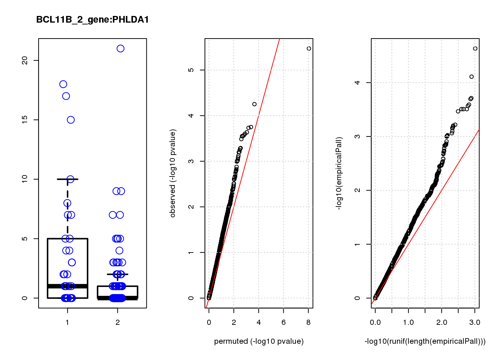
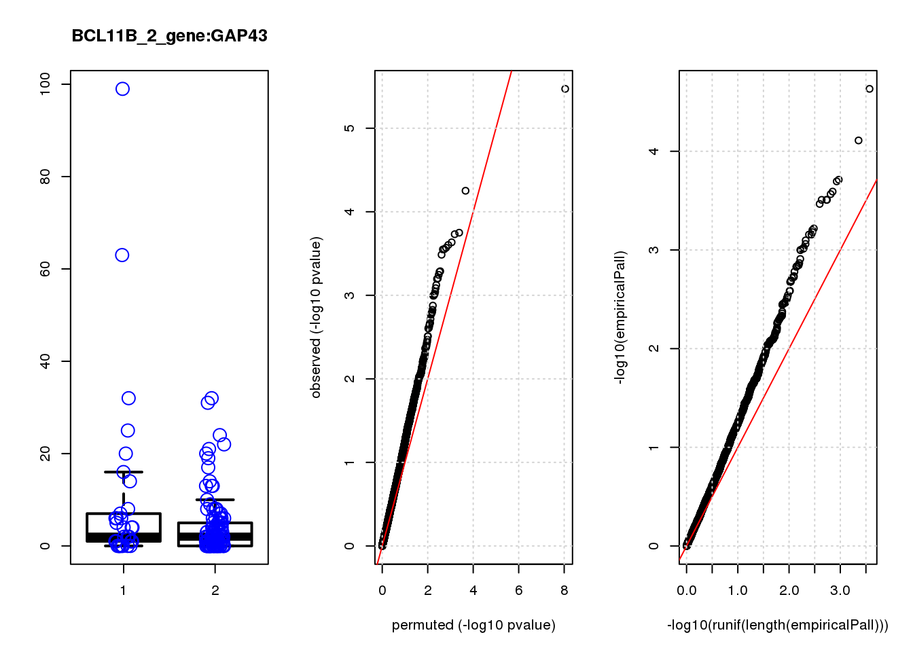
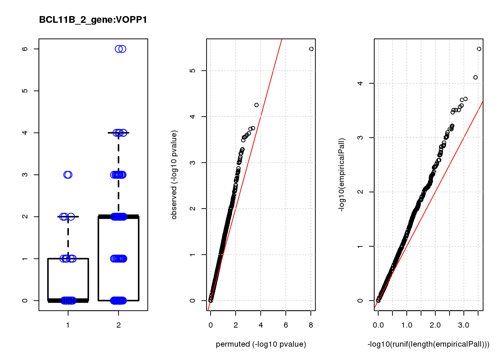
[1] "BCL11B_3_gene_edgeR-qlf_Neg1.Rd"
logFC logCPM F PValue FDR empiricalP empiricalP.FDR #in_real
DUSP1 -2.60 6.9 11.0 0.0011 1 0.0013 1 1
DKK3 1.20 6.9 11.0 0.0012 1 0.0014 1 2
FAAP20 -1.10 7.4 8.9 0.0032 1 0.0035 1 3
MED24 -1.60 6.9 8.6 0.0039 1 0.0041 1 4
SCML1 -1.80 6.8 8.5 0.0042 1 0.0043 1 5
ITM2C -1.30 7.1 8.4 0.0043 1 0.0045 1 6
FASTK -1.40 7.0 8.4 0.0043 1 0.0045 1 7
POLR1D 0.63 8.2 8.4 0.0044 1 0.0045 1 8
TCF7L1 1.10 6.8 8.1 0.0050 1 0.0051 1 9
GOLGA7 -0.94 7.5 7.8 0.0059 1 0.0059 1 10
1e-04 NA NA NA NA NA NA NA 0
1e-05 NA NA NA NA NA NA NA 0
1e-06 NA NA NA NA NA NA NA 0
1e-07 NA NA NA NA NA NA NA 0
1e-08 NA NA NA NA NA NA NA 0
1e-09 NA NA NA NA NA NA NA 0
1e-10 NA NA NA NA NA NA NA 0
#in_perm EmpiricalFDR
DUSP1 5.500 5.5
DKK3 6.000 3.0
FAAP20 15.000 5.0
MED24 18.000 4.4
SCML1 19.000 3.7
ITM2C 20.000 3.3
FASTK 20.000 2.8
POLR1D 20.000 2.4
TCF7L1 22.000 2.4
GOLGA7 26.000 2.6
1e-04 0.930 Inf
1e-05 0.330 Inf
1e-06 0.170 Inf
1e-07 0.033 Inf
1e-08 0.033 Inf
1e-09 0.000 NaN
1e-10 0.000 NaN
[1] "CHRNA3_1_gene_edgeR-qlf_Neg1.Rd"
logFC logCPM F PValue FDR empiricalP empiricalP.FDR #in_real
MT-ND4 1.3 11.0 11.0 0.0012 0.85 0.00085 0.75 1
ABHD17A 1.9 6.7 11.0 0.0012 0.85 0.00086 0.75 2
SCAMP3 -3.6 7.0 9.5 0.0025 0.85 0.00170 0.75 3
AP1S2 -2.8 7.5 9.4 0.0026 0.85 0.00170 0.75 4
PHAX -2.7 7.4 9.1 0.0030 0.85 0.00200 0.75 5
NUDCD2 1.4 7.5 8.9 0.0034 0.85 0.00220 0.75 6
KPNA2 1.4 8.7 8.2 0.0047 0.85 0.00300 0.75 7
PLK1 2.0 7.4 8.2 0.0049 0.85 0.00310 0.75 8
MIIP 1.8 6.8 8.1 0.0051 0.85 0.00330 0.75 9
BRIX1 -2.4 7.7 8.0 0.0054 0.85 0.00350 0.75 10
1e-04 NA NA NA NA NA NA NA 0
1e-05 NA NA NA NA NA NA NA 0
1e-06 NA NA NA NA NA NA NA 0
1e-07 NA NA NA NA NA NA NA 0
1e-08 NA NA NA NA NA NA NA 0
1e-09 NA NA NA NA NA NA NA 0
1e-10 NA NA NA NA NA NA NA 0
#in_perm EmpiricalFDR
MT-ND4 3.600 3.6
ABHD17A 3.700 1.8
SCAMP3 7.200 2.4
AP1S2 7.400 1.8
PHAX 8.500 1.7
NUDCD2 9.400 1.6
KPNA2 13.000 1.9
PLK1 13.000 1.7
MIIP 14.000 1.6
BRIX1 15.000 1.5
1e-04 0.770 Inf
1e-05 0.170 Inf
1e-06 0.033 Inf
1e-07 0.033 Inf
1e-08 0.000 NaN
1e-09 0.000 NaN
1e-10 0.000 NaN
[1] "CHRNA3_2_gene_edgeR-qlf_Neg1.Rd"
logFC logCPM F PValue FDR empiricalP empiricalP.FDR #in_real
PKMYT1 -1.80 6.8 14.0 0.00026 1 0.00039 1 1
SLC25A26 -1.50 6.7 12.0 0.00066 1 0.00082 1 2
PRDX1 0.43 9.6 11.0 0.00120 1 0.00140 1 3
NDN 0.79 7.5 10.0 0.00150 1 0.00170 1 4
HADHB 0.85 7.2 10.0 0.00170 1 0.00180 1 5
TCF7L2 0.86 7.1 9.8 0.00210 1 0.00220 1 6
PRKAR1A 0.72 7.3 9.4 0.00250 1 0.00260 1 7
ZNF503 1.00 7.0 9.1 0.00300 1 0.00300 1 8
AUTS2 0.76 7.2 8.9 0.00330 1 0.00330 1 9
GRSF1 0.60 7.7 8.8 0.00340 1 0.00340 1 10
1e-04 NA NA NA NA NA NA NA 0
1e-05 NA NA NA NA NA NA NA 0
1e-06 NA NA NA NA NA NA NA 0
1e-07 NA NA NA NA NA NA NA 0
1e-08 NA NA NA NA NA NA NA 0
1e-09 NA NA NA NA NA NA NA 0
1e-10 NA NA NA NA NA NA NA 0
#in_perm EmpiricalFDR
PKMYT1 1.700 1.7
SLC25A26 3.500 1.8
PRDX1 6.000 2.0
NDN 7.300 1.8
HADHB 8.000 1.6
TCF7L2 9.600 1.6
PRKAR1A 11.000 1.6
ZNF503 13.000 1.6
AUTS2 14.000 1.6
GRSF1 15.000 1.5
1e-04 0.800 Inf
1e-05 0.200 Inf
1e-06 0.067 Inf
1e-07 0.067 Inf
1e-08 0.033 Inf
1e-09 0.000 NaN
1e-10 0.000 NaN
[1] "CHRNA3_3_gene_edgeR-qlf_Neg1.Rd"
logFC logCPM F PValue FDR empiricalP empiricalP.FDR #in_real
CDC42EP3 1.80 6.8 22 5.5e-06 0.024 5.4e-05 0.21 1
RRP9 1.30 7.1 18 3.6e-05 0.055 1.4e-04 0.21 2
VGF 1.90 7.0 18 3.8e-05 0.055 1.5e-04 0.21 3
AKAP12 1.20 7.4 15 2.0e-04 0.210 4.2e-04 0.41 4
NANS 1.30 7.1 14 2.9e-04 0.250 5.2e-04 0.41 5
LPP 1.30 6.9 13 4.5e-04 0.300 7.5e-04 0.41 6
CIB1 1.00 7.3 12 5.5e-04 0.300 8.3e-04 0.41 7
SPTLC1 1.30 6.9 12 5.5e-04 0.300 8.3e-04 0.41 8
CBWD1 1.20 6.7 12 6.3e-04 0.300 9.3e-04 0.41 9
MALAT1 0.77 14.0 12 7.5e-04 0.300 1.0e-03 0.41 10
1e-04 NA NA NA NA NA NA NA 3
1e-05 NA NA NA NA NA NA NA 1
1e-06 NA NA NA NA NA NA NA 0
1e-07 NA NA NA NA NA NA NA 0
1e-08 NA NA NA NA NA NA NA 0
1e-09 NA NA NA NA NA NA NA 0
1e-10 NA NA NA NA NA NA NA 0
#in_perm EmpiricalFDR
CDC42EP3 0.230 0.23
RRP9 0.600 0.30
VGF 0.630 0.21
AKAP12 1.800 0.45
NANS 2.300 0.45
LPP 3.200 0.54
CIB1 3.600 0.51
SPTLC1 3.600 0.45
CBWD1 4.000 0.45
MALAT1 4.500 0.45
1e-04 1.100 0.36
1e-05 0.300 0.30
1e-06 0.100 Inf
1e-07 0.067 Inf
1e-08 0.000 NaN
1e-09 0.000 NaN
1e-10 0.000 NaN
[1] "DPYD_1_gene_edgeR-qlf_Neg1.Rd"
logFC logCPM F PValue FDR empiricalP empiricalP.FDR
CTD-2006C1.2 1.90 7.3 45 3.1e-10 1.3e-06 6.3e-05 0.27
DUSP4 1.20 6.9 21 9.3e-06 2.0e-02 2.1e-04 0.35
CTSD 1.00 7.5 18 2.9e-05 4.2e-02 2.9e-04 0.35
NQO1 1.30 7.5 17 5.9e-05 6.3e-02 3.3e-04 0.35
NTRK2 -1.20 7.2 15 1.2e-04 1.0e-01 5.3e-04 0.41
RHNO1 -1.10 7.1 14 2.1e-04 1.4e-01 7.7e-04 0.41
TUBA1C 1.20 7.1 14 2.4e-04 1.4e-01 8.3e-04 0.41
CDC20 -1.40 7.6 13 4.0e-04 1.9e-01 1.1e-03 0.41
GADD45A 0.98 7.7 13 4.3e-04 1.9e-01 1.1e-03 0.41
FASN -0.95 7.0 13 4.4e-04 1.9e-01 1.2e-03 0.41
1e-04 NA NA NA NA NA NA NA
1e-05 NA NA NA NA NA NA NA
1e-06 NA NA NA NA NA NA NA
1e-07 NA NA NA NA NA NA NA
1e-08 NA NA NA NA NA NA NA
1e-09 NA NA NA NA NA NA NA
1e-10 NA NA NA NA NA NA NA
#in_real #in_perm EmpiricalFDR
CTD-2006C1.2 1 0.27 0.27
DUSP4 2 0.90 0.45
CTSD 3 1.20 0.41
NQO1 4 1.40 0.35
NTRK2 5 2.30 0.45
RHNO1 6 3.30 0.55
TUBA1C 7 3.50 0.50
CDC20 8 4.60 0.57
GADD45A 9 4.90 0.54
FASN 10 5.00 0.50
1e-04 4 1.90 0.48
1e-05 2 0.90 0.45
1e-06 1 0.50 0.50
1e-07 1 0.37 0.37
1e-08 1 0.27 0.27
1e-09 1 0.27 0.27
1e-10 0 0.27 Inf
[1] "DPYD_2_gene_edgeR-qlf_Neg1.Rd"
logFC logCPM F PValue FDR empiricalP empiricalP.FDR
MEG3 0.98 7.8 14.0 0.00030 0.9 0.00043 0.79
CSRP1 0.97 7.4 12.0 0.00080 0.9 0.00089 0.79
RP11-995C19.3 -0.89 6.8 11.0 0.00093 0.9 0.00096 0.79
TAGLN 0.79 9.4 11.0 0.00130 0.9 0.00140 0.79
SPAG7 0.36 8.3 11.0 0.00140 0.9 0.00140 0.79
CCDC184 0.66 7.1 9.6 0.00220 0.9 0.00200 0.79
ABCD4 0.68 6.8 9.6 0.00220 0.9 0.00210 0.79
NUDT3 -0.72 6.9 9.3 0.00260 0.9 0.00240 0.79
ACO2 0.53 7.2 9.3 0.00260 0.9 0.00250 0.79
SMPD4 -0.74 6.7 9.0 0.00300 0.9 0.00290 0.79
1e-04 NA NA NA NA NA NA NA
1e-05 NA NA NA NA NA NA NA
1e-06 NA NA NA NA NA NA NA
1e-07 NA NA NA NA NA NA NA
1e-08 NA NA NA NA NA NA NA
1e-09 NA NA NA NA NA NA NA
1e-10 NA NA NA NA NA NA NA
#in_real #in_perm EmpiricalFDR
MEG3 1 1.800 1.8
CSRP1 2 3.800 1.9
RP11-995C19.3 3 4.100 1.4
TAGLN 4 5.800 1.5
SPAG7 5 6.000 1.2
CCDC184 6 8.700 1.4
ABCD4 7 8.900 1.3
NUDT3 8 10.000 1.3
ACO2 9 11.000 1.2
SMPD4 10 12.000 1.2
1e-04 0 0.870 Inf
1e-05 0 0.230 Inf
1e-06 0 0.130 Inf
1e-07 0 0.100 Inf
1e-08 0 0.067 Inf
1e-09 0 0.000 NaN
1e-10 0 0.000 NaN
[1] "DPYD_3_gene_edgeR-qlf_Neg1.Rd"
logFC logCPM F PValue FDR empiricalP empiricalP.FDR #in_real
NEAT1 -1.70 8.2 16.0 0.00011 0.49 0.00026 0.98 1
PRR11 1.10 6.7 14.0 0.00028 0.60 0.00046 0.98 2
EMC9 1.00 6.8 12.0 0.00071 1.00 0.00082 1.00 3
SERINC2 -1.20 6.8 10.0 0.00170 1.00 0.00170 1.00 4
MAX 0.87 6.8 9.9 0.00190 1.00 0.00200 1.00 5
APEX1 0.43 9.1 9.9 0.00200 1.00 0.00200 1.00 6
SHMT2 0.78 7.7 9.4 0.00260 1.00 0.00250 1.00 7
IFT81 0.82 6.8 9.2 0.00280 1.00 0.00270 1.00 8
SOCS3 0.98 6.8 9.0 0.00300 1.00 0.00280 1.00 9
LARP6 -0.99 7.0 8.8 0.00350 1.00 0.00320 1.00 10
1e-04 NA NA NA NA NA NA NA 0
1e-05 NA NA NA NA NA NA NA 0
1e-06 NA NA NA NA NA NA NA 0
1e-07 NA NA NA NA NA NA NA 0
1e-08 NA NA NA NA NA NA NA 0
1e-09 NA NA NA NA NA NA NA 0
1e-10 NA NA NA NA NA NA NA 0
#in_perm EmpiricalFDR
NEAT1 1.100 1.10
PRR11 2.000 0.98
EMC9 3.500 1.20
SERINC2 7.400 1.80
MAX 8.500 1.70
APEX1 8.600 1.40
SHMT2 11.000 1.50
IFT81 11.000 1.40
SOCS3 12.000 1.40
LARP6 14.000 1.40
1e-04 1.000 Inf
1e-05 0.200 Inf
1e-06 0.067 Inf
1e-07 0.000 NaN
1e-08 0.000 NaN
1e-09 0.000 NaN
1e-10 0.000 NaN
[1] "GALNT10_1_gene_edgeR-qlf_Neg1.Rd"
logFC logCPM F PValue FDR empiricalP empiricalP.FDR #in_real
FAM104B -1.10 7.0 13.0 0.00036 0.87 0.00046 0.95 1
DECR1 -1.20 7.0 12.0 0.00061 0.87 0.00066 0.95 2
AKAP13 -1.20 6.7 12.0 0.00061 0.87 0.00069 0.95 3
ASRGL1 -1.00 7.1 12.0 0.00083 0.89 0.00094 0.95 4
CCDC50 0.74 7.1 11.0 0.00120 0.95 0.00120 0.95 5
CLK3 0.87 6.8 11.0 0.00130 0.95 0.00130 0.95 6
ID3 -1.20 8.1 9.7 0.00210 1.00 0.00210 0.98 7
FANCL -1.10 6.8 9.7 0.00210 1.00 0.00210 0.98 8
ZDHHC12 -1.10 6.8 9.3 0.00260 1.00 0.00260 0.98 9
TRMT61A 0.82 6.7 9.0 0.00300 1.00 0.00300 0.98 10
1e-04 NA NA NA NA NA NA NA 0
1e-05 NA NA NA NA NA NA NA 0
1e-06 NA NA NA NA NA NA NA 0
1e-07 NA NA NA NA NA NA NA 0
1e-08 NA NA NA NA NA NA NA 0
1e-09 NA NA NA NA NA NA NA 0
1e-10 NA NA NA NA NA NA NA 0
#in_perm EmpiricalFDR
FAM104B 2.000 2.00
DECR1 2.800 1.40
AKAP13 2.900 0.98
ASRGL1 4.000 1.00
CCDC50 5.300 1.10
CLK3 5.700 0.95
ID3 9.000 1.30
FANCL 9.000 1.10
ZDHHC12 11.000 1.30
TRMT61A 13.000 1.30
1e-04 0.970 Inf
1e-05 0.230 Inf
1e-06 0.033 Inf
1e-07 0.000 NaN
1e-08 0.000 NaN
1e-09 0.000 NaN
1e-10 0.000 NaN
[1] "GALNT10_2_gene_edgeR-qlf_Neg1.Rd"
logFC logCPM F PValue FDR empiricalP empiricalP.FDR #in_real
FZD3 0.54 7.7 11.0 0.0010 1 0.0011 1 1
SYPL1 -0.91 7.1 11.0 0.0011 1 0.0012 1 2
PUS3 -1.10 6.7 11.0 0.0013 1 0.0015 1 3
CMBL -1.00 6.8 9.6 0.0022 1 0.0023 1 4
TGIF2 -0.93 6.9 9.4 0.0025 1 0.0025 1 5
ZNF787 -0.98 6.7 9.3 0.0027 1 0.0027 1 6
TP53RK 0.71 7.0 9.3 0.0027 1 0.0027 1 7
MIS12 0.78 6.8 8.9 0.0032 1 0.0032 1 8
PRR11 0.85 6.7 8.4 0.0042 1 0.0041 1 9
CRABP1 -1.20 10.0 7.8 0.0058 1 0.0055 1 10
1e-04 NA NA NA NA NA NA NA 0
1e-05 NA NA NA NA NA NA NA 0
1e-06 NA NA NA NA NA NA NA 0
1e-07 NA NA NA NA NA NA NA 0
1e-08 NA NA NA NA NA NA NA 0
1e-09 NA NA NA NA NA NA NA 0
1e-10 NA NA NA NA NA NA NA 0
#in_perm EmpiricalFDR
FZD3 4.800 4.8
SYPL1 5.000 2.5
PUS3 6.400 2.1
CMBL 9.600 2.4
TGIF2 11.000 2.1
ZNF787 12.000 1.9
TP53RK 12.000 1.7
MIS12 14.000 1.7
PRR11 17.000 1.9
CRABP1 24.000 2.4
1e-04 0.900 Inf
1e-05 0.230 Inf
1e-06 0.130 Inf
1e-07 0.033 Inf
1e-08 0.033 Inf
1e-09 0.000 NaN
1e-10 0.000 NaN
[1] "GALNT10_3_gene_edgeR-qlf_Neg1.Rd"
logFC logCPM F PValue FDR empiricalP empiricalP.FDR #in_real
NEAT1 1.30 8.8 20.0 1.2e-05 0.051 5.5e-05 0.23 1
ZNF512 0.88 6.8 14.0 2.2e-04 0.470 4.3e-04 0.81 2
SPOCK1 1.00 6.7 13.0 3.8e-04 0.530 5.8e-04 0.81 3
GAP43 0.92 8.2 12.0 8.1e-04 0.860 1.0e-03 0.97 4
PKIB -0.97 7.0 11.0 1.1e-03 0.960 1.4e-03 0.97 5
NEU1 0.78 7.2 9.6 2.3e-03 1.000 2.5e-03 0.97 6
LYPD1 0.77 7.7 9.4 2.4e-03 1.000 2.6e-03 0.97 7
SPARC 0.51 8.7 9.3 2.6e-03 1.000 2.8e-03 0.97 8
RAB13 0.48 8.0 9.1 2.8e-03 1.000 3.1e-03 0.97 9
PHLDA1 0.94 7.1 9.1 3.0e-03 1.000 3.2e-03 0.97 10
1e-04 NA NA NA NA NA NA NA 1
1e-05 NA NA NA NA NA NA NA 0
1e-06 NA NA NA NA NA NA NA 0
1e-07 NA NA NA NA NA NA NA 0
1e-08 NA NA NA NA NA NA NA 0
1e-09 NA NA NA NA NA NA NA 0
1e-10 NA NA NA NA NA NA NA 0
#in_perm EmpiricalFDR
NEAT1 0.23 0.23
ZNF512 1.80 0.92
SPOCK1 2.40 0.81
GAP43 4.30 1.10
PKIB 5.80 1.20
NEU1 10.00 1.70
LYPD1 11.00 1.60
SPARC 12.00 1.50
RAB13 13.00 1.50
PHLDA1 14.00 1.40
1e-04 1.10 1.10
1e-05 0.23 Inf
1e-06 0.00 NaN
1e-07 0.00 NaN
1e-08 0.00 NaN
1e-09 0.00 NaN
1e-10 0.00 NaN
[1] "KCTD13_1_gene_edgeR-qlf_Neg1.Rd"
logFC logCPM F PValue FDR empiricalP empiricalP.FDR #in_real
CWC25 0.99 6.8 13.0 0.00047 0.95 0.00061 0.86 1
GNG5 -0.43 9.2 12.0 0.00082 0.95 0.00098 0.86 2
HES6 1.10 9.2 11.0 0.00092 0.95 0.00110 0.86 3
SLC25A39 -0.80 7.6 10.0 0.00180 0.95 0.00200 0.86 4
CPNE1 0.69 7.4 10.0 0.00180 0.95 0.00210 0.86 5
CDO1 0.92 6.8 9.9 0.00200 0.95 0.00220 0.86 6
USMG5 -0.43 8.8 9.7 0.00210 0.95 0.00230 0.86 7
NLRP1 -0.97 7.5 9.7 0.00210 0.95 0.00230 0.86 8
MRPL23 -0.71 7.5 8.9 0.00330 0.95 0.00350 0.86 9
RABAC1 -0.56 7.9 8.8 0.00340 0.95 0.00360 0.86 10
1e-04 NA NA NA NA NA NA NA 0
1e-05 NA NA NA NA NA NA NA 0
1e-06 NA NA NA NA NA NA NA 0
1e-07 NA NA NA NA NA NA NA 0
1e-08 NA NA NA NA NA NA NA 0
1e-09 NA NA NA NA NA NA NA 0
1e-10 NA NA NA NA NA NA NA 0
#in_perm EmpiricalFDR
CWC25 2.600 2.6
GNG5 4.300 2.1
HES6 4.600 1.5
SLC25A39 8.900 2.2
CPNE1 8.900 1.8
CDO1 9.600 1.6
USMG5 10.000 1.4
NLRP1 10.000 1.3
MRPL23 15.000 1.7
RABAC1 16.000 1.6
1e-04 0.700 Inf
1e-05 0.270 Inf
1e-06 0.100 Inf
1e-07 0.067 Inf
1e-08 0.067 Inf
1e-09 0.067 Inf
1e-10 0.033 Inf
[1] "KCTD13_2_gene_edgeR-qlf_Neg1.Rd"
logFC logCPM F PValue FDR empiricalP empiricalP.FDR
NINJ1 -1.30 7.0 14.0 0.00029 1 0.00058 0.97
RDX -0.54 8.4 11.0 0.00120 1 0.00150 0.97
PIGBOS1 -1.10 6.8 10.0 0.00170 1 0.00190 0.97
SEC14L1 -1.20 6.8 10.0 0.00170 1 0.00190 0.97
ELOC -0.47 8.4 10.0 0.00180 1 0.00190 0.97
PTPN1 -1.10 6.9 9.8 0.00210 1 0.00210 0.97
ZNF787 -1.10 6.8 9.6 0.00230 1 0.00230 0.97
PDLIM1 -0.98 7.3 9.6 0.00230 1 0.00230 0.97
RP11-14N7.2 -1.10 7.5 9.3 0.00260 1 0.00260 0.97
KLHDC8B -1.20 7.1 9.2 0.00270 1 0.00270 0.97
1e-04 NA NA NA NA NA NA NA
1e-05 NA NA NA NA NA NA NA
1e-06 NA NA NA NA NA NA NA
1e-07 NA NA NA NA NA NA NA
1e-08 NA NA NA NA NA NA NA
1e-09 NA NA NA NA NA NA NA
1e-10 NA NA NA NA NA NA NA
#in_real #in_perm EmpiricalFDR
NINJ1 1 2.400 2.4
RDX 2 6.300 3.2
PIGBOS1 3 7.800 2.6
SEC14L1 4 7.800 2.0
ELOC 5 8.100 1.6
PTPN1 6 9.000 1.5
ZNF787 7 9.600 1.4
PDLIM1 8 9.800 1.2
RP11-14N7.2 9 11.000 1.2
KLHDC8B 10 11.000 1.1
1e-04 0 1.000 Inf
1e-05 0 0.200 Inf
1e-06 0 0.067 Inf
1e-07 0 0.067 Inf
1e-08 0 0.033 Inf
1e-09 0 0.033 Inf
1e-10 0 0.000 NaN
[1] "KCTD13_3_gene_edgeR-qlf_Neg1.Rd"
logFC logCPM F PValue FDR empiricalP empiricalP.FDR #in_real
TLE4 1.4 7.0 16.0 0.00010 0.40 0.00027 0.73 1
GEMIN2 1.3 6.9 15.0 0.00018 0.40 0.00034 0.73 2
IPO9 1.1 7.2 12.0 0.00065 0.92 0.00079 0.81 3
SLC20A1 1.1 6.8 10.0 0.00170 0.92 0.00170 0.81 4
HSPA14 1.1 6.9 10.0 0.00190 0.92 0.00170 0.81 5
GOLGB1 1.2 6.8 9.8 0.00200 0.92 0.00190 0.81 6
MYL9 -2.2 7.6 9.6 0.00230 0.92 0.00210 0.81 7
STMN3 -1.0 7.7 9.6 0.00230 0.92 0.00210 0.81 8
HNRNPL 1.0 7.1 9.5 0.00240 0.92 0.00220 0.81 9
RAB32 -2.1 6.8 9.3 0.00280 0.92 0.00250 0.81 10
1e-04 NA NA NA NA NA NA NA 0
1e-05 NA NA NA NA NA NA NA 0
1e-06 NA NA NA NA NA NA NA 0
1e-07 NA NA NA NA NA NA NA 0
1e-08 NA NA NA NA NA NA NA 0
1e-09 NA NA NA NA NA NA NA 0
1e-10 NA NA NA NA NA NA NA 0
#in_perm EmpiricalFDR
TLE4 1.200 1.20
GEMIN2 1.500 0.73
IPO9 3.500 1.20
SLC20A1 7.200 1.80
HSPA14 7.600 1.50
GOLGB1 8.100 1.40
MYL9 9.200 1.30
STMN3 9.200 1.20
HNRNPL 9.800 1.10
RAB32 11.000 1.10
1e-04 1.200 Inf
1e-05 0.470 Inf
1e-06 0.170 Inf
1e-07 0.033 Inf
1e-08 0.000 NaN
1e-09 0.000 NaN
1e-10 0.000 NaN
[1] "KMT2E_1_gene_edgeR-qlf_Neg1.Rd"
logFC logCPM F PValue FDR empiricalP empiricalP.FDR #in_real
FTH1 0.99 12.0 12.0 0.00063 1 0.0012 1 1
FAM161A -2.40 6.9 12.0 0.00079 1 0.0013 1 2
CNRIP1 1.20 6.9 9.6 0.00230 1 0.0033 1 3
NCSTN -2.30 6.8 9.6 0.00230 1 0.0033 1 4
BIN1 1.30 6.8 9.5 0.00240 1 0.0034 1 5
FANCL -2.20 6.8 9.4 0.00250 1 0.0037 1 6
ZBTB8OS -1.20 7.5 9.4 0.00260 1 0.0038 1 7
NR2F2 0.92 7.5 8.7 0.00380 1 0.0050 1 8
DEF8 -1.10 7.5 8.6 0.00390 1 0.0052 1 9
DIO3 -2.20 7.2 8.5 0.00410 1 0.0054 1 10
1e-04 NA NA NA NA NA NA NA 0
1e-05 NA NA NA NA NA NA NA 0
1e-06 NA NA NA NA NA NA NA 0
1e-07 NA NA NA NA NA NA NA 0
1e-08 NA NA NA NA NA NA NA 0
1e-09 NA NA NA NA NA NA NA 0
1e-10 NA NA NA NA NA NA NA 0
#in_perm EmpiricalFDR
FTH1 4.900 4.9
FAM161A 5.600 2.8
CNRIP1 14.000 4.7
NCSTN 14.000 3.6
BIN1 15.000 3.0
FANCL 16.000 2.6
ZBTB8OS 16.000 2.3
NR2F2 21.000 2.7
DEF8 22.000 2.5
DIO3 23.000 2.3
1e-04 1.700 Inf
1e-05 0.670 Inf
1e-06 0.400 Inf
1e-07 0.200 Inf
1e-08 0.100 Inf
1e-09 0.067 Inf
1e-10 0.067 Inf
[1] "KMT2E_2_gene_edgeR-qlf_Neg1.Rd"
logFC logCPM F PValue FDR empiricalP empiricalP.FDR #in_real
EZR 1.2 7.6 19.0 2.0e-05 0.086 9.9e-05 0.38 1
QPRT -2.7 6.9 17.0 6.9e-05 0.150 1.7e-04 0.38 2
RNF168 -2.2 6.7 15.0 1.7e-04 0.250 3.4e-04 0.50 3
RAB8A -1.5 7.1 12.0 7.2e-04 0.750 1.1e-03 0.97 4
CCDC28B -1.8 6.7 12.0 8.5e-04 0.750 1.3e-03 0.97 5
CSNK1D -1.3 7.2 10.0 1.7e-03 0.990 2.4e-03 0.97 6
CCDC107 -1.4 6.9 9.8 2.1e-03 0.990 2.8e-03 0.97 7
ID3 -1.8 8.2 9.6 2.3e-03 0.990 3.1e-03 0.97 8
NKTR -1.2 7.2 9.5 2.5e-03 0.990 3.2e-03 0.97 9
CMBL -1.5 6.9 9.2 2.8e-03 0.990 3.5e-03 0.97 10
1e-04 NA NA NA NA NA NA NA 2
1e-05 NA NA NA NA NA NA NA 0
1e-06 NA NA NA NA NA NA NA 0
1e-07 NA NA NA NA NA NA NA 0
1e-08 NA NA NA NA NA NA NA 0
1e-09 NA NA NA NA NA NA NA 0
1e-10 NA NA NA NA NA NA NA 0
#in_perm EmpiricalFDR
EZR 0.430 0.43
QPRT 0.770 0.38
RNF168 1.500 0.50
RAB8A 4.800 1.20
CCDC28B 5.800 1.20
CSNK1D 10.000 1.70
CCDC107 12.000 1.80
ID3 13.000 1.70
NKTR 14.000 1.60
CMBL 16.000 1.60
1e-04 0.870 0.43
1e-05 0.270 Inf
1e-06 0.170 Inf
1e-07 0.033 Inf
1e-08 0.033 Inf
1e-09 0.033 Inf
1e-10 0.000 NaN
[1] "KMT2E_3_gene_edgeR-qlf_Neg1.Rd"
logFC logCPM F PValue FDR empiricalP empiricalP.FDR #in_real
TP53I3 1.40 7.0 19.0 2.7e-05 0.11 0.00012 0.53 1
GPT2 -1.80 6.9 14.0 2.3e-04 0.50 0.00046 0.98 2
FDXR 1.20 7.1 12.0 7.0e-04 1.00 0.00100 1.00 3
NCSTN -1.70 6.8 11.0 1.3e-03 1.00 0.00160 1.00 4
HSP90AA1 -0.49 10.0 9.7 2.1e-03 1.00 0.00260 1.00 5
C11orf73 -0.70 7.9 9.2 2.8e-03 1.00 0.00320 1.00 6
KIN -1.40 6.8 8.7 3.6e-03 1.00 0.00400 1.00 7
ZNF830 -1.30 6.8 8.3 4.6e-03 1.00 0.00490 1.00 8
GOT2 -0.87 7.4 8.3 4.6e-03 1.00 0.00490 1.00 9
CEBPB -1.80 6.9 8.1 5.0e-03 1.00 0.00530 1.00 10
1e-04 NA NA NA NA NA NA NA 1
1e-05 NA NA NA NA NA NA NA 0
1e-06 NA NA NA NA NA NA NA 0
1e-07 NA NA NA NA NA NA NA 0
1e-08 NA NA NA NA NA NA NA 0
1e-09 NA NA NA NA NA NA NA 0
1e-10 NA NA NA NA NA NA NA 0
#in_perm EmpiricalFDR
TP53I3 0.530 0.53
GPT2 2.000 0.98
FDXR 4.300 1.40
NCSTN 6.700 1.70
HSP90AA1 11.000 2.20
C11orf73 14.000 2.30
KIN 17.000 2.40
ZNF830 21.000 2.60
GOT2 21.000 2.30
CEBPB 23.000 2.30
1e-04 1.100 1.10
1e-05 0.230 Inf
1e-06 0.100 Inf
1e-07 0.033 Inf
1e-08 0.000 NaN
1e-09 0.000 NaN
1e-10 0.000 NaN
[1] "LINC00637_1_gene_edgeR-qlf_Neg1.Rd"
logFC logCPM F PValue FDR empiricalP empiricalP.FDR
HSP90AA1 0.93 11.0 33.0 3.5e-08 0.00015 0.00000 0.00
MALAT1 0.64 14.0 19.0 2.5e-05 0.04100 0.00012 0.20
PKMYT1 -1.50 6.7 18.0 2.9e-05 0.04100 0.00014 0.20
FKBP1B -1.30 6.8 15.0 1.5e-04 0.16000 0.00040 0.42
DERL1 -0.92 6.9 12.0 8.4e-04 0.72000 0.00130 0.94
HSPH1 0.82 7.6 11.0 1.1e-03 0.77000 0.00160 0.94
SEP15 0.50 8.0 10.0 1.8e-03 0.99000 0.00230 0.94
JAG1 1.00 7.0 9.9 1.9e-03 0.99000 0.00240 0.94
NEFM 1.10 7.8 9.2 2.8e-03 0.99000 0.00320 0.94
ZDHHC3 -0.82 6.9 9.1 2.9e-03 0.99000 0.00320 0.94
1e-04 NA NA NA NA NA NA NA
1e-05 NA NA NA NA NA NA NA
1e-06 NA NA NA NA NA NA NA
1e-07 NA NA NA NA NA NA NA
1e-08 NA NA NA NA NA NA NA
1e-09 NA NA NA NA NA NA NA
1e-10 NA NA NA NA NA NA NA
#in_real #in_perm EmpiricalFDR
HSP90AA1 1 0.000 0.000
MALAT1 2 0.500 0.250
PKMYT1 3 0.600 0.200
FKBP1B 4 1.700 0.420
DERL1 5 5.700 1.100
HSPH1 6 6.900 1.100
SEP15 7 9.900 1.400
JAG1 8 10.000 1.300
NEFM 9 14.000 1.500
ZDHHC3 10 14.000 1.400
1e-04 3 1.300 0.430
1e-05 1 0.400 0.400
1e-06 1 0.130 0.130
1e-07 1 0.067 0.067
1e-08 0 0.000 NaN
1e-09 0 0.000 NaN
1e-10 0 0.000 NaN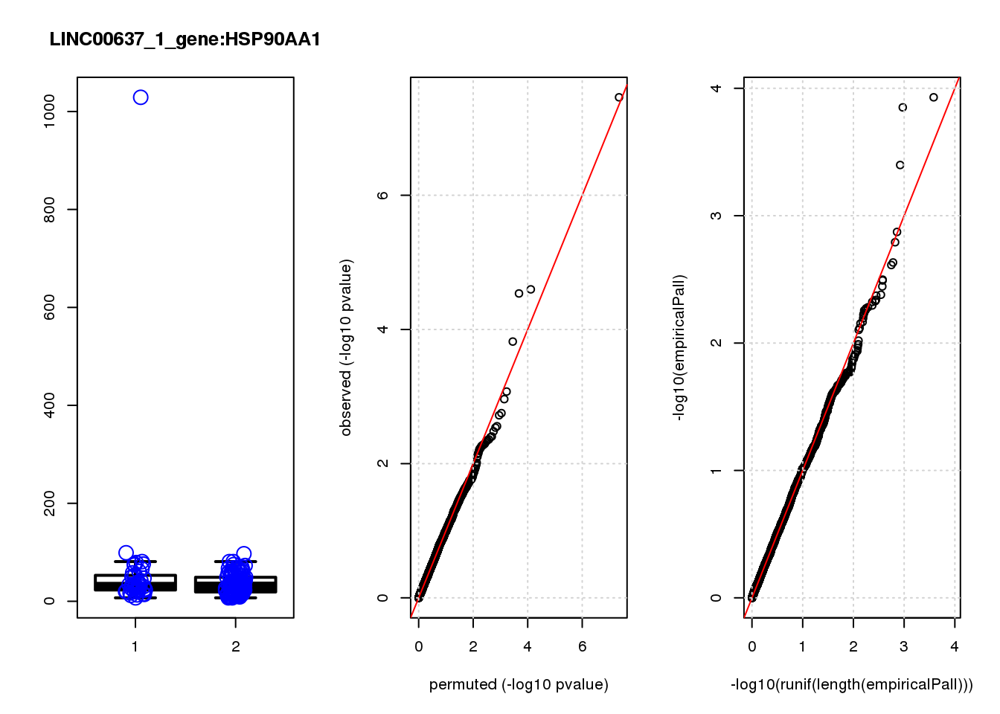
[1] "LINC00637_2_gene_edgeR-qlf_Neg1.Rd"
logFC logCPM F PValue FDR empiricalP empiricalP.FDR #in_real
TP53I3 1.20 7.1 17.0 5.1e-05 0.22 0.00019 0.83 1
SPOCK1 1.00 6.7 11.0 9.2e-04 1.00 0.00140 1.00 2
COASY -1.20 6.8 11.0 1.2e-03 1.00 0.00170 1.00 3
BRCA1 0.96 6.8 9.9 1.9e-03 1.00 0.00250 1.00 4
BAALC -1.40 6.8 9.8 2.0e-03 1.00 0.00260 1.00 5
DAP3 -0.68 7.4 8.8 3.5e-03 1.00 0.00380 1.00 6
SOX21 0.84 6.8 8.0 5.3e-03 1.00 0.00560 1.00 7
PIGH -0.93 6.9 7.9 5.6e-03 1.00 0.00600 1.00 8
C9orf3 -1.00 6.7 7.8 5.7e-03 1.00 0.00610 1.00 9
STT3B -0.88 6.9 7.7 6.1e-03 1.00 0.00650 1.00 10
1e-04 NA NA NA NA NA NA NA 1
1e-05 NA NA NA NA NA NA NA 0
1e-06 NA NA NA NA NA NA NA 0
1e-07 NA NA NA NA NA NA NA 0
1e-08 NA NA NA NA NA NA NA 0
1e-09 NA NA NA NA NA NA NA 0
1e-10 NA NA NA NA NA NA NA 0
#in_perm EmpiricalFDR
TP53I3 0.830 0.83
SPOCK1 6.200 3.10
COASY 7.300 2.40
BRCA1 11.000 2.70
BAALC 11.000 2.20
DAP3 16.000 2.70
SOX21 24.000 3.40
PIGH 26.000 3.20
C9orf3 26.000 2.90
STT3B 28.000 2.80
1e-04 1.200 1.20
1e-05 0.400 Inf
1e-06 0.067 Inf
1e-07 0.033 Inf
1e-08 0.033 Inf
1e-09 0.033 Inf
1e-10 0.000 NaN
[1] "LINC00637_3_gene_edgeR-qlf_Neg1.Rd"
logFC logCPM F PValue FDR empiricalP empiricalP.FDR #in_real
MIAT -1.80 6.9 18 0.00004 0.17 0.00015 0.63 1
TNFRSF12A 1.10 8.0 14 0.00029 0.42 0.00057 0.76 2
DIO3 -1.20 7.1 14 0.00029 0.42 0.00057 0.76 3
TPM1 0.73 8.5 12 0.00059 0.61 0.00094 0.76 4
ZNHIT6 0.83 6.7 12 0.00070 0.61 0.00110 0.76 5
TAGLN3 -1.30 7.1 11 0.00088 0.63 0.00120 0.76 6
SMOC1 -1.10 7.0 11 0.00120 0.65 0.00150 0.76 7
MTPN 0.62 7.2 11 0.00120 0.65 0.00150 0.76 8
PIM3 0.81 6.8 11 0.00130 0.65 0.00160 0.76 9
MCM5 -0.84 7.1 10 0.00170 0.68 0.00200 0.76 10
1e-04 NA NA NA NA NA NA NA 1
1e-05 NA NA NA NA NA NA NA 0
1e-06 NA NA NA NA NA NA NA 0
1e-07 NA NA NA NA NA NA NA 0
1e-08 NA NA NA NA NA NA NA 0
1e-09 NA NA NA NA NA NA NA 0
1e-10 NA NA NA NA NA NA NA 0
#in_perm EmpiricalFDR
MIAT 0.630 0.63
TNFRSF12A 2.500 1.20
DIO3 2.500 0.82
TPM1 4.100 1.00
ZNHIT6 4.600 0.91
TAGLN3 5.200 0.87
SMOC1 6.400 0.91
MTPN 6.400 0.80
PIM3 6.900 0.77
MCM5 8.600 0.86
1e-04 1.200 1.20
1e-05 0.200 Inf
1e-06 0.100 Inf
1e-07 0.033 Inf
1e-08 0.033 Inf
1e-09 0.000 NaN
1e-10 0.000 NaN
[1] "LOC100507431_1_gene_edgeR-qlf_Neg1.Rd"
logFC logCPM F PValue FDR empiricalP empiricalP.FDR #in_real
CCND2 1.60 7.2 17.0 5.4e-05 0.23 0.00018 0.77 1
SNHG1 0.86 8.2 10.0 1.5e-03 1.00 0.00150 1.00 2
TPM1 0.88 8.4 9.7 2.2e-03 1.00 0.00200 1.00 3
TBL1XR1 -1.70 6.8 9.7 2.2e-03 1.00 0.00200 1.00 4
TCEAL7 1.30 6.8 9.4 2.5e-03 1.00 0.00230 1.00 5
C4orf48 -0.87 7.9 9.1 3.0e-03 1.00 0.00260 1.00 6
DOHH -1.30 7.1 9.0 3.1e-03 1.00 0.00270 1.00 7
MTERF4 0.98 6.9 9.0 3.2e-03 1.00 0.00280 1.00 8
MTA1 -1.20 7.1 8.8 3.5e-03 1.00 0.00300 1.00 9
PPP1CB 0.89 7.4 8.7 3.6e-03 1.00 0.00310 1.00 10
1e-04 NA NA NA NA NA NA NA 1
1e-05 NA NA NA NA NA NA NA 0
1e-06 NA NA NA NA NA NA NA 0
1e-07 NA NA NA NA NA NA NA 0
1e-08 NA NA NA NA NA NA NA 0
1e-09 NA NA NA NA NA NA NA 0
1e-10 NA NA NA NA NA NA NA 0
#in_perm EmpiricalFDR
CCND2 0.770 0.77
SNHG1 6.300 3.20
TPM1 8.600 2.90
TBL1XR1 8.600 2.20
TCEAL7 9.800 2.00
C4orf48 11.000 1.90
DOHH 12.000 1.70
MTERF4 12.000 1.50
MTA1 13.000 1.40
PPP1CB 13.000 1.30
1e-04 0.900 0.90
1e-05 0.430 Inf
1e-06 0.230 Inf
1e-07 0.130 Inf
1e-08 0.100 Inf
1e-09 0.100 Inf
1e-10 0.033 Inf
[1] "LOC100507431_2_gene_edgeR-qlf_Neg1.Rd"
logFC logCPM F PValue FDR empiricalP empiricalP.FDR #in_real
S100A13 1.40 7.2 20 1.2e-05 0.036 9.9e-05 0.23 1
DHRS7 1.30 6.8 20 1.6e-05 0.036 1.1e-04 0.23 2
SPOCK1 1.30 6.7 17 5.9e-05 0.073 2.3e-04 0.28 3
LAPTM4A 0.99 7.2 17 6.7e-05 0.073 2.6e-04 0.28 4
GPM6B 0.69 8.5 16 9.2e-05 0.080 3.3e-04 0.29 5
GAP43 1.20 8.2 15 1.4e-04 0.099 4.3e-04 0.31 6
SPARC 0.69 8.7 14 3.2e-04 0.200 7.3e-04 0.41 7
KCTD1 1.10 6.8 13 3.7e-04 0.200 7.7e-04 0.41 8
SDC2 0.81 7.8 13 5.2e-04 0.250 9.7e-04 0.41 9
CRABP1 -1.80 9.9 12 5.7e-04 0.250 1.0e-03 0.41 10
1e-04 NA NA NA NA NA NA NA 5
1e-05 NA NA NA NA NA NA NA 0
1e-06 NA NA NA NA NA NA NA 0
1e-07 NA NA NA NA NA NA NA 0
1e-08 NA NA NA NA NA NA NA 0
1e-09 NA NA NA NA NA NA NA 0
1e-10 NA NA NA NA NA NA NA 0
#in_perm EmpiricalFDR
S100A13 0.430 0.43
DHRS7 0.470 0.23
SPOCK1 1.000 0.33
LAPTM4A 1.100 0.28
GPM6B 1.500 0.29
GAP43 1.900 0.31
SPARC 3.200 0.46
KCTD1 3.400 0.42
SDC2 4.200 0.47
CRABP1 4.500 0.45
1e-04 1.500 0.31
1e-05 0.430 Inf
1e-06 0.200 Inf
1e-07 0.067 Inf
1e-08 0.067 Inf
1e-09 0.000 NaN
1e-10 0.000 NaN
[1] "LOC100507431_3_gene_edgeR-qlf_Neg1.Rd"
logFC logCPM F PValue FDR empiricalP empiricalP.FDR #in_real
DDIT4 1.30 8.2 23 3.3e-06 0.014 7.8e-06 0.033 1
EEF2 0.41 11.0 13 3.4e-04 0.560 3.6e-04 0.530 2
TRIB3 1.10 7.4 12 7.2e-04 0.560 7.1e-04 0.530 3
TAF6 0.65 7.3 12 7.8e-04 0.560 7.3e-04 0.530 4
SHMT2 0.72 7.7 11 9.1e-04 0.560 8.3e-04 0.530 5
MPHOSPH6 -0.67 7.2 11 1.0e-03 0.560 8.9e-04 0.530 6
WARS 0.79 7.5 11 1.2e-03 0.560 1.1e-03 0.530 7
HERPUD1 0.86 7.4 11 1.2e-03 0.560 1.1e-03 0.530 8
EIF3L 0.35 9.6 11 1.3e-03 0.560 1.1e-03 0.530 9
ING4 -0.86 6.8 10 1.5e-03 0.560 1.4e-03 0.530 10
1e-04 NA NA NA NA NA NA NA 1
1e-05 NA NA NA NA NA NA NA 1
1e-06 NA NA NA NA NA NA NA 0
1e-07 NA NA NA NA NA NA NA 0
1e-08 NA NA NA NA NA NA NA 0
1e-09 NA NA NA NA NA NA NA 0
1e-10 NA NA NA NA NA NA NA 0
#in_perm EmpiricalFDR
DDIT4 0.033 0.033
EEF2 1.500 0.770
TRIB3 3.000 1.000
TAF6 3.100 0.780
SHMT2 3.500 0.710
MPHOSPH6 3.800 0.630
WARS 4.600 0.660
HERPUD1 4.600 0.580
EIF3L 4.900 0.540
ING4 5.900 0.590
1e-04 0.630 0.630
1e-05 0.100 0.100
1e-06 0.000 NaN
1e-07 0.000 NaN
1e-08 0.000 NaN
1e-09 0.000 NaN
1e-10 0.000 NaN
[1] "LOC105376975_1_gene_edgeR-qlf_Neg1.Rd"
logFC logCPM F PValue FDR empiricalP empiricalP.FDR #in_real
NEFM 1.70 7.9 17.0 6.6e-05 0.29 0.00016 0.67 1
NEFL 0.87 8.6 10.0 1.8e-03 0.98 0.00180 0.94 2
DIO3 -1.20 7.1 10.0 1.8e-03 0.98 0.00190 0.94 3
ISY1 0.88 6.8 9.9 1.9e-03 0.98 0.00190 0.94 4
ATAD2 -1.30 6.8 9.6 2.3e-03 0.98 0.00240 0.94 5
ENTPD6 0.73 7.0 9.5 2.4e-03 0.98 0.00240 0.94 6
SMCHD1 -1.00 6.9 9.5 2.4e-03 0.98 0.00240 0.94 7
MGST1 0.70 8.0 9.4 2.5e-03 0.98 0.00250 0.94 8
SLC9A3R1 0.85 6.8 9.2 2.8e-03 0.98 0.00280 0.94 9
DHCR24 0.65 7.3 9.0 3.1e-03 0.98 0.00300 0.94 10
1e-04 NA NA NA NA NA NA NA 1
1e-05 NA NA NA NA NA NA NA 0
1e-06 NA NA NA NA NA NA NA 0
1e-07 NA NA NA NA NA NA NA 0
1e-08 NA NA NA NA NA NA NA 0
1e-09 NA NA NA NA NA NA NA 0
1e-10 NA NA NA NA NA NA NA 0
#in_perm EmpiricalFDR
NEFM 0.670 0.67
NEFL 7.700 3.80
DIO3 8.000 2.70
ISY1 8.400 2.10
ATAD2 10.000 2.00
ENTPD6 10.000 1.70
SMCHD1 10.000 1.50
MGST1 11.000 1.40
SLC9A3R1 12.000 1.30
DHCR24 13.000 1.30
1e-04 0.830 0.83
1e-05 0.300 Inf
1e-06 0.200 Inf
1e-07 0.100 Inf
1e-08 0.033 Inf
1e-09 0.000 NaN
1e-10 0.000 NaN
[1] "LOC105376975_2_gene_edgeR-qlf_Neg1.Rd"
logFC logCPM F PValue FDR empiricalP empiricalP.FDR #in_real
MCM5 -0.98 7.1 13.0 0.00036 0.52 0.00052 0.64 1
PSAT1 -0.76 8.4 13.0 0.00044 0.52 0.00064 0.64 2
PHGDH -0.75 8.6 13.0 0.00050 0.52 0.00072 0.64 3
NAT9 -0.91 6.8 12.0 0.00057 0.52 0.00078 0.64 4
MTHFD2 -0.89 7.4 12.0 0.00066 0.52 0.00089 0.64 5
TCAF1 -1.00 6.8 12.0 0.00077 0.52 0.00100 0.64 6
CEBPB -1.30 6.9 11.0 0.00095 0.52 0.00120 0.64 7
MRPS34 0.42 8.6 11.0 0.00096 0.52 0.00120 0.64 8
CENPA 0.92 7.1 11.0 0.00110 0.54 0.00130 0.64 9
ZNF24 0.64 7.1 9.9 0.00190 0.68 0.00210 0.70 10
1e-04 NA NA NA NA NA NA NA 0
1e-05 NA NA NA NA NA NA NA 0
1e-06 NA NA NA NA NA NA NA 0
1e-07 NA NA NA NA NA NA NA 0
1e-08 NA NA NA NA NA NA NA 0
1e-09 NA NA NA NA NA NA NA 0
1e-10 NA NA NA NA NA NA NA 0
#in_perm EmpiricalFDR
MCM5 2.200 2.20
PSAT1 2.800 1.40
PHGDH 3.100 1.00
NAT9 3.400 0.84
MTHFD2 3.800 0.77
TCAF1 4.400 0.74
CEBPB 5.200 0.74
MRPS34 5.200 0.65
CENPA 5.800 0.64
ZNF24 9.100 0.91
1e-04 0.970 Inf
1e-05 0.300 Inf
1e-06 0.130 Inf
1e-07 0.067 Inf
1e-08 0.033 Inf
1e-09 0.000 NaN
1e-10 0.000 NaN
[1] "LOC105376975_3_gene_edgeR-qlf_Neg1.Rd"
logFC logCPM F PValue FDR empiricalP empiricalP.FDR #in_real
ACBD3 1.70 6.9 14.0 0.00021 0.59 0.00043 0.8 1
SPOCK1 1.90 6.7 14.0 0.00031 0.59 0.00058 0.8 2
SDC2 1.40 7.7 13.0 0.00041 0.59 0.00072 0.8 3
KIF5C -2.40 7.3 11.0 0.00100 0.73 0.00130 0.8 4
HES4 -2.30 7.7 11.0 0.00150 0.73 0.00170 0.8 5
FNBP4 -3.10 6.8 10.0 0.00150 0.73 0.00170 0.8 6
OSBPL1A -3.00 6.8 10.0 0.00180 0.73 0.00190 0.8 7
RIF1 -3.30 6.9 9.8 0.00210 0.73 0.00230 0.8 8
ELOB 0.66 9.5 9.8 0.00210 0.73 0.00230 0.8 9
HACD1 -3.20 6.9 9.7 0.00230 0.73 0.00250 0.8 10
1e-04 NA NA NA NA NA NA NA 0
1e-05 NA NA NA NA NA NA NA 0
1e-06 NA NA NA NA NA NA NA 0
1e-07 NA NA NA NA NA NA NA 0
1e-08 NA NA NA NA NA NA NA 0
1e-09 NA NA NA NA NA NA NA 0
1e-10 NA NA NA NA NA NA NA 0
#in_perm EmpiricalFDR
ACBD3 1.800 1.8
SPOCK1 2.500 1.2
SDC2 3.100 1.0
KIF5C 5.400 1.3
HES4 7.100 1.4
FNBP4 7.100 1.2
OSBPL1A 8.200 1.2
RIF1 9.900 1.2
ELOB 9.900 1.1
HACD1 10.000 1.0
1e-04 0.930 Inf
1e-05 0.470 Inf
1e-06 0.130 Inf
1e-07 0.033 Inf
1e-08 0.033 Inf
1e-09 0.033 Inf
1e-10 0.033 Inf
[1] "miR137_1_gene_edgeR-qlf_Neg1.Rd"
logFC logCPM F PValue FDR empiricalP empiricalP.FDR #in_real
PKMYT1 -1.40 6.8 16 0.00011 0.47 0.00020 0.63 1
APMAP -0.66 7.5 12 0.00061 0.58 0.00072 0.63 2
CDC6 -1.30 7.0 12 0.00065 0.58 0.00074 0.63 3
ARMCX6 0.81 7.1 12 0.00071 0.58 0.00080 0.63 4
NDC80 1.00 6.8 12 0.00085 0.58 0.00092 0.63 5
SOX21 0.87 6.8 11 0.00092 0.58 0.00100 0.63 6
THG1L 0.77 7.0 11 0.00093 0.58 0.00100 0.63 7
EIF4A3 -0.64 7.7 11 0.00110 0.60 0.00120 0.66 8
ATAD2 -1.20 6.8 11 0.00140 0.68 0.00150 0.72 9
PPIF -0.76 7.4 10 0.00160 0.68 0.00170 0.72 10
1e-04 NA NA NA NA NA NA NA 0
1e-05 NA NA NA NA NA NA NA 0
1e-06 NA NA NA NA NA NA NA 0
1e-07 NA NA NA NA NA NA NA 0
1e-08 NA NA NA NA NA NA NA 0
1e-09 NA NA NA NA NA NA NA 0
1e-10 NA NA NA NA NA NA NA 0
#in_perm EmpiricalFDR
PKMYT1 0.870 0.87
APMAP 3.100 1.60
CDC6 3.200 1.10
ARMCX6 3.500 0.88
NDC80 4.000 0.80
SOX21 4.400 0.73
THG1L 4.400 0.63
EIF4A3 5.300 0.66
ATAD2 6.600 0.73
PPIF 7.200 0.72
1e-04 0.770 Inf
1e-05 0.200 Inf
1e-06 0.100 Inf
1e-07 0.067 Inf
1e-08 0.033 Inf
1e-09 0.000 NaN
1e-10 0.000 NaN
[1] "miR137_2_gene_edgeR-qlf_Neg1.Rd"
logFC logCPM F PValue FDR empiricalP empiricalP.FDR #in_real
MTX2 -1.10 7.0 13.0 0.00051 0.99 0.00065 0.99 1
FRZB -1.70 7.0 12.0 0.00053 0.99 0.00066 0.99 2
ASRGL1 -1.00 7.0 11.0 0.00130 0.99 0.00140 0.99 3
NDUFA9 -0.74 7.6 10.0 0.00180 0.99 0.00180 0.99 4
COMMD6 0.37 8.7 9.7 0.00210 0.99 0.00210 0.99 5
PHYHIPL -1.20 6.8 9.5 0.00240 0.99 0.00240 0.99 6
RND3 0.83 7.0 9.5 0.00240 0.99 0.00250 0.99 7
ELAVL3 -1.30 6.9 9.1 0.00300 0.99 0.00300 0.99 8
CCNG1 0.49 8.2 8.9 0.00330 0.99 0.00330 0.99 9
SSBP1 0.34 9.0 8.8 0.00350 0.99 0.00340 0.99 10
1e-04 NA NA NA NA NA NA NA 0
1e-05 NA NA NA NA NA NA NA 0
1e-06 NA NA NA NA NA NA NA 0
1e-07 NA NA NA NA NA NA NA 0
1e-08 NA NA NA NA NA NA NA 0
1e-09 NA NA NA NA NA NA NA 0
1e-10 NA NA NA NA NA NA NA 0
#in_perm EmpiricalFDR
MTX2 2.700 2.7
FRZB 2.800 1.4
ASRGL1 5.900 2.0
NDUFA9 7.600 1.9
COMMD6 8.900 1.8
PHYHIPL 10.000 1.7
RND3 10.000 1.5
ELAVL3 13.000 1.6
CCNG1 14.000 1.5
SSBP1 14.000 1.4
1e-04 0.970 Inf
1e-05 0.270 Inf
1e-06 0.100 Inf
1e-07 0.067 Inf
1e-08 0.067 Inf
1e-09 0.067 Inf
1e-10 0.000 NaN
[1] "miR137_3_gene_edgeR-qlf_Neg1.Rd"
logFC logCPM F PValue FDR empiricalP empiricalP.FDR #in_real
DST 1.10 6.8 19 1.7e-05 0.074 3.9e-05 0.17 1
NQO1 1.10 7.5 16 1.1e-04 0.230 1.3e-04 0.28 2
PDLIM7 0.57 8.5 13 3.2e-04 0.330 3.7e-04 0.36 3
GPN1 0.67 7.4 13 3.5e-04 0.330 3.7e-04 0.36 4
ARMCX6 0.80 7.0 13 3.9e-04 0.330 4.2e-04 0.36 5
ACTG1 0.24 13.0 12 5.4e-04 0.380 5.5e-04 0.39 6
TPM1 0.66 8.4 11 9.7e-04 0.590 8.0e-04 0.49 7
CALM2 0.37 10.0 11 1.3e-03 0.680 1.0e-03 0.54 8
PRR11 0.87 6.7 10 1.4e-03 0.680 1.1e-03 0.54 9
PTX3 0.77 6.8 10 1.8e-03 0.780 1.4e-03 0.57 10
1e-04 NA NA NA NA NA NA NA 1
1e-05 NA NA NA NA NA NA NA 0
1e-06 NA NA NA NA NA NA NA 0
1e-07 NA NA NA NA NA NA NA 0
1e-08 NA NA NA NA NA NA NA 0
1e-09 NA NA NA NA NA NA NA 0
1e-10 NA NA NA NA NA NA NA 0
#in_perm EmpiricalFDR
DST 0.17 0.17
NQO1 0.57 0.28
PDLIM7 1.60 0.52
GPN1 1.60 0.40
ARMCX6 1.80 0.36
ACTG1 2.40 0.39
TPM1 3.40 0.49
CALM2 4.30 0.54
PRR11 4.90 0.54
PTX3 5.90 0.59
1e-04 0.57 0.57
1e-05 0.10 Inf
1e-06 0.00 NaN
1e-07 0.00 NaN
1e-08 0.00 NaN
1e-09 0.00 NaN
1e-10 0.00 NaN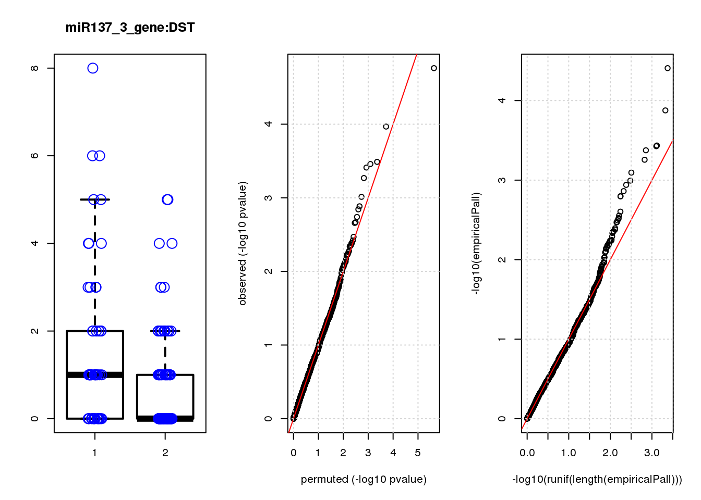
[1] "NAB2_1_gene_edgeR-qlf_Neg1.Rd"
logFC logCPM F PValue FDR empiricalP empiricalP.FDR #in_real
ISY1 0.94 6.8 12.0 0.00053 1 0.00096 0.99 1
PSMA5 -0.57 7.9 11.0 0.00087 1 0.00140 0.99 2
WDR18 -0.70 7.5 10.0 0.00160 1 0.00220 0.99 3
PIM3 0.89 6.9 9.8 0.00200 1 0.00250 0.99 4
EIF2B2 -0.90 7.0 9.7 0.00210 1 0.00260 0.99 5
SOX21 0.89 6.8 9.7 0.00220 1 0.00270 0.99 6
SFSWAP 0.75 6.9 9.4 0.00250 1 0.00300 0.99 7
ROMO1 -0.51 7.9 9.0 0.00300 1 0.00360 0.99 8
TMEM38B -1.00 6.7 8.3 0.00450 1 0.00500 0.99 9
ERP29 -0.40 8.6 8.0 0.00530 1 0.00590 0.99 10
1e-04 NA NA NA NA NA NA NA 0
1e-05 NA NA NA NA NA NA NA 0
1e-06 NA NA NA NA NA NA NA 0
1e-07 NA NA NA NA NA NA NA 0
1e-08 NA NA NA NA NA NA NA 0
1e-09 NA NA NA NA NA NA NA 0
1e-10 NA NA NA NA NA NA NA 0
#in_perm EmpiricalFDR
ISY1 4.100 4.1
PSMA5 6.000 3.0
WDR18 9.400 3.1
PIM3 11.000 2.7
EIF2B2 11.000 2.3
SOX21 12.000 1.9
SFSWAP 13.000 1.9
ROMO1 15.000 1.9
TMEM38B 21.000 2.4
ERP29 25.000 2.5
1e-04 1.400 Inf
1e-05 0.370 Inf
1e-06 0.067 Inf
1e-07 0.033 Inf
1e-08 0.000 NaN
1e-09 0.000 NaN
1e-10 0.000 NaN
[1] "NAB2_2_gene_edgeR-qlf_Neg1.Rd"
logFC logCPM F PValue FDR empiricalP empiricalP.FDR
CLU 1.90 7.8 44 4.7e-10 2.0e-06 7.8e-06 0.033
NQO1 1.90 7.6 32 6.5e-08 1.4e-04 1.6e-05 0.033
GAP43 1.70 8.3 28 4.6e-07 6.6e-04 3.9e-05 0.056
FTH1 1.10 12.0 24 2.6e-06 2.7e-03 7.8e-05 0.083
CTD-2006C1.2 1.20 7.0 19 2.5e-05 2.1e-02 1.6e-04 0.120
IFI27L1 1.20 6.8 18 3.1e-05 2.2e-02 1.6e-04 0.120
EIF4A2 0.73 8.1 14 2.3e-04 1.4e-01 5.8e-04 0.350
SQSTM1 1.30 8.3 14 3.0e-04 1.6e-01 7.1e-04 0.380
CRABP2 -1.40 7.6 13 4.8e-04 2.3e-01 9.0e-04 0.390
ARMCX6 0.95 7.0 12 5.6e-04 2.4e-01 9.7e-04 0.390
1e-04 NA NA NA NA NA NA NA
1e-05 NA NA NA NA NA NA NA
1e-06 NA NA NA NA NA NA NA
1e-07 NA NA NA NA NA NA NA
1e-08 NA NA NA NA NA NA NA
1e-09 NA NA NA NA NA NA NA
1e-10 NA NA NA NA NA NA NA
#in_real #in_perm EmpiricalFDR
CLU 1 0.033 0.033
NQO1 2 0.067 0.033
GAP43 3 0.170 0.056
FTH1 4 0.330 0.083
CTD-2006C1.2 5 0.670 0.130
IFI27L1 6 0.700 0.120
EIF4A2 7 2.500 0.350
SQSTM1 8 3.000 0.380
CRABP2 9 3.900 0.430
ARMCX6 10 4.200 0.420
1e-04 6 1.500 0.240
1e-05 4 0.530 0.130
1e-06 3 0.200 0.067
1e-07 2 0.067 0.033
1e-08 1 0.067 0.067
1e-09 1 0.033 0.033
1e-10 0 0.033 Inf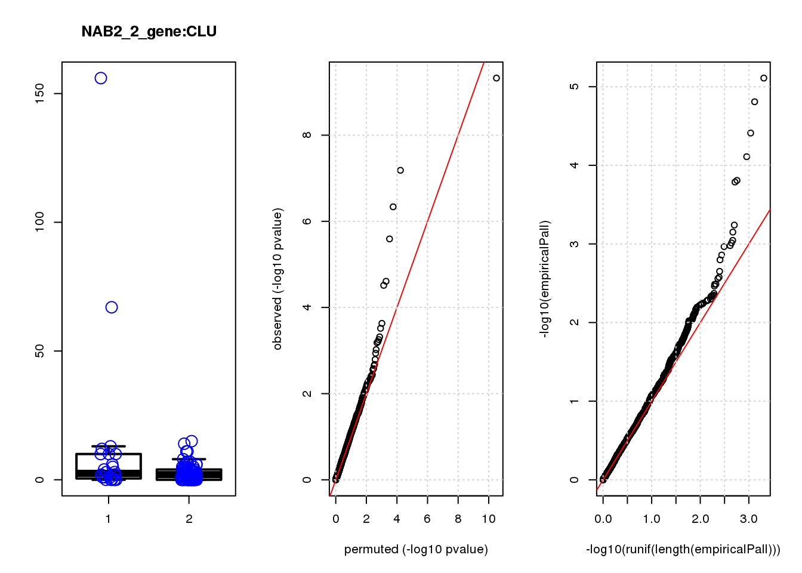
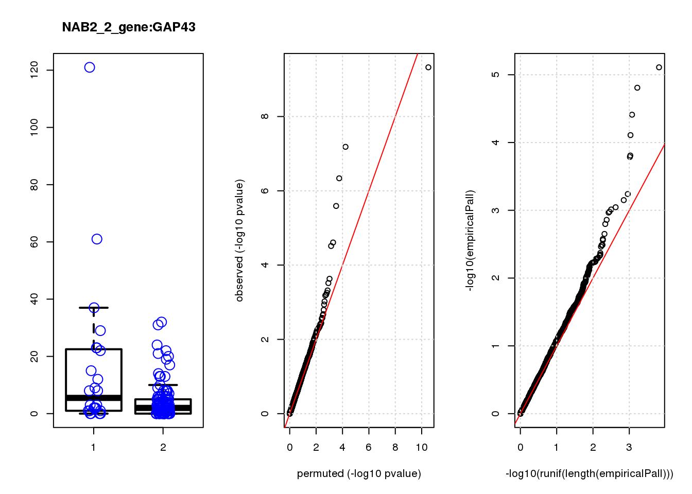
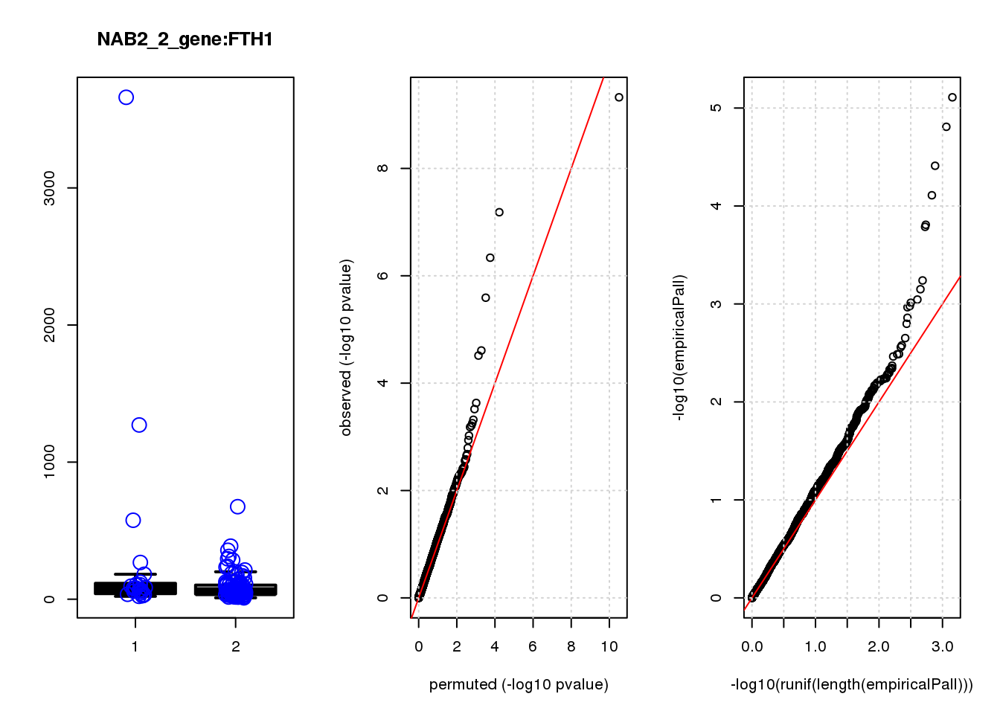


[1] "NAB2_3_gene_edgeR-qlf_Neg1.Rd"
logFC logCPM F PValue FDR empiricalP empiricalP.FDR #in_real
MT-ATP6 0.64 11.0 13.0 0.00042 0.91 0.00036 0.77 1
PKMYT1 -1.60 6.8 13.0 0.00043 0.91 0.00036 0.77 2
TP53 -1.10 7.1 12.0 0.00066 0.93 0.00060 0.86 3
ASCL1 1.30 7.2 11.0 0.00130 1.00 0.00110 0.90 4
HCCS 0.92 6.8 9.9 0.00200 1.00 0.00160 0.90 5
CAPZA1 0.58 7.8 9.9 0.00200 1.00 0.00160 0.90 6
PEX2 -1.10 6.8 9.3 0.00270 1.00 0.00210 0.90 7
TMEM106C -0.88 7.4 9.0 0.00310 1.00 0.00240 0.90 8
ID1 1.20 6.9 8.9 0.00330 1.00 0.00260 0.90 9
UCHL5 -1.10 6.8 8.9 0.00330 1.00 0.00260 0.90 10
1e-04 NA NA NA NA NA NA NA 0
1e-05 NA NA NA NA NA NA NA 0
1e-06 NA NA NA NA NA NA NA 0
1e-07 NA NA NA NA NA NA NA 0
1e-08 NA NA NA NA NA NA NA 0
1e-09 NA NA NA NA NA NA NA 0
1e-10 NA NA NA NA NA NA NA 0
#in_perm EmpiricalFDR
MT-ATP6 1.500 1.50
PKMYT1 1.500 0.77
TP53 2.600 0.86
ASCL1 4.800 1.20
HCCS 6.700 1.30
CAPZA1 6.800 1.10
PEX2 9.000 1.30
TMEM106C 10.000 1.30
ID1 11.000 1.20
UCHL5 11.000 1.10
1e-04 0.330 Inf
1e-05 0.100 Inf
1e-06 0.033 Inf
1e-07 0.000 NaN
1e-08 0.000 NaN
1e-09 0.000 NaN
1e-10 0.000 NaN
[1] "NGEF_1_gene_edgeR-qlf_Neg1.Rd"
logFC logCPM F PValue FDR empiricalP empiricalP.FDR #in_real
NQO1 1.70 7.4 14 0.00025 0.53 0.00046 0.68 1
SKP1 -0.73 9.0 14 0.00025 0.53 0.00047 0.68 2
CTTN 1.40 7.0 13 0.00041 0.58 0.00058 0.68 3
CMBL -2.50 6.9 12 0.00054 0.58 0.00069 0.68 4
APRT -0.99 8.4 12 0.00083 0.63 0.00099 0.68 5
DEF8 -1.30 7.5 11 0.00096 0.63 0.00110 0.68 6
TPX2 1.40 7.1 11 0.00110 0.63 0.00130 0.68 7
PHLDA3 -1.90 7.8 11 0.00130 0.63 0.00150 0.68 8
ARFGAP2 -1.40 7.3 11 0.00150 0.63 0.00160 0.68 9
PCDH17 1.30 7.2 10 0.00150 0.63 0.00170 0.68 10
1e-04 NA NA NA NA NA NA NA 0
1e-05 NA NA NA NA NA NA NA 0
1e-06 NA NA NA NA NA NA NA 0
1e-07 NA NA NA NA NA NA NA 0
1e-08 NA NA NA NA NA NA NA 0
1e-09 NA NA NA NA NA NA NA 0
1e-10 NA NA NA NA NA NA NA 0
#in_perm EmpiricalFDR
NQO1 2.000 2.00
SKP1 2.000 1.00
CTTN 2.500 0.82
CMBL 2.900 0.73
APRT 4.200 0.84
DEF8 4.600 0.76
TPX2 5.300 0.76
PHLDA3 6.400 0.80
ARFGAP2 6.900 0.76
PCDH17 7.200 0.72
1e-04 1.100 Inf
1e-05 0.330 Inf
1e-06 0.130 Inf
1e-07 0.100 Inf
1e-08 0.067 Inf
1e-09 0.033 Inf
1e-10 0.033 Inf
[1] "NGEF_2_gene_edgeR-qlf_Neg1.Rd"
logFC logCPM F PValue FDR empiricalP empiricalP.FDR #in_real
EMG1 1.8 7.7 13.0 0.00044 0.98 0.00060 0.99 1
SGO2 2.4 6.9 12.0 0.00062 0.98 0.00077 0.99 2
TROAP 2.5 6.7 12.0 0.00081 0.98 0.00097 0.99 3
CDCA3 2.5 6.9 11.0 0.00120 0.98 0.00130 0.99 4
AURKB 2.3 7.3 9.9 0.00200 0.98 0.00200 0.99 5
KPNA2 1.8 8.7 9.8 0.00210 0.98 0.00210 0.99 6
REEP4 2.1 6.8 9.5 0.00240 0.98 0.00240 0.99 7
PSRC1 2.2 7.7 9.5 0.00250 0.98 0.00240 0.99 8
MIS18BP1 2.2 6.7 9.0 0.00320 0.98 0.00300 0.99 9
TMCO1 -2.9 7.8 9.0 0.00320 0.98 0.00300 0.99 10
1e-04 NA NA NA NA NA NA NA 0
1e-05 NA NA NA NA NA NA NA 0
1e-06 NA NA NA NA NA NA NA 0
1e-07 NA NA NA NA NA NA NA 0
1e-08 NA NA NA NA NA NA NA 0
1e-09 NA NA NA NA NA NA NA 0
1e-10 NA NA NA NA NA NA NA 0
#in_perm EmpiricalFDR
EMG1 2.600 2.6
SGO2 3.300 1.7
TROAP 4.200 1.4
CDCA3 5.400 1.4
AURKB 8.700 1.7
KPNA2 8.900 1.5
REEP4 10.000 1.4
PSRC1 10.000 1.3
MIS18BP1 13.000 1.4
TMCO1 13.000 1.3
1e-04 0.870 Inf
1e-05 0.470 Inf
1e-06 0.130 Inf
1e-07 0.033 Inf
1e-08 0.000 NaN
1e-09 0.000 NaN
1e-10 0.000 NaN
[1] "PBRM1_1_gene_edgeR-qlf_Neg1.Rd"
logFC logCPM F PValue FDR empiricalP empiricalP.FDR
PLK1 2.7 7.5 22 5.8e-06 0.025 0.00012 0.31
RP11-339B21.12 2.3 7.0 17 7.2e-05 0.097 0.00028 0.31
JUN 1.9 7.9 16 8.8e-05 0.097 0.00028 0.31
CDC25B 2.5 7.2 16 8.9e-05 0.097 0.00028 0.31
TPX2 2.2 7.1 15 2.0e-04 0.180 0.00048 0.40
PTTG1 2.0 8.5 13 3.5e-04 0.230 0.00063 0.40
PSRC1 2.0 7.7 13 3.6e-04 0.230 0.00065 0.40
CCDC167 1.1 8.1 11 1.0e-03 0.570 0.00130 0.63
NUDCD2 1.4 7.5 11 1.3e-03 0.590 0.00150 0.63
NUF2 2.0 6.8 10 1.5e-03 0.590 0.00170 0.63
1e-04 NA NA NA NA NA NA NA
1e-05 NA NA NA NA NA NA NA
1e-06 NA NA NA NA NA NA NA
1e-07 NA NA NA NA NA NA NA
1e-08 NA NA NA NA NA NA NA
1e-09 NA NA NA NA NA NA NA
1e-10 NA NA NA NA NA NA NA
#in_real #in_perm EmpiricalFDR
PLK1 1 0.500 0.50
RP11-339B21.12 2 1.200 0.62
JUN 3 1.200 0.41
CDC25B 4 1.200 0.31
TPX2 5 2.100 0.42
PTTG1 6 2.700 0.46
PSRC1 7 2.800 0.40
CCDC167 8 5.600 0.70
NUDCD2 9 6.700 0.74
NUF2 10 7.300 0.73
1e-04 4 1.400 0.35
1e-05 1 0.600 0.60
1e-06 0 0.400 Inf
1e-07 0 0.170 Inf
1e-08 0 0.067 Inf
1e-09 0 0.067 Inf
1e-10 0 0.033 Inf
[1] "PBRM1_2_gene_edgeR-qlf_Neg1.Rd"
logFC logCPM F PValue FDR empiricalP empiricalP.FDR #in_real
INTU 1.50 6.9 17.0 7.5e-05 0.32 0.00030 0.92 1
IFITM3 1.60 8.8 15.0 1.5e-04 0.32 0.00043 0.92 2
TFPT -2.10 6.9 11.0 9.3e-04 1.00 0.00170 1.00 3
MKI67 1.30 7.3 11.0 1.2e-03 1.00 0.00200 1.00 4
ILKAP -1.60 6.9 9.9 2.0e-03 1.00 0.00300 1.00 5
PRSS23 0.94 8.2 9.4 2.6e-03 1.00 0.00370 1.00 6
BCAT2 -1.60 6.9 9.3 2.8e-03 1.00 0.00380 1.00 7
NUDT14 -1.60 7.0 8.9 3.2e-03 1.00 0.00440 1.00 8
TLE4 1.20 6.9 8.7 3.7e-03 1.00 0.00470 1.00 9
UBE2C 1.40 8.2 8.6 3.8e-03 1.00 0.00490 1.00 10
1e-04 NA NA NA NA NA NA NA 1
1e-05 NA NA NA NA NA NA NA 0
1e-06 NA NA NA NA NA NA NA 0
1e-07 NA NA NA NA NA NA NA 0
1e-08 NA NA NA NA NA NA NA 0
1e-09 NA NA NA NA NA NA NA 0
1e-10 NA NA NA NA NA NA NA 0
#in_perm EmpiricalFDR
INTU 1.300 1.30
IFITM3 1.800 0.92
TFPT 7.200 2.40
MKI67 8.500 2.10
ILKAP 13.000 2.60
PRSS23 16.000 2.60
BCAT2 16.000 2.30
NUDT14 19.000 2.30
TLE4 20.000 2.30
UBE2C 21.000 2.10
1e-04 1.500 1.50
1e-05 0.570 Inf
1e-06 0.200 Inf
1e-07 0.130 Inf
1e-08 0.100 Inf
1e-09 0.033 Inf
1e-10 0.000 NaN
[1] "PBRM1_3_gene_edgeR-qlf_Neg1.Rd"
logFC logCPM F PValue FDR empiricalP empiricalP.FDR #in_real
SPARC 1.6 8.6 20 1.7e-05 0.074 0.00030 0.45 1
HDAC2 -2.0 8.6 16 9.3e-05 0.180 0.00056 0.45 2
HEBP1 2.0 7.0 15 1.3e-04 0.180 0.00062 0.45 3
CCND2 2.3 7.1 15 1.7e-04 0.190 0.00071 0.45 4
SCD 1.7 7.6 14 2.6e-04 0.210 0.00087 0.45 5
NDN 1.7 7.5 14 3.0e-04 0.210 0.00091 0.45 6
PCSK1N 2.0 7.1 13 4.8e-04 0.260 0.00110 0.45 7
ID1 2.4 6.9 13 4.8e-04 0.260 0.00120 0.45 8
CMBL 1.9 7.0 12 7.7e-04 0.310 0.00160 0.45 9
COPS3 -2.3 7.9 12 7.7e-04 0.310 0.00160 0.45 10
1e-04 NA NA NA NA NA NA NA 2
1e-05 NA NA NA NA NA NA NA 0
1e-06 NA NA NA NA NA NA NA 0
1e-07 NA NA NA NA NA NA NA 0
1e-08 NA NA NA NA NA NA NA 0
1e-09 NA NA NA NA NA NA NA 0
1e-10 NA NA NA NA NA NA NA 0
#in_perm EmpiricalFDR
SPARC 1.300 1.30
HDAC2 2.400 1.20
HEBP1 2.700 0.89
CCND2 3.100 0.77
SCD 3.800 0.75
NDN 3.900 0.65
PCSK1N 4.900 0.70
ID1 5.000 0.62
CMBL 6.700 0.75
COPS3 6.700 0.67
1e-04 2.500 1.30
1e-05 1.000 Inf
1e-06 0.530 Inf
1e-07 0.330 Inf
1e-08 0.200 Inf
1e-09 0.100 Inf
1e-10 0.067 Inf
[1] "PCDHA123_1_gene_edgeR-qlf_Neg1.Rd"
logFC logCPM F PValue FDR empiricalP empiricalP.FDR #in_real
ARMCX6 0.86 7.0 16 9.6e-05 0.41 0.00023 0.87 1
PDLIM2 0.75 7.5 12 5.5e-04 0.75 0.00086 0.87 2
PHLDA1 1.00 7.1 12 6.3e-04 0.75 0.00098 0.87 3
GAP43 0.85 8.2 11 9.2e-04 0.75 0.00130 0.87 4
SSR3 0.48 8.1 11 9.2e-04 0.75 0.00130 0.87 5
SUMO2 -0.27 10.0 11 1.1e-03 0.75 0.00160 0.87 6
GOSR1 0.64 7.1 11 1.2e-03 0.75 0.00170 0.87 7
PPP2R2B 0.81 6.8 10 1.6e-03 0.76 0.00210 0.87 8
CDC6 -1.00 6.9 10 1.7e-03 0.76 0.00220 0.87 9
MAT2A -0.68 7.3 10 1.9e-03 0.76 0.00250 0.87 10
1e-04 NA NA NA NA NA NA NA 1
1e-05 NA NA NA NA NA NA NA 0
1e-06 NA NA NA NA NA NA NA 0
1e-07 NA NA NA NA NA NA NA 0
1e-08 NA NA NA NA NA NA NA 0
1e-09 NA NA NA NA NA NA NA 0
1e-10 NA NA NA NA NA NA NA 0
#in_perm EmpiricalFDR
ARMCX6 1.0 1.0
PDLIM2 3.7 1.8
PHLDA1 4.2 1.4
GAP43 5.5 1.4
SSR3 5.5 1.1
SUMO2 6.8 1.1
GOSR1 7.1 1.0
PPP2R2B 8.9 1.1
CDC6 9.5 1.1
MAT2A 10.0 1.0
1e-04 1.0 1.0
1e-05 0.2 Inf
1e-06 0.1 Inf
1e-07 0.0 NaN
1e-08 0.0 NaN
1e-09 0.0 NaN
1e-10 0.0 NaN
[1] "PCDHA123_2_gene_edgeR-qlf_Neg1.Rd"
logFC logCPM F PValue FDR empiricalP empiricalP.FDR #in_real
CTGF 0.84 8.6 13 0.00040 0.66 0.00044 0.51 1
LASP1 0.82 6.8 12 0.00065 0.66 0.00057 0.51 2
IMPA2 -0.91 6.8 12 0.00084 0.66 0.00065 0.51 3
MCM5 -0.79 7.1 11 0.00088 0.66 0.00068 0.51 4
CYR61 0.63 8.0 11 0.00100 0.66 0.00076 0.51 5
GRSF1 0.47 7.7 11 0.00110 0.66 0.00078 0.51 6
NINJ1 -0.77 7.0 11 0.00130 0.66 0.00110 0.51 7
SEPT2 0.36 8.2 11 0.00140 0.66 0.00110 0.51 8
DDIT4 0.86 8.1 10 0.00140 0.66 0.00110 0.51 9
PDE6D 0.70 6.7 10 0.00170 0.71 0.00130 0.55 10
1e-04 NA NA NA NA NA NA NA 0
1e-05 NA NA NA NA NA NA NA 0
1e-06 NA NA NA NA NA NA NA 0
1e-07 NA NA NA NA NA NA NA 0
1e-08 NA NA NA NA NA NA NA 0
1e-09 NA NA NA NA NA NA NA 0
1e-10 NA NA NA NA NA NA NA 0
#in_perm EmpiricalFDR
CTGF 1.900 1.90
LASP1 2.400 1.20
IMPA2 2.800 0.92
MCM5 2.900 0.72
CYR61 3.200 0.65
GRSF1 3.300 0.55
NINJ1 4.500 0.64
SEPT2 4.600 0.58
DDIT4 4.600 0.51
PDE6D 5.500 0.55
1e-04 0.370 Inf
1e-05 0.130 Inf
1e-06 0.033 Inf
1e-07 0.000 NaN
1e-08 0.000 NaN
1e-09 0.000 NaN
1e-10 0.000 NaN
[1] "PCDHA123_3_gene_edgeR-qlf_Neg1.Rd"
logFC logCPM F PValue FDR empiricalP empiricalP.FDR #in_real
NRDC -0.83 7.0 14.0 0.00020 0.65 0.00022 0.63 1
GPM6B 0.45 8.5 13.0 0.00031 0.65 0.00030 0.63 2
SOX4 -0.74 8.4 10.0 0.00170 1.00 0.00130 1.00 3
RBM22 0.54 7.2 9.9 0.00190 1.00 0.00150 1.00 4
IGF2BP1 -0.51 7.5 9.1 0.00290 1.00 0.00210 1.00 5
BNIP3 -0.61 7.2 8.1 0.00480 1.00 0.00350 1.00 6
DPYSL3 -0.75 6.8 8.1 0.00500 1.00 0.00360 1.00 7
TMEM101 0.59 6.9 8.0 0.00510 1.00 0.00370 1.00 8
FYN -0.60 7.1 8.0 0.00510 1.00 0.00370 1.00 9
RNF220 0.69 6.7 8.0 0.00520 1.00 0.00380 1.00 10
1e-04 NA NA NA NA NA NA NA 0
1e-05 NA NA NA NA NA NA NA 0
1e-06 NA NA NA NA NA NA NA 0
1e-07 NA NA NA NA NA NA NA 0
1e-08 NA NA NA NA NA NA NA 0
1e-09 NA NA NA NA NA NA NA 0
1e-10 NA NA NA NA NA NA NA 0
#in_perm EmpiricalFDR
NRDC 0.93 0.93
GPM6B 1.30 0.63
SOX4 5.50 1.80
RBM22 6.10 1.50
IGF2BP1 9.00 1.80
BNIP3 15.00 2.40
DPYSL3 15.00 2.20
TMEM101 16.00 2.00
FYN 16.00 1.70
RNF220 16.00 1.60
1e-04 0.50 Inf
1e-05 0.17 Inf
1e-06 0.00 NaN
1e-07 0.00 NaN
1e-08 0.00 NaN
1e-09 0.00 NaN
1e-10 0.00 NaN
[1] "pos_SNAP91_2_gene_edgeR-qlf_Neg1.Rd"
logFC logCPM F PValue FDR empiricalP empiricalP.FDR
TDG -4.1 7.3 8.7 0.0038 1 0.0037 1
MGME1 1.8 6.9 8.1 0.0050 1 0.0048 1
USP16 -4.0 7.2 7.8 0.0059 1 0.0056 1
FOXB1 1.8 7.0 7.7 0.0064 1 0.0060 1
LLPH -4.0 7.2 7.5 0.0068 1 0.0063 1
RP11-329L6.2 -4.3 7.4 7.5 0.0068 1 0.0063 1
MT-CO2 1.2 12.0 7.4 0.0074 1 0.0069 1
SPAG16 -4.3 7.4 7.3 0.0079 1 0.0073 1
RBCK1 -3.8 7.2 7.1 0.0084 1 0.0078 1
MT-CYB 1.1 11.0 7.1 0.0086 1 0.0080 1
1e-04 NA NA NA NA NA NA NA
1e-05 NA NA NA NA NA NA NA
1e-06 NA NA NA NA NA NA NA
1e-07 NA NA NA NA NA NA NA
1e-08 NA NA NA NA NA NA NA
1e-09 NA NA NA NA NA NA NA
1e-10 NA NA NA NA NA NA NA
#in_real #in_perm EmpiricalFDR
TDG 1 16.000 16.0
MGME1 2 21.000 10.0
USP16 3 24.000 8.1
FOXB1 4 26.000 6.5
LLPH 5 27.000 5.4
RP11-329L6.2 6 27.000 4.5
MT-CO2 7 30.000 4.2
SPAG16 8 32.000 3.9
RBCK1 9 34.000 3.7
MT-CYB 10 34.000 3.4
1e-04 0 1.700 Inf
1e-05 0 0.600 Inf
1e-06 0 0.330 Inf
1e-07 0 0.270 Inf
1e-08 0 0.100 Inf
1e-09 0 0.033 Inf
1e-10 0 0.033 Inf
[1] "pos_SNAP91_3_gene_edgeR-qlf_Neg1.Rd"
logFC logCPM F PValue FDR empiricalP empiricalP.FDR #in_real
THG1L 1.10 7.0 16.0 8.9e-05 0.38 0.00016 0.7 1
PRSS23 0.77 8.3 11.0 1.4e-03 1.00 0.00150 1.0 2
CD3EAP -1.30 6.7 10.0 1.5e-03 1.00 0.00150 1.0 3
SF3B4 -0.68 7.7 10.0 1.5e-03 1.00 0.00150 1.0 4
CAV1 1.20 7.3 10.0 1.8e-03 1.00 0.00180 1.0 5
PPP2R2B 1.00 6.8 9.8 2.0e-03 1.00 0.00200 1.0 6
TMEM259 -0.94 7.1 9.4 2.6e-03 1.00 0.00240 1.0 7
LONP1 -1.10 7.1 8.7 3.6e-03 1.00 0.00330 1.0 8
TP53I3 0.93 7.0 8.7 3.7e-03 1.00 0.00340 1.0 9
DPH3 0.69 7.3 8.5 4.0e-03 1.00 0.00370 1.0 10
1e-04 NA NA NA NA NA NA NA 1
1e-05 NA NA NA NA NA NA NA 0
1e-06 NA NA NA NA NA NA NA 0
1e-07 NA NA NA NA NA NA NA 0
1e-08 NA NA NA NA NA NA NA 0
1e-09 NA NA NA NA NA NA NA 0
1e-10 NA NA NA NA NA NA NA 0
#in_perm EmpiricalFDR
THG1L 0.700 0.70
PRSS23 6.300 3.20
CD3EAP 6.500 2.20
SF3B4 6.600 1.60
CAV1 7.700 1.50
PPP2R2B 8.500 1.40
TMEM259 10.000 1.50
LONP1 14.000 1.80
TP53I3 15.000 1.60
DPH3 16.000 1.60
1e-04 0.730 0.73
1e-05 0.270 Inf
1e-06 0.130 Inf
1e-07 0.100 Inf
1e-08 0.033 Inf
1e-09 0.033 Inf
1e-10 0.033 Inf
[1] "PPP1R16B_1_gene_edgeR-qlf_Neg1.Rd"
logFC logCPM F PValue FDR empiricalP empiricalP.FDR #in_real
CAV1 1.30 7.4 15.0 0.00014 0.58 0.00031 0.9 1
SRPK2 0.64 7.4 12.0 0.00073 0.87 0.00100 0.9 2
NEFM 1.30 7.9 10.0 0.00160 0.87 0.00180 0.9 3
CMTM3 0.51 7.7 10.0 0.00170 0.87 0.00190 0.9 4
TCTN1 -0.90 6.8 9.6 0.00230 0.87 0.00250 0.9 5
RPS19 0.24 13.0 9.4 0.00250 0.87 0.00270 0.9 6
YIF1B -0.79 6.8 9.1 0.00290 0.87 0.00310 0.9 7
GCAT -0.81 7.0 9.0 0.00300 0.87 0.00320 0.9 8
NQO1 0.95 7.4 8.9 0.00320 0.87 0.00350 0.9 9
TFDP1 -0.72 7.2 8.9 0.00330 0.87 0.00360 0.9 10
1e-04 NA NA NA NA NA NA NA 0
1e-05 NA NA NA NA NA NA NA 0
1e-06 NA NA NA NA NA NA NA 0
1e-07 NA NA NA NA NA NA NA 0
1e-08 NA NA NA NA NA NA NA 0
1e-09 NA NA NA NA NA NA NA 0
1e-10 NA NA NA NA NA NA NA 0
#in_perm EmpiricalFDR
CAV1 1.300 1.3
SRPK2 4.300 2.2
NEFM 7.900 2.6
CMTM3 8.100 2.0
TCTN1 11.000 2.2
RPS19 12.000 2.0
YIF1B 13.000 1.9
GCAT 14.000 1.7
NQO1 15.000 1.6
TFDP1 15.000 1.5
1e-04 0.970 Inf
1e-05 0.170 Inf
1e-06 0.033 Inf
1e-07 0.000 NaN
1e-08 0.000 NaN
1e-09 0.000 NaN
1e-10 0.000 NaN
[1] "PPP1R16B_2_gene_edgeR-qlf_Neg1.Rd"
logFC logCPM F PValue FDR empiricalP empiricalP.FDR #in_real
EZR 0.83 7.5 12.0 0.00058 1 0.0007 1 1
ZNF512 0.95 6.7 11.0 0.00090 1 0.0011 1 2
TLE4 0.91 7.0 10.0 0.00170 1 0.0017 1 3
TET1 0.87 6.8 10.0 0.00190 1 0.0019 1 4
RPN1 -1.10 6.7 9.3 0.00260 1 0.0024 1 5
USP7 0.84 6.8 8.9 0.00340 1 0.0030 1 6
WASF1 0.80 6.9 8.8 0.00340 1 0.0030 1 7
NSG1 -1.10 7.0 8.2 0.00470 1 0.0042 1 8
CDC42 0.45 8.0 8.2 0.00480 1 0.0043 1 9
LAPTM4A 0.65 7.1 7.8 0.00580 1 0.0052 1 10
1e-04 NA NA NA NA NA NA NA 0
1e-05 NA NA NA NA NA NA NA 0
1e-06 NA NA NA NA NA NA NA 0
1e-07 NA NA NA NA NA NA NA 0
1e-08 NA NA NA NA NA NA NA 0
1e-09 NA NA NA NA NA NA NA 0
1e-10 NA NA NA NA NA NA NA 0
#in_perm EmpiricalFDR
EZR 3.000 3.0
ZNF512 4.600 2.3
TLE4 7.100 2.4
TET1 8.000 2.0
RPN1 10.000 2.1
USP7 13.000 2.1
WASF1 13.000 1.8
NSG1 18.000 2.2
CDC42 18.000 2.0
LAPTM4A 22.000 2.2
1e-04 0.670 Inf
1e-05 0.130 Inf
1e-06 0.033 Inf
1e-07 0.000 NaN
1e-08 0.000 NaN
1e-09 0.000 NaN
1e-10 0.000 NaN
[1] "PPP1R16B_3_gene_edgeR-qlf_Neg1.Rd"
logFC logCPM F PValue FDR empiricalP empiricalP.FDR #in_real
ASCL1 1.30 7.3 14.0 0.00028 0.77 0.00043 0.81 1
GTF2F2 0.64 7.5 12.0 0.00066 0.77 0.00088 0.81 2
IRX5 0.98 6.9 12.0 0.00071 0.77 0.00095 0.81 3
SNAPC2 0.86 7.1 12.0 0.00076 0.77 0.00099 0.81 4
DBI -0.46 8.9 11.0 0.00130 0.77 0.00160 0.81 5
HES6 1.00 9.2 11.0 0.00130 0.77 0.00160 0.81 6
MBOAT7 -1.00 6.8 10.0 0.00150 0.77 0.00170 0.81 7
THG1L 0.77 7.0 9.6 0.00220 0.77 0.00260 0.81 8
TWF2 0.83 6.9 9.6 0.00230 0.77 0.00260 0.81 9
SOX11 0.75 8.0 9.6 0.00230 0.77 0.00260 0.81 10
1e-04 NA NA NA NA NA NA NA 0
1e-05 NA NA NA NA NA NA NA 0
1e-06 NA NA NA NA NA NA NA 0
1e-07 NA NA NA NA NA NA NA 0
1e-08 NA NA NA NA NA NA NA 0
1e-09 NA NA NA NA NA NA NA 0
1e-10 NA NA NA NA NA NA NA 0
#in_perm EmpiricalFDR
ASCL1 1.800 1.8
GTF2F2 3.700 1.8
IRX5 4.000 1.3
SNAPC2 4.200 1.0
DBI 6.600 1.3
HES6 6.600 1.1
MBOAT7 7.200 1.0
THG1L 11.000 1.4
TWF2 11.000 1.2
SOX11 11.000 1.1
1e-04 0.870 Inf
1e-05 0.170 Inf
1e-06 0.067 Inf
1e-07 0.033 Inf
1e-08 0.033 Inf
1e-09 0.033 Inf
1e-10 0.000 NaN
[1] "RERE_1_gene_edgeR-qlf_Neg1.Rd"
logFC logCPM F PValue FDR empiricalP empiricalP.FDR #in_real
SNX27 0.85 6.8 12.0 0.00053 0.92 0.00073 0.99 1
TPX2 0.95 7.2 12.0 0.00067 0.92 0.00091 0.99 2
NDC80 0.97 6.8 12.0 0.00078 0.92 0.00110 0.99 3
ISG20L2 -0.92 7.0 11.0 0.00086 0.92 0.00110 0.99 4
NINJ1 -0.86 7.0 9.1 0.00290 0.99 0.00300 0.99 5
ARF4 -0.60 8.4 8.9 0.00330 0.99 0.00330 0.99 6
IMPDH1 -0.84 6.9 8.7 0.00370 0.99 0.00370 0.99 7
KNSTRN 0.79 7.1 8.4 0.00420 0.99 0.00410 0.99 8
TROVE2 -0.48 7.7 8.4 0.00420 0.99 0.00410 0.99 9
MKI67 0.77 7.4 8.2 0.00460 0.99 0.00450 0.99 10
1e-04 NA NA NA NA NA NA NA 0
1e-05 NA NA NA NA NA NA NA 0
1e-06 NA NA NA NA NA NA NA 0
1e-07 NA NA NA NA NA NA NA 0
1e-08 NA NA NA NA NA NA NA 0
1e-09 NA NA NA NA NA NA NA 0
1e-10 NA NA NA NA NA NA NA 0
#in_perm EmpiricalFDR
SNX27 3.10 3.1
TPX2 3.90 2.0
NDC80 4.50 1.5
ISG20L2 4.80 1.2
NINJ1 13.00 2.5
ARF4 14.00 2.4
IMPDH1 16.00 2.2
KNSTRN 18.00 2.2
TROVE2 18.00 2.0
MKI67 19.00 1.9
1e-04 0.73 Inf
1e-05 0.10 Inf
1e-06 0.00 NaN
1e-07 0.00 NaN
1e-08 0.00 NaN
1e-09 0.00 NaN
1e-10 0.00 NaN
[1] "RERE_2_gene_edgeR-qlf_Neg1.Rd"
logFC logCPM F PValue FDR empiricalP empiricalP.FDR #in_real
USMG5 -0.46 8.8 16.0 0.00011 0.45 0.00030 0.95 1
KDELR2 -0.62 8.0 14.0 0.00021 0.45 0.00044 0.95 2
FBXO5 -1.20 7.0 12.0 0.00054 0.62 0.00091 1.00 3
MRPL23 -0.69 7.5 12.0 0.00058 0.62 0.00094 1.00 4
TAGLN3 1.20 7.5 11.0 0.00100 0.90 0.00140 1.00 5
BTG1 0.61 8.6 10.0 0.00160 1.00 0.00200 1.00 6
P3H4 -0.85 6.9 9.9 0.00190 1.00 0.00230 1.00 7
CIAPIN1 0.52 7.6 9.7 0.00220 1.00 0.00250 1.00 8
DDX6 -0.81 7.0 9.5 0.00240 1.00 0.00280 1.00 9
DCAF15 0.79 6.9 9.2 0.00280 1.00 0.00320 1.00 10
1e-04 NA NA NA NA NA NA NA 0
1e-05 NA NA NA NA NA NA NA 0
1e-06 NA NA NA NA NA NA NA 0
1e-07 NA NA NA NA NA NA NA 0
1e-08 NA NA NA NA NA NA NA 0
1e-09 NA NA NA NA NA NA NA 0
1e-10 NA NA NA NA NA NA NA 0
#in_perm EmpiricalFDR
USMG5 1.300 1.30
KDELR2 1.900 0.95
FBXO5 3.900 1.30
MRPL23 4.000 1.00
TAGLN3 6.100 1.20
BTG1 8.500 1.40
P3H4 9.700 1.40
CIAPIN1 11.000 1.40
DDX6 12.000 1.30
DCAF15 14.000 1.40
1e-04 1.300 Inf
1e-05 0.230 Inf
1e-06 0.033 Inf
1e-07 0.033 Inf
1e-08 0.000 NaN
1e-09 0.000 NaN
1e-10 0.000 NaN
[1] "RERE_3_gene_edgeR-qlf_Neg1.Rd"
logFC logCPM F PValue FDR empiricalP empiricalP.FDR #in_real
BRCA1 1.10 6.8 13.0 0.00052 1 0.0009 1 1
HIPK2 0.92 7.1 11.0 0.00097 1 0.0013 1 2
CADM1 0.99 7.0 11.0 0.00140 1 0.0018 1 3
HMGCS1 0.69 8.2 10.0 0.00190 1 0.0022 1 4
EZR 0.77 7.5 8.8 0.00350 1 0.0039 1 5
AKAP12 0.83 7.4 8.5 0.00390 1 0.0044 1 6
ACBD6 0.65 7.3 8.3 0.00460 1 0.0050 1 7
C11orf58 -0.39 9.0 8.2 0.00480 1 0.0052 1 8
GLA -1.20 6.8 8.1 0.00490 1 0.0054 1 9
SURF1 -0.93 7.1 7.9 0.00550 1 0.0059 1 10
1e-04 NA NA NA NA NA NA NA 0
1e-05 NA NA NA NA NA NA NA 0
1e-06 NA NA NA NA NA NA NA 0
1e-07 NA NA NA NA NA NA NA 0
1e-08 NA NA NA NA NA NA NA 0
1e-09 NA NA NA NA NA NA NA 0
1e-10 NA NA NA NA NA NA NA 0
#in_perm EmpiricalFDR
BRCA1 3.90 3.9
HIPK2 5.80 2.9
CADM1 7.70 2.6
HMGCS1 9.50 2.4
EZR 17.00 3.3
AKAP12 19.00 3.1
ACBD6 22.00 3.1
C11orf58 22.00 2.8
GLA 23.00 2.6
SURF1 25.00 2.5
1e-04 1.20 Inf
1e-05 0.30 Inf
1e-06 0.13 Inf
1e-07 0.10 Inf
1e-08 0.00 NaN
1e-09 0.00 NaN
1e-10 0.00 NaN
[1] "SETD1A_1st_exon_1_gene_edgeR-qlf_Neg1.Rd"
logFC logCPM F PValue FDR empiricalP empiricalP.FDR #in_real
SNAPC3 1.10 6.9 11.0 0.00093 1 0.0016 1 1
NUP50 1.00 6.9 11.0 0.00120 1 0.0020 1 2
ACTA2 1.10 7.4 9.5 0.00250 1 0.0032 1 3
HES6 -1.30 8.8 9.4 0.00260 1 0.0033 1 4
LRIF1 -1.30 6.9 9.3 0.00260 1 0.0034 1 5
UCP2 -1.40 6.8 9.3 0.00270 1 0.0035 1 6
CARD19 -1.30 6.9 9.0 0.00310 1 0.0039 1 7
MAP1A -1.30 7.0 8.9 0.00320 1 0.0040 1 8
ITGAE -0.66 7.7 8.6 0.00380 1 0.0047 1 9
CCND3 -1.20 7.1 8.3 0.00450 1 0.0053 1 10
1e-04 NA NA NA NA NA NA NA 0
1e-05 NA NA NA NA NA NA NA 0
1e-06 NA NA NA NA NA NA NA 0
1e-07 NA NA NA NA NA NA NA 0
1e-08 NA NA NA NA NA NA NA 0
1e-09 NA NA NA NA NA NA NA 0
1e-10 NA NA NA NA NA NA NA 0
#in_perm EmpiricalFDR
SNAPC3 7.100 7.1
NUP50 8.400 4.2
ACTA2 14.000 4.6
HES6 14.000 3.6
LRIF1 15.000 2.9
UCP2 15.000 2.5
CARD19 17.000 2.4
MAP1A 17.000 2.2
ITGAE 20.000 2.2
CCND3 23.000 2.3
1e-04 1.800 Inf
1e-05 0.600 Inf
1e-06 0.270 Inf
1e-07 0.067 Inf
1e-08 0.067 Inf
1e-09 0.067 Inf
1e-10 0.067 Inf
[1] "SETD1A_1st_exon_2_gene_edgeR-qlf_Neg1.Rd"
logFC logCPM F PValue FDR empiricalP empiricalP.FDR #in_real
RAB13 0.80 8.0 19 2.2e-05 0.055 0.00016 0.29 1
ASRGL1 -1.50 7.0 19 2.6e-05 0.055 0.00016 0.29 2
CALD1 0.99 8.1 17 4.7e-05 0.066 0.00020 0.29 3
RIT1 1.10 6.9 14 2.0e-04 0.180 0.00049 0.38 4
MPZL1 0.93 6.8 14 2.1e-04 0.180 0.00052 0.38 5
MYL9 1.20 7.9 13 3.2e-04 0.200 0.00068 0.38 6
TAGLN 1.20 9.3 13 3.7e-04 0.200 0.00072 0.38 7
EMP3 1.20 6.9 13 3.7e-04 0.200 0.00072 0.38 8
TYMS -0.87 8.4 13 5.0e-04 0.240 0.00093 0.42 9
PRSS23 0.85 8.3 12 6.2e-04 0.260 0.00110 0.42 10
1e-04 NA NA NA NA NA NA NA 3
1e-05 NA NA NA NA NA NA NA 0
1e-06 NA NA NA NA NA NA NA 0
1e-07 NA NA NA NA NA NA NA 0
1e-08 NA NA NA NA NA NA NA 0
1e-09 NA NA NA NA NA NA NA 0
1e-10 NA NA NA NA NA NA NA 0
#in_perm EmpiricalFDR
RAB13 0.670 0.67
ASRGL1 0.700 0.35
CALD1 0.870 0.29
RIT1 2.100 0.52
MPZL1 2.200 0.44
MYL9 2.900 0.48
TAGLN 3.100 0.44
EMP3 3.100 0.38
TYMS 4.000 0.44
PRSS23 4.500 0.45
1e-04 1.500 0.50
1e-05 0.500 Inf
1e-06 0.200 Inf
1e-07 0.067 Inf
1e-08 0.033 Inf
1e-09 0.033 Inf
1e-10 0.000 NaN
[1] "SETD1A_1st_exon_3_gene_edgeR-qlf_Neg1.Rd"
logFC logCPM F PValue FDR empiricalP empiricalP.FDR #in_real
UBB -4.0 9.5 16 0.00012 0.49 0.00019 0.44 1
FXYD6 -3.5 8.1 13 0.00037 0.49 0.00035 0.44 2
BEX2 2.4 6.9 13 0.00041 0.49 0.00039 0.44 3
PTN 2.1 8.1 13 0.00045 0.49 0.00041 0.44 4
TMSB10 1.1 12.0 12 0.00060 0.52 0.00051 0.45 5
FTH1 1.3 12.0 11 0.00120 0.66 0.00086 0.46 6
SEPHS2 2.0 7.0 11 0.00130 0.66 0.00093 0.46 7
MKNK2 1.9 6.9 11 0.00140 0.66 0.00096 0.46 8
COX11 -4.1 7.3 11 0.00140 0.66 0.00096 0.46 9
CST3 -2.1 8.2 10 0.00160 0.69 0.00110 0.46 10
1e-04 NA NA NA NA NA NA NA 0
1e-05 NA NA NA NA NA NA NA 0
1e-06 NA NA NA NA NA NA NA 0
1e-07 NA NA NA NA NA NA NA 0
1e-08 NA NA NA NA NA NA NA 0
1e-09 NA NA NA NA NA NA NA 0
1e-10 NA NA NA NA NA NA NA 0
#in_perm EmpiricalFDR
UBB 0.830 0.83
FXYD6 1.500 0.77
BEX2 1.700 0.57
PTN 1.800 0.44
TMSB10 2.200 0.45
FTH1 3.800 0.63
SEPHS2 4.000 0.58
MKNK2 4.200 0.52
COX11 4.200 0.46
CST3 4.600 0.46
1e-04 0.770 Inf
1e-05 0.067 Inf
1e-06 0.033 Inf
1e-07 0.033 Inf
1e-08 0.000 NaN
1e-09 0.000 NaN
1e-10 0.000 NaN
[1] "STAT6_1_gene_edgeR-qlf_Neg1.Rd"
logFC logCPM F PValue FDR empiricalP empiricalP.FDR #in_real
SOX21 0.99 6.8 10.0 0.0017 1 0.0021 0.99 1
EIF2D -1.10 6.8 10.0 0.0018 1 0.0023 0.99 2
ITM2C -1.00 7.1 9.6 0.0023 1 0.0026 0.99 3
RAB28 0.89 6.9 9.4 0.0025 1 0.0029 0.99 4
NBEAL1 -0.59 8.1 8.9 0.0033 1 0.0035 0.99 5
CCNDBP1 -1.20 6.7 8.0 0.0051 1 0.0052 0.99 6
TMEM170A 0.76 7.0 7.7 0.0062 1 0.0061 0.99 7
TAF6 0.65 7.2 7.2 0.0081 1 0.0076 0.99 8
ZMAT3 0.86 7.0 7.1 0.0083 1 0.0077 0.99 9
CACUL1 0.62 7.2 6.8 0.0099 1 0.0090 0.99 10
1e-04 NA NA NA NA NA NA NA 0
1e-05 NA NA NA NA NA NA NA 0
1e-06 NA NA NA NA NA NA NA 0
1e-07 NA NA NA NA NA NA NA 0
1e-08 NA NA NA NA NA NA NA 0
1e-09 NA NA NA NA NA NA NA 0
1e-10 NA NA NA NA NA NA NA 0
#in_perm EmpiricalFDR
SOX21 8.800 8.8
EIF2D 9.700 4.8
ITM2C 11.000 3.7
RAB28 12.000 3.1
NBEAL1 15.000 3.0
CCNDBP1 22.000 3.7
TMEM170A 26.000 3.8
TAF6 33.000 4.1
ZMAT3 33.000 3.7
CACUL1 38.000 3.8
1e-04 1.300 Inf
1e-05 0.400 Inf
1e-06 0.100 Inf
1e-07 0.067 Inf
1e-08 0.067 Inf
1e-09 0.033 Inf
1e-10 0.033 Inf
[1] "STAT6_2_gene_edgeR-qlf_Neg1.Rd"
logFC logCPM F PValue FDR empiricalP empiricalP.FDR #in_real
TP53I3 1.20 7.1 17 6.3e-05 0.19 0.00011 0.28 1
IMPA2 -1.40 6.8 16 8.8e-05 0.19 0.00013 0.28 2
DHFR -0.95 7.8 14 2.1e-04 0.25 0.00024 0.31 3
CYFIP2 0.95 6.9 14 2.3e-04 0.25 0.00028 0.31 4
ENHO -1.20 6.7 12 5.7e-04 0.49 0.00056 0.49 5
CCNH 0.88 6.8 12 6.7e-04 0.49 0.00068 0.49 6
ATAD5 -1.20 6.8 11 1.0e-03 0.59 0.00100 0.59 7
LAMTOR5 0.46 8.4 11 1.1e-03 0.59 0.00110 0.59 8
TP53TG1 0.90 6.9 10 1.4e-03 0.63 0.00130 0.59 9
NSMCE1 0.88 6.9 10 1.4e-03 0.63 0.00140 0.59 10
1e-04 NA NA NA NA NA NA NA 2
1e-05 NA NA NA NA NA NA NA 0
1e-06 NA NA NA NA NA NA NA 0
1e-07 NA NA NA NA NA NA NA 0
1e-08 NA NA NA NA NA NA NA 0
1e-09 NA NA NA NA NA NA NA 0
1e-10 NA NA NA NA NA NA NA 0
#in_perm EmpiricalFDR
TP53I3 0.470 0.47
IMPA2 0.570 0.28
DHFR 1.100 0.36
CYFIP2 1.200 0.31
ENHO 2.500 0.49
CCNH 3.000 0.49
ATAD5 4.400 0.63
LAMTOR5 4.800 0.60
TP53TG1 5.900 0.65
NSMCE1 5.900 0.59
1e-04 0.570 0.28
1e-05 0.067 Inf
1e-06 0.033 Inf
1e-07 0.000 NaN
1e-08 0.000 NaN
1e-09 0.000 NaN
1e-10 0.000 NaN
[1] "STAT6_3_gene_edgeR-qlf_Neg1.Rd"
logFC logCPM F PValue FDR empiricalP empiricalP.FDR #in_real
MPZL1 0.81 6.9 14.0 0.00026 0.88 0.00036 0.97 1
TACC3 -1.10 6.9 13.0 0.00041 0.88 0.00045 0.97 2
PLK1 -1.20 7.2 11.0 0.00110 1.00 0.00110 0.99 3
ZNF787 -0.91 6.7 11.0 0.00130 1.00 0.00140 0.99 4
U2SURP -0.54 7.7 9.7 0.00210 1.00 0.00210 0.99 5
DST 0.84 6.8 9.6 0.00230 1.00 0.00230 0.99 6
FZD3 0.45 7.7 8.6 0.00380 1.00 0.00370 0.99 7
CCNB1 -0.85 7.3 8.1 0.00480 1.00 0.00460 0.99 8
MAP1LC3B -0.55 7.9 8.1 0.00480 1.00 0.00470 0.99 9
HMGCS1 0.47 8.3 8.0 0.00510 1.00 0.00490 0.99 10
1e-04 NA NA NA NA NA NA NA 0
1e-05 NA NA NA NA NA NA NA 0
1e-06 NA NA NA NA NA NA NA 0
1e-07 NA NA NA NA NA NA NA 0
1e-08 NA NA NA NA NA NA NA 0
1e-09 NA NA NA NA NA NA NA 0
1e-10 NA NA NA NA NA NA NA 0
#in_perm EmpiricalFDR
MPZL1 1.600 1.60
TACC3 1.900 0.97
PLK1 4.900 1.60
ZNF787 5.900 1.50
U2SURP 9.200 1.80
DST 9.900 1.60
FZD3 16.000 2.20
CCNB1 20.000 2.50
MAP1LC3B 20.000 2.20
HMGCS1 21.000 2.10
1e-04 0.570 Inf
1e-05 0.033 Inf
1e-06 0.033 Inf
1e-07 0.000 NaN
1e-08 0.000 NaN
1e-09 0.000 NaN
1e-10 0.000 NaN
[1] "TCF4-ITF2_1_gene_edgeR-qlf_Neg1.Rd"
logFC logCPM F PValue FDR empiricalP empiricalP.FDR #in_real
IDI1 -0.62 8.2 13.0 0.00032 0.96 0.00061 0.95 1
CLK3 0.88 6.9 13.0 0.00043 0.96 0.00076 0.95 2
HMBS -0.73 7.2 12.0 0.00069 0.97 0.00110 0.95 3
GPI -0.78 7.1 11.0 0.00087 0.97 0.00140 0.95 4
TRMT61A 0.80 6.8 11.0 0.00130 0.97 0.00180 0.95 5
IFITM3 -0.96 8.4 10.0 0.00170 0.97 0.00210 0.95 6
MOCS2 -0.87 6.8 10.0 0.00180 0.97 0.00230 0.95 7
SEC11C -0.61 7.6 9.9 0.00190 0.97 0.00230 0.95 8
TGIF2 -0.87 7.0 9.7 0.00220 0.97 0.00260 0.95 9
C7orf73 -0.41 8.1 9.6 0.00230 0.97 0.00270 0.95 10
1e-04 NA NA NA NA NA NA NA 0
1e-05 NA NA NA NA NA NA NA 0
1e-06 NA NA NA NA NA NA NA 0
1e-07 NA NA NA NA NA NA NA 0
1e-08 NA NA NA NA NA NA NA 0
1e-09 NA NA NA NA NA NA NA 0
1e-10 NA NA NA NA NA NA NA 0
#in_perm EmpiricalFDR
IDI1 2.700 2.7
CLK3 3.400 1.7
HMBS 4.800 1.6
GPI 6.000 1.5
TRMT61A 7.800 1.6
IFITM3 9.300 1.6
MOCS2 10.000 1.4
SEC11C 10.000 1.3
TGIF2 12.000 1.3
C7orf73 12.000 1.2
1e-04 1.000 Inf
1e-05 0.300 Inf
1e-06 0.067 Inf
1e-07 0.000 NaN
1e-08 0.000 NaN
1e-09 0.000 NaN
1e-10 0.000 NaN
[1] "TCF4-ITF2_2_gene_edgeR-qlf_Neg1.Rd"
logFC logCPM F PValue FDR empiricalP empiricalP.FDR #in_real
ATPIF1 0.53 8.3 15.0 0.00013 0.58 0.00034 1 1
FOS 1.00 6.9 12.0 0.00076 1.00 0.00120 1 2
MCM5 -0.86 7.2 9.6 0.00220 1.00 0.00300 1 3
TRIM2 0.71 7.2 9.6 0.00230 1.00 0.00310 1 4
USP34 0.80 6.7 9.3 0.00270 1.00 0.00350 1 5
SALL2 0.77 6.8 9.2 0.00270 1.00 0.00350 1 6
TDP2 0.69 6.9 8.9 0.00330 1.00 0.00420 1 7
VGLL4 -0.77 6.9 8.6 0.00390 1.00 0.00480 1 8
TMEM129 0.78 6.8 8.5 0.00410 1.00 0.00510 1 9
GLIPR2 -0.83 6.9 8.4 0.00410 1.00 0.00510 1 10
1e-04 NA NA NA NA NA NA NA 0
1e-05 NA NA NA NA NA NA NA 0
1e-06 NA NA NA NA NA NA NA 0
1e-07 NA NA NA NA NA NA NA 0
1e-08 NA NA NA NA NA NA NA 0
1e-09 NA NA NA NA NA NA NA 0
1e-10 NA NA NA NA NA NA NA 0
#in_perm EmpiricalFDR
ATPIF1 1.500 1.5
FOS 5.400 2.7
MCM5 13.000 4.4
TRIM2 13.000 3.3
USP34 15.000 3.0
SALL2 15.000 2.5
TDP2 18.000 2.6
VGLL4 21.000 2.6
TMEM129 22.000 2.4
GLIPR2 22.000 2.2
1e-04 1.300 Inf
1e-05 0.230 Inf
1e-06 0.067 Inf
1e-07 0.067 Inf
1e-08 0.033 Inf
1e-09 0.033 Inf
1e-10 0.033 Inf
[1] "TCF4-ITF2_3_gene_edgeR-qlf_Neg1.Rd"
logFC logCPM F PValue FDR empiricalP empiricalP.FDR #in_real
CLN8 -2.80 6.7 13.0 0.00036 1 0.00066 0.97 1
MRPS28 -2.40 6.9 12.0 0.00067 1 0.00100 0.97 2
DIO3 1.50 7.3 11.0 0.00096 1 0.00130 0.97 3
LMO4 -2.00 7.1 11.0 0.00110 1 0.00140 0.97 4
PRPF38B 0.97 7.5 11.0 0.00120 1 0.00150 0.97 5
PLK2 1.30 7.5 9.4 0.00260 1 0.00270 0.97 6
UBN1 -1.80 7.0 9.1 0.00300 1 0.00310 0.97 7
STARD3 -2.00 6.7 8.8 0.00340 1 0.00340 0.97 8
PCBP1 -0.71 8.6 8.8 0.00350 1 0.00340 0.97 9
TOP1 0.69 7.8 8.7 0.00370 1 0.00360 0.97 10
1e-04 NA NA NA NA NA NA NA 0
1e-05 NA NA NA NA NA NA NA 0
1e-06 NA NA NA NA NA NA NA 0
1e-07 NA NA NA NA NA NA NA 0
1e-08 NA NA NA NA NA NA NA 0
1e-09 NA NA NA NA NA NA NA 0
1e-10 NA NA NA NA NA NA NA 0
#in_perm EmpiricalFDR
CLN8 2.800 2.8
MRPS28 4.300 2.2
DIO3 5.300 1.8
LMO4 6.100 1.5
PRPF38B 6.300 1.3
PLK2 11.000 1.9
UBN1 13.000 1.9
STARD3 14.000 1.8
PCBP1 15.000 1.6
TOP1 15.000 1.5
1e-04 1.500 Inf
1e-05 0.470 Inf
1e-06 0.170 Inf
1e-07 0.067 Inf
1e-08 0.067 Inf
1e-09 0.067 Inf
1e-10 0.067 Inf
[1] "TRANK1_1_gene_edgeR-qlf_Neg1.Rd"
logFC logCPM F PValue FDR empiricalP empiricalP.FDR #in_real
HMGCS1 1.6 8.2 12.0 0.00075 1 0.00098 1 1
SDF2L1 2.0 7.4 11.0 0.00120 1 0.00140 1 2
INIP 1.9 7.0 11.0 0.00120 1 0.00140 1 3
PYCR1 2.3 7.0 9.9 0.00200 1 0.00200 1 4
MRPS34 -1.9 8.5 9.7 0.00220 1 0.00210 1 5
HSPB11 -4.4 7.5 8.7 0.00380 1 0.00340 1 6
EEF2KMT 1.9 6.9 8.6 0.00390 1 0.00350 1 7
SEC11C 1.4 7.7 8.5 0.00410 1 0.00360 1 8
TP53 -3.9 7.2 8.0 0.00530 1 0.00480 1 9
OTUB1 -1.8 7.9 7.9 0.00550 1 0.00490 1 10
1e-04 NA NA NA NA NA NA NA 0
1e-05 NA NA NA NA NA NA NA 0
1e-06 NA NA NA NA NA NA NA 0
1e-07 NA NA NA NA NA NA NA 0
1e-08 NA NA NA NA NA NA NA 0
1e-09 NA NA NA NA NA NA NA 0
1e-10 NA NA NA NA NA NA NA 0
#in_perm EmpiricalFDR
HMGCS1 4.300 4.3
SDF2L1 6.200 3.1
INIP 6.200 2.1
PYCR1 8.500 2.1
MRPS34 9.300 1.9
HSPB11 15.000 2.4
EEF2KMT 15.000 2.2
SEC11C 16.000 2.0
TP53 21.000 2.3
OTUB1 21.000 2.1
1e-04 1.300 Inf
1e-05 0.400 Inf
1e-06 0.067 Inf
1e-07 0.033 Inf
1e-08 0.033 Inf
1e-09 0.000 NaN
1e-10 0.000 NaN
[1] "TRANK1_2_gene_edgeR-qlf_Neg1.Rd"
logFC logCPM F PValue FDR empiricalP empiricalP.FDR #in_real
UGP2 -1.20 7.2 10.0 0.0015 1 0.0019 1 1
FZD3 0.68 7.6 9.8 0.0021 1 0.0025 1 2
SNRNP200 -1.00 7.1 9.2 0.0029 1 0.0032 1 3
GNAQ -1.40 6.7 8.9 0.0033 1 0.0037 1 4
HERPUD1 -1.40 7.2 8.7 0.0036 1 0.0040 1 5
CCNK 0.90 7.0 8.7 0.0037 1 0.0042 1 6
TMEM230 -0.62 8.0 8.7 0.0038 1 0.0042 1 7
XBP1 -1.00 7.7 8.2 0.0048 1 0.0052 1 8
SLC20A1 0.92 6.7 8.0 0.0052 1 0.0056 1 9
MLLT10 0.86 6.9 8.0 0.0052 1 0.0056 1 10
1e-04 NA NA NA NA NA NA NA 0
1e-05 NA NA NA NA NA NA NA 0
1e-06 NA NA NA NA NA NA NA 0
1e-07 NA NA NA NA NA NA NA 0
1e-08 NA NA NA NA NA NA NA 0
1e-09 NA NA NA NA NA NA NA 0
1e-10 NA NA NA NA NA NA NA 0
#in_perm EmpiricalFDR
UGP2 8.200 8.2
FZD3 10.000 5.2
SNRNP200 14.000 4.6
GNAQ 16.000 4.0
HERPUD1 17.000 3.4
CCNK 18.000 3.0
TMEM230 18.000 2.5
XBP1 22.000 2.8
SLC20A1 24.000 2.7
MLLT10 24.000 2.4
1e-04 1.100 Inf
1e-05 0.270 Inf
1e-06 0.170 Inf
1e-07 0.100 Inf
1e-08 0.033 Inf
1e-09 0.000 NaN
1e-10 0.000 NaN
[1] "TRANK1_3_gene_edgeR-qlf_Neg1.Rd"
logFC logCPM F PValue FDR empiricalP empiricalP.FDR #in_real
CLK3 0.75 6.8 12.0 0.00068 1 0.00068 1 1
RPUSD1 -0.79 6.8 12.0 0.00068 1 0.00069 1 2
PKMYT1 -0.88 6.7 10.0 0.00180 1 0.00170 1 3
RPRD1A 0.63 7.0 9.9 0.00190 1 0.00170 1 4
RND3 0.75 7.0 9.9 0.00190 1 0.00170 1 5
STX18 -0.67 6.9 9.8 0.00200 1 0.00180 1 6
SOX21 0.75 6.8 9.7 0.00210 1 0.00180 1 7
THG1L 0.61 6.9 8.3 0.00440 1 0.00380 1 8
TBPL1 -0.57 7.1 8.2 0.00460 1 0.00390 1 9
ZNF48 0.65 6.7 8.1 0.00480 1 0.00410 1 10
1e-04 NA NA NA NA NA NA NA 0
1e-05 NA NA NA NA NA NA NA 0
1e-06 NA NA NA NA NA NA NA 0
1e-07 NA NA NA NA NA NA NA 0
1e-08 NA NA NA NA NA NA NA 0
1e-09 NA NA NA NA NA NA NA 0
1e-10 NA NA NA NA NA NA NA 0
#in_perm EmpiricalFDR
CLK3 3.00 3.0
RPUSD1 3.00 1.5
PKMYT1 7.30 2.4
RPRD1A 7.30 1.8
RND3 7.40 1.5
STX18 7.90 1.3
SOX21 7.90 1.1
THG1L 17.00 2.1
TBPL1 17.00 1.9
ZNF48 18.00 1.8
1e-04 0.83 Inf
1e-05 0.27 Inf
1e-06 0.00 NaN
1e-07 0.00 NaN
1e-08 0.00 NaN
1e-09 0.00 NaN
1e-10 0.00 NaN
[1] "UBE2Q2P1_1_gene_edgeR-qlf_Neg1.Rd"
logFC logCPM F PValue FDR empiricalP empiricalP.FDR #in_real
JAG1 2.20 7.0 28 4.3e-07 0.0018 3.2e-05 0.13 1
SERPINH1 1.10 7.9 16 8.9e-05 0.1800 2.3e-04 0.24 2
NQO1 1.70 7.4 15 1.4e-04 0.1800 2.9e-04 0.24 3
SGO1 -2.60 6.9 14 2.1e-04 0.1800 3.5e-04 0.24 4
RCN1 0.94 8.8 14 2.8e-04 0.1800 4.0e-04 0.24 5
HSP90AA1 0.68 11.0 14 3.2e-04 0.1800 4.2e-04 0.24 6
PPP1CB 1.20 7.4 14 3.3e-04 0.1800 4.2e-04 0.24 7
COX7A2 0.53 9.5 13 3.5e-04 0.1800 4.5e-04 0.24 8
PRDX6 0.60 9.3 13 4.4e-04 0.2100 5.6e-04 0.26 9
DNAJB1 1.30 6.9 13 5.2e-04 0.2200 6.9e-04 0.29 10
1e-04 NA NA NA NA NA NA NA 2
1e-05 NA NA NA NA NA NA NA 1
1e-06 NA NA NA NA NA NA NA 1
1e-07 NA NA NA NA NA NA NA 0
1e-08 NA NA NA NA NA NA NA 0
1e-09 NA NA NA NA NA NA NA 0
1e-10 NA NA NA NA NA NA NA 0
#in_perm EmpiricalFDR
JAG1 0.13 0.13
SERPINH1 0.97 0.48
NQO1 1.20 0.41
SGO1 1.50 0.37
RCN1 1.70 0.34
HSP90AA1 1.80 0.29
PPP1CB 1.80 0.25
COX7A2 1.90 0.24
PRDX6 2.40 0.26
DNAJB1 2.90 0.29
1e-04 1.00 0.50
1e-05 0.27 0.27
1e-06 0.13 0.13
1e-07 0.10 Inf
1e-08 0.00 NaN
1e-09 0.00 NaN
1e-10 0.00 NaN
[1] "UBE2Q2P1_2_gene_edgeR-qlf_Neg1.Rd"
logFC logCPM F PValue FDR empiricalP empiricalP.FDR #in_real
TERF2IP 1.60 7.5 17.0 6.2e-05 0.27 0.00016 0.64 1
MALAT1 0.96 14.0 13.0 3.8e-04 0.53 0.00048 0.64 2
ATP5B 0.78 9.6 13.0 4.0e-04 0.53 0.00049 0.64 3
UFSP2 -2.50 7.0 12.0 6.0e-04 0.53 0.00073 0.64 4
PPP1R2 1.40 6.9 12.0 6.1e-04 0.53 0.00074 0.64 5
C1orf21 -2.50 7.0 11.0 1.1e-03 0.72 0.00120 0.71 6
SFRP1 -3.80 7.1 11.0 1.2e-03 0.72 0.00130 0.71 7
DRAXIN -2.90 6.8 10.0 1.8e-03 0.78 0.00200 0.71 8
NEFL 1.40 8.5 10.0 1.9e-03 0.78 0.00210 0.71 9
PABPC1 -0.70 10.0 9.8 2.1e-03 0.78 0.00230 0.71 10
1e-04 NA NA NA NA NA NA NA 1
1e-05 NA NA NA NA NA NA NA 0
1e-06 NA NA NA NA NA NA NA 0
1e-07 NA NA NA NA NA NA NA 0
1e-08 NA NA NA NA NA NA NA 0
1e-09 NA NA NA NA NA NA NA 0
1e-10 NA NA NA NA NA NA NA 0
#in_perm EmpiricalFDR
TERF2IP 0.700 0.70
MALAT1 2.100 1.00
ATP5B 2.100 0.71
UFSP2 3.100 0.78
PPP1R2 3.200 0.64
C1orf21 5.400 0.89
SFRP1 5.600 0.80
DRAXIN 8.600 1.10
NEFL 9.000 1.00
PABPC1 10.000 1.00
1e-04 0.900 0.90
1e-05 0.300 Inf
1e-06 0.170 Inf
1e-07 0.130 Inf
1e-08 0.067 Inf
1e-09 0.000 NaN
1e-10 0.000 NaN
[1] "UBE2Q2P1_3_gene_edgeR-qlf_Neg1.Rd"
logFC logCPM F PValue FDR empiricalP empiricalP.FDR #in_real
NAV1 1.5 6.9 17.0 0.00006 0.26 0.00026 1 1
CCNH 1.3 6.7 11.0 0.00094 1.00 0.00140 1 2
REEP2 -2.2 7.0 10.0 0.00170 1.00 0.00230 1 3
CDKN1B -2.0 6.9 10.0 0.00190 1.00 0.00260 1 4
WNK1 1.1 7.0 9.7 0.00230 1.00 0.00290 1 5
DDR1 1.1 7.2 9.6 0.00230 1.00 0.00290 1 6
RNF168 -2.0 6.7 8.1 0.00500 1.00 0.00560 1 7
TMEM132A 1.2 6.8 7.8 0.00580 1.00 0.00640 1 8
FBXW5 -1.6 6.9 7.7 0.00610 1.00 0.00670 1 9
CAMLG -1.0 7.6 7.6 0.00650 1.00 0.00710 1 10
1e-04 NA NA NA NA NA NA NA 1
1e-05 NA NA NA NA NA NA NA 0
1e-06 NA NA NA NA NA NA NA 0
1e-07 NA NA NA NA NA NA NA 0
1e-08 NA NA NA NA NA NA NA 0
1e-09 NA NA NA NA NA NA NA 0
1e-10 NA NA NA NA NA NA NA 0
#in_perm EmpiricalFDR
NAV1 1.10 1.1
CCNH 6.10 3.1
REEP2 10.00 3.3
CDKN1B 11.00 2.8
WNK1 12.00 2.5
DDR1 12.00 2.1
RNF168 24.00 3.4
TMEM132A 27.00 3.4
FBXW5 29.00 3.2
CAMLG 30.00 3.0
1e-04 1.50 1.5
1e-05 0.67 Inf
1e-06 0.30 Inf
1e-07 0.23 Inf
1e-08 0.13 Inf
1e-09 0.13 Inf
1e-10 0.10 Inf
[1] "VPS45_1_gene_edgeR-qlf_Neg1.Rd"
logFC logCPM F PValue FDR empiricalP empiricalP.FDR #in_real
IFITM3 2.10 8.9 36 1.2e-08 5.2e-05 3.8e-05 0.058 1
GPM6B 1.20 8.5 28 4.1e-07 8.9e-04 5.4e-05 0.058 2
PTN 1.90 8.2 27 6.3e-07 9.1e-04 5.4e-05 0.058 3
CLU 1.80 7.6 26 1.0e-06 1.1e-03 5.4e-05 0.058 4
WLS 1.40 7.2 17 5.6e-05 4.0e-02 3.1e-04 0.200 5
CTSC 1.60 6.9 17 5.6e-05 4.0e-02 3.1e-04 0.200 6
RCN1 0.93 8.8 16 8.3e-05 5.2e-02 3.3e-04 0.200 7
ORC6 -2.40 7.4 15 1.3e-04 6.6e-02 4.2e-04 0.210 8
GAP43 1.50 8.1 15 1.4e-04 6.6e-02 4.4e-04 0.210 9
PHLDA1 1.70 7.1 15 1.7e-04 7.3e-02 5.0e-04 0.220 10
1e-04 NA NA NA NA NA NA NA 7
1e-05 NA NA NA NA NA NA NA 4
1e-06 NA NA NA NA NA NA NA 3
1e-07 NA NA NA NA NA NA NA 1
1e-08 NA NA NA NA NA NA NA 0
1e-09 NA NA NA NA NA NA NA 0
1e-10 NA NA NA NA NA NA NA 0
#in_perm EmpiricalFDR
IFITM3 0.17 0.170
GPM6B 0.23 0.120
PTN 0.23 0.078
CLU 0.23 0.058
WLS 1.30 0.270
CTSC 1.30 0.220
RCN1 1.40 0.200
ORC6 1.80 0.230
GAP43 1.90 0.210
PHLDA1 2.20 0.220
1e-04 1.60 0.230
1e-05 0.57 0.140
1e-06 0.23 0.078
1e-07 0.23 0.230
1e-08 0.17 Inf
1e-09 0.10 Inf
1e-10 0.00 NaN
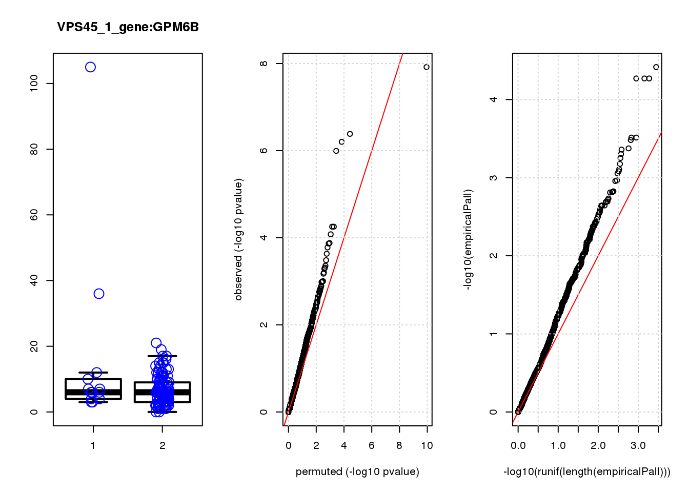
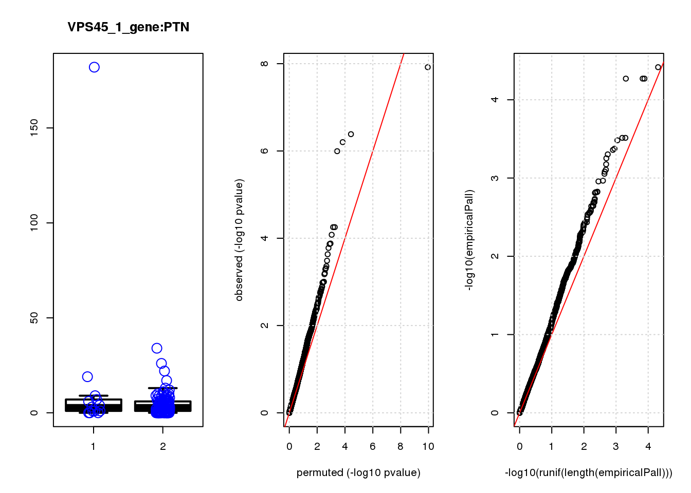
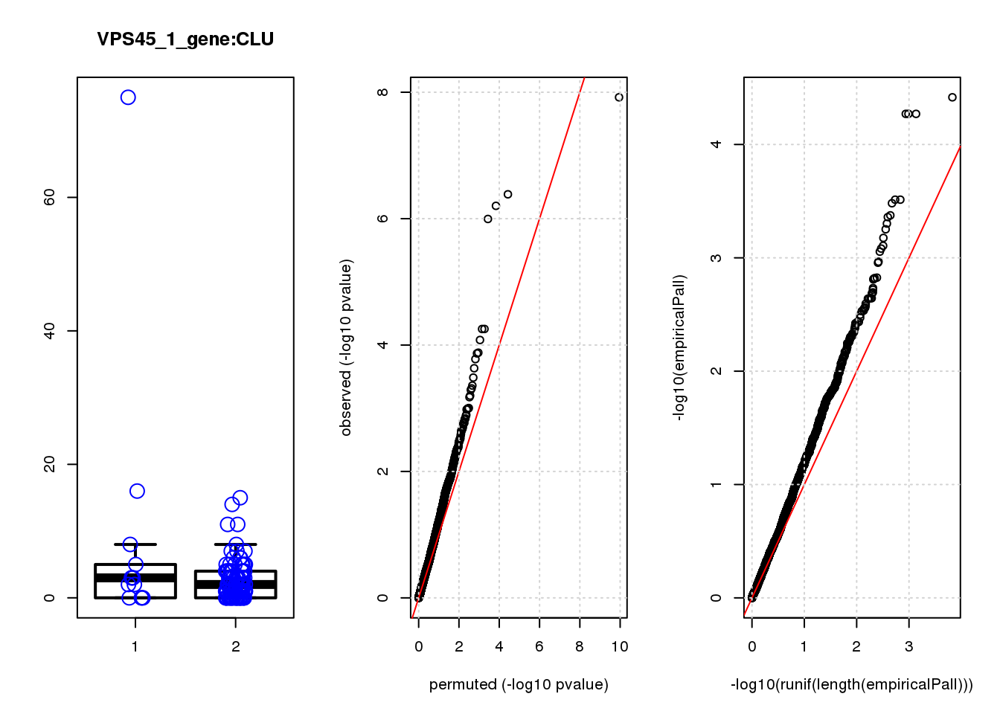
[1] "VPS45_2_gene_edgeR-qlf_Neg1.Rd"
logFC logCPM F PValue FDR empiricalP empiricalP.FDR #in_real
NINJ1 -0.97 7.0 17.0 4.3e-05 0.19 0.00021 0.9 1
SUMO3 -0.48 8.0 13.0 3.2e-04 0.68 0.00065 1.0 2
GAP43 0.86 8.2 12.0 5.3e-04 0.76 0.00097 1.0 3
SNAPC3 0.72 6.9 11.0 8.5e-04 0.92 0.00140 1.0 4
U2SURP -0.47 7.7 9.8 2.0e-03 1.00 0.00290 1.0 5
PAQR4 -0.78 6.9 9.5 2.3e-03 1.00 0.00320 1.0 6
MLLT11 0.50 8.8 9.2 2.7e-03 1.00 0.00350 1.0 7
TRMT112 -0.28 8.9 9.0 3.0e-03 1.00 0.00380 1.0 8
PPP5C -0.58 7.0 8.8 3.4e-03 1.00 0.00420 1.0 9
PPP2R2B 0.71 6.8 8.7 3.6e-03 1.00 0.00440 1.0 10
1e-04 NA NA NA NA NA NA NA 1
1e-05 NA NA NA NA NA NA NA 0
1e-06 NA NA NA NA NA NA NA 0
1e-07 NA NA NA NA NA NA NA 0
1e-08 NA NA NA NA NA NA NA 0
1e-09 NA NA NA NA NA NA NA 0
1e-10 NA NA NA NA NA NA NA 0
#in_perm EmpiricalFDR
NINJ1 0.90 0.9
SUMO3 2.80 1.4
GAP43 4.20 1.4
SNAPC3 6.10 1.5
U2SURP 12.00 2.5
PAQR4 14.00 2.3
MLLT11 15.00 2.1
TRMT112 16.00 2.0
PPP5C 18.00 2.0
PPP2R2B 19.00 1.9
1e-04 1.40 1.4
1e-05 0.33 Inf
1e-06 0.13 Inf
1e-07 0.00 NaN
1e-08 0.00 NaN
1e-09 0.00 NaN
1e-10 0.00 NaN
[1] "VPS45_3_gene_edgeR-qlf_Neg1.Rd"
logFC logCPM F PValue FDR empiricalP empiricalP.FDR #in_real
NKAIN4 2.1 7.1 17.0 5.2e-05 0.22 0.00016 0.48 1
PCGF2 -3.5 7.0 16.0 1.1e-04 0.23 0.00022 0.48 2
GNPDA1 1.7 6.9 13.0 4.0e-04 0.44 0.00054 0.58 3
UCK2 -2.9 6.8 13.0 4.5e-04 0.44 0.00059 0.58 4
TXNRD1 1.6 7.3 13.0 5.1e-04 0.44 0.00067 0.58 5
CTDSP2 -2.9 6.8 11.0 1.2e-03 0.65 0.00130 0.61 6
ARG2 1.5 6.8 11.0 1.4e-03 0.65 0.00150 0.61 7
CHTF8 -1.8 7.3 10.0 1.7e-03 0.65 0.00180 0.61 8
SF3B4 -1.3 7.7 9.9 2.0e-03 0.65 0.00200 0.61 9
COA1 -1.1 7.9 9.9 2.0e-03 0.65 0.00210 0.61 10
1e-04 NA NA NA NA NA NA NA 1
1e-05 NA NA NA NA NA NA NA 0
1e-06 NA NA NA NA NA NA NA 0
1e-07 NA NA NA NA NA NA NA 0
1e-08 NA NA NA NA NA NA NA 0
1e-09 NA NA NA NA NA NA NA 0
1e-10 NA NA NA NA NA NA NA 0
#in_perm EmpiricalFDR
NKAIN4 0.70 0.70
PCGF2 0.97 0.48
GNPDA1 2.30 0.78
UCK2 2.60 0.64
TXNRD1 2.90 0.58
CTDSP2 5.60 0.93
ARG2 6.30 0.90
CHTF8 7.80 0.98
SF3B4 8.80 0.98
COA1 9.00 0.90
1e-04 0.97 0.97
1e-05 0.30 Inf
1e-06 0.20 Inf
1e-07 0.10 Inf
1e-08 0.00 NaN
1e-09 0.00 NaN
1e-10 0.00 NaNUsing all cells except the ones with targeted gRNA as controls
source("code/empiricalFDR.R")
pbins <- 10** (-4:-10)
for (gRNAfile in list.files("data/gRNA_edgeR-QLF/", "*edgeR-qlf_Neg2.Rd")){
print(gRNAfile)
gRNA <- strsplit(gRNAfile, "_edgeR")[[1]][1]
gRNAlocus <- strsplit(gRNA, split = "_")[[1]][1]
load(paste0("data/gRNA_edgeR-QLF/", gRNAfile))
fdrmetricall <- empiricalFDR(res2$table$PValue, res2$table$PValue, unlist(lapply(permres2, function(x) x$table$PValue)))
empiricalPall <- empiricalPvalue(res2$table$PValue, unlist(lapply(permres2, function(x) x$table$PValue)))
empiricalPfdrall <- p.adjust(empiricalPall, method="BH")
resEmpiricalp <- cbind(res2$table, fdrmetricall,empiricalPall,empiricalPfdrall)
save(resEmpiricalp, file=paste0("data/gRNA_edgeR-QLF/", gRNA,"_edgeR-qlf_Neg2_Empricialp.Rd"))
outpvalues <- c(res2$table[1:10,"PValue"], pbins)
outpbins <- matrix(NA, nrow=length(pbins), ncol=dim(res2$table)[2])
rownames(outpbins) <- pbins
colnames(outpbins) <- colnames(res2$table)
outm <- rbind(res2$table[1:10,], outpbins)
fdrmetric <- empiricalFDR(outpvalues, res2$table$PValue, unlist(lapply(permres2, function(x) x$table$PValue)))
empiricalP <- c(empiricalPall[1:10], rep(NA,length(pbins)))
empiricalP.FDR <- c(empiricalPfdrall[1:10], rep(NA,length(pbins)))
outm <- cbind(outm,empiricalP,empiricalP.FDR, fdrmetric)
outm$logFC <- -outm$logFC
print(signif(outm,2))
plotgn <- rownames(outm[1:10,][outm[1:10, "EmpiricalFDR"] <0.2,])
if (length(plotgn)!=0){
for (gn in plotgn){
gcount <- dm[gn, gRNAdm0[gRNA,] >0 & colSums(gRNAdm0[rownames(gRNAdm0) != gRNA,]) == 0]
ncount1 <- dm[gn, colnames(dm1dfagg)[dm1dfagg["neg",] >0 & nlocus==1]]
a <- rbind(cbind(gcount,1),cbind(ncount1,2))
colnames(a) <- c("count","categ")
par(mfrow=c(1,3))
boxplot(count ~categ, data = a, lwd = 2, main=paste(gRNA, gn, sep=":"), outcol="white")
stripchart(count ~categ, data=a, vertical = TRUE, method = "jitter", add = TRUE, pch = 21, cex=2, col = 'blue')
qqplot( -log10(unlist(lapply(permres2, function(x) x$table$PValue))),-log10(res2$table$PValue), xlab="permuted (-log10 pvalue)", ylab="observed (-log10 pvalue)")
abline(a=0, b=1, col="red")
grid()
qqplot(-log10(runif(length(empiricalPall))),-log10(empiricalPall))
abline(a=0, b=1, col="red")
grid()
}
}
}[1] "BAG5_1_gene_edgeR-qlf_Neg2.Rd"
logFC logCPM F PValue FDR empiricalP empiricalP.FDR #in_real
LARP1 -0.84 7.3 13.0 0.00028 0.44 0.00034 0.52 1
CCND1 -0.91 8.2 13.0 0.00030 0.44 0.00036 0.52 2
ARPC3 -0.44 8.5 13.0 0.00032 0.44 0.00037 0.52 3
CNOT11 -1.10 6.7 12.0 0.00060 0.63 0.00059 0.59 4
PCF11 -1.20 6.6 11.0 0.00081 0.67 0.00070 0.59 5
RMDN1 -1.00 6.7 10.0 0.00120 0.87 0.00100 0.71 6
UFM1 -0.84 7.1 9.9 0.00160 0.87 0.00130 0.72 7
TPM2 -1.90 7.2 9.7 0.00180 0.87 0.00150 0.72 8
CAMLG -0.56 7.6 9.6 0.00200 0.87 0.00160 0.72 9
ATP2B1 -0.85 7.0 9.5 0.00210 0.87 0.00170 0.72 10
1e-04 NA NA NA NA NA NA NA 0
1e-05 NA NA NA NA NA NA NA 0
1e-06 NA NA NA NA NA NA NA 0
1e-07 NA NA NA NA NA NA NA 0
1e-08 NA NA NA NA NA NA NA 0
1e-09 NA NA NA NA NA NA NA 0
1e-10 NA NA NA NA NA NA NA 0
#in_perm EmpiricalFDR
LARP1 1.400 1.40
CCND1 1.500 0.75
ARPC3 1.600 0.52
CNOT11 2.500 0.62
PCF11 2.900 0.59
RMDN1 4.300 0.71
UFM1 5.400 0.77
TPM2 6.300 0.78
CAMLG 6.900 0.76
ATP2B1 7.200 0.72
1e-04 0.770 Inf
1e-05 0.400 Inf
1e-06 0.200 Inf
1e-07 0.170 Inf
1e-08 0.130 Inf
1e-09 0.100 Inf
1e-10 0.067 Inf
[1] "BAG5_2_gene_edgeR-qlf_Neg2.Rd"
logFC logCPM F PValue FDR empiricalP empiricalP.FDR #in_real
MIAT 1.20 7.1 13.0 0.00034 0.63 0.00059 0.68 1
NIN 0.89 6.8 13.0 0.00036 0.63 0.00060 0.68 2
RAB32 -1.60 6.7 12.0 0.00045 0.63 0.00066 0.68 3
RPL14 -0.26 11.0 12.0 0.00066 0.69 0.00092 0.68 4
RPS23 -0.28 13.0 11.0 0.00110 0.81 0.00140 0.68 5
BAG1 0.48 7.7 10.0 0.00130 0.81 0.00150 0.68 6
OS9 0.67 7.2 10.0 0.00150 0.81 0.00170 0.68 7
TSN 0.51 7.3 9.6 0.00200 0.81 0.00230 0.68 8
ECHDC1 0.60 7.4 9.4 0.00210 0.81 0.00240 0.68 9
RPL35A -0.22 12.0 9.3 0.00230 0.81 0.00250 0.68 10
1e-04 NA NA NA NA NA NA NA 0
1e-05 NA NA NA NA NA NA NA 0
1e-06 NA NA NA NA NA NA NA 0
1e-07 NA NA NA NA NA NA NA 0
1e-08 NA NA NA NA NA NA NA 0
1e-09 NA NA NA NA NA NA NA 0
1e-10 NA NA NA NA NA NA NA 0
#in_perm EmpiricalFDR
MIAT 2.500 2.50
NIN 2.500 1.20
RAB32 2.800 0.92
RPL14 3.900 0.97
RPS23 5.700 1.10
BAG1 6.400 1.10
OS9 7.000 1.00
TSN 9.500 1.20
ECHDC1 10.000 1.10
RPL35A 10.000 1.00
1e-04 1.100 Inf
1e-05 0.570 Inf
1e-06 0.230 Inf
1e-07 0.200 Inf
1e-08 0.130 Inf
1e-09 0.067 Inf
1e-10 0.033 Inf
[1] "BAG5_3_gene_edgeR-qlf_Neg2.Rd"
logFC logCPM F PValue FDR empiricalP empiricalP.FDR #in_real
DFFA 0.83 7.0 18.0 2.7e-05 0.11 0.00008 0.33 1
ASCL1 -2.20 7.1 13.0 2.9e-04 0.61 0.00025 0.53 2
CDKN1A -1.60 8.1 11.0 7.8e-04 0.72 0.00068 0.60 3
MED4 -0.67 7.4 11.0 1.0e-03 0.72 0.00089 0.60 4
LAMTOR5 -0.48 8.3 11.0 1.1e-03 0.72 0.00097 0.60 5
DLL1 -2.10 6.9 11.0 1.2e-03 0.72 0.00100 0.60 6
TIGAR -1.20 6.8 10.0 1.2e-03 0.72 0.00100 0.60 7
BIN3 -1.00 6.7 10.0 1.4e-03 0.72 0.00120 0.60 8
C7orf73 0.42 8.0 9.6 1.9e-03 0.81 0.00150 0.60 9
METTL12 0.72 6.8 9.3 2.4e-03 0.81 0.00180 0.60 10
1e-04 NA NA NA NA NA NA NA 1
1e-05 NA NA NA NA NA NA NA 0
1e-06 NA NA NA NA NA NA NA 0
1e-07 NA NA NA NA NA NA NA 0
1e-08 NA NA NA NA NA NA NA 0
1e-09 NA NA NA NA NA NA NA 0
1e-10 NA NA NA NA NA NA NA 0
#in_perm EmpiricalFDR
DFFA 0.330 0.33
ASCL1 1.100 0.53
CDKN1A 2.900 0.96
MED4 3.700 0.93
LAMTOR5 4.100 0.81
DLL1 4.300 0.71
TIGAR 4.300 0.62
BIN3 4.900 0.61
C7orf73 6.300 0.70
METTL12 7.600 0.76
1e-04 0.630 0.63
1e-05 0.170 Inf
1e-06 0.067 Inf
1e-07 0.000 NaN
1e-08 0.000 NaN
1e-09 0.000 NaN
1e-10 0.000 NaN
[1] "BCL11B_1_gene_edgeR-qlf_Neg2.Rd"
logFC logCPM F PValue FDR empiricalP empiricalP.FDR #in_real
ARL3 -0.71 8.2 9.9 0.0017 1 0.0022 0.96 1
LIMCH1 -1.50 7.4 8.8 0.0030 1 0.0034 0.96 2
NEFM 1.40 7.5 8.8 0.0030 1 0.0035 0.96 3
SMCO4 -1.90 6.7 8.7 0.0032 1 0.0037 0.96 4
UXS1 -1.70 6.6 8.6 0.0035 1 0.0039 0.96 5
CCDC124 -0.84 7.7 8.5 0.0036 1 0.0041 0.96 6
ADI1 -1.40 7.1 8.4 0.0037 1 0.0042 0.96 7
ATF5 -2.60 7.0 8.1 0.0044 1 0.0048 0.96 8
UNG -2.00 6.8 8.0 0.0047 1 0.0051 0.96 9
AKIRIN1 0.63 7.8 7.9 0.0050 1 0.0053 0.96 10
1e-04 NA NA NA NA NA NA NA 0
1e-05 NA NA NA NA NA NA NA 0
1e-06 NA NA NA NA NA NA NA 0
1e-07 NA NA NA NA NA NA NA 0
1e-08 NA NA NA NA NA NA NA 0
1e-09 NA NA NA NA NA NA NA 0
1e-10 NA NA NA NA NA NA NA 0
#in_perm EmpiricalFDR
ARL3 9.10 9.1
LIMCH1 14.00 7.2
NEFM 15.00 4.9
SMCO4 15.00 3.8
UXS1 16.00 3.3
CCDC124 17.00 2.9
ADI1 18.00 2.5
ATF5 20.00 2.5
UNG 21.00 2.3
AKIRIN1 22.00 2.2
1e-04 1.60 Inf
1e-05 0.57 Inf
1e-06 0.27 Inf
1e-07 0.20 Inf
1e-08 0.17 Inf
1e-09 0.13 Inf
1e-10 0.10 Inf
[1] "BCL11B_2_gene_edgeR-qlf_Neg2.Rd"
logFC logCPM F PValue FDR empiricalP empiricalP.FDR #in_real
JAG1 1.10 6.8 18 2.7e-05 0.071 0.00032 0.62 1
PHLDA1 1.20 7.0 17 3.4e-05 0.071 0.00036 0.62 2
RPRML -1.50 6.7 14 2.3e-04 0.300 0.00080 0.62 3
CACYBP -0.60 8.1 13 3.8e-04 0.300 0.00110 0.62 4
APLP1 -0.86 7.4 12 4.1e-04 0.300 0.00110 0.62 5
DDX6 -1.00 6.9 12 4.4e-04 0.300 0.00120 0.62 6
GCSH -0.46 8.6 12 6.0e-04 0.360 0.00150 0.62 7
RMI2 -1.30 6.6 11 7.6e-04 0.380 0.00170 0.62 8
ATF3 0.95 7.1 11 8.8e-04 0.380 0.00190 0.62 9
C9orf116 -0.88 7.2 11 9.1e-04 0.380 0.00190 0.62 10
1e-04 NA NA NA NA NA NA NA 2
1e-05 NA NA NA NA NA NA NA 0
1e-06 NA NA NA NA NA NA NA 0
1e-07 NA NA NA NA NA NA NA 0
1e-08 NA NA NA NA NA NA NA 0
1e-09 NA NA NA NA NA NA NA 0
1e-10 NA NA NA NA NA NA NA 0
#in_perm EmpiricalFDR
JAG1 1.30 1.30
PHLDA1 1.50 0.75
RPRML 3.30 1.10
CACYBP 4.50 1.10
APLP1 4.80 0.95
DDX6 5.00 0.83
GCSH 6.30 0.90
RMI2 7.20 0.90
ATF3 7.90 0.87
C9orf116 8.10 0.81
1e-04 2.30 1.20
1e-05 0.97 Inf
1e-06 0.43 Inf
1e-07 0.30 Inf
1e-08 0.17 Inf
1e-09 0.17 Inf
1e-10 0.17 Inf
[1] "BCL11B_3_gene_edgeR-qlf_Neg2.Rd"
logFC logCPM F PValue FDR empiricalP empiricalP.FDR #in_real
DKK3 1.30 6.6 13.0 0.0004 1 0.00072 1 1
EIF5 -0.78 9.0 11.0 0.0010 1 0.00140 1 2
FASTK -1.50 7.0 10.0 0.0013 1 0.00160 1 3
DUSP1 -2.50 6.7 9.8 0.0018 1 0.00200 1 4
FAAP20 -1.20 7.4 9.2 0.0025 1 0.00250 1 5
GOLGA7 -0.94 7.4 7.9 0.0049 1 0.00450 1 6
GTF2H2 -1.80 6.7 7.8 0.0054 1 0.00480 1 7
FNBP1L -1.70 6.6 7.7 0.0056 1 0.00500 1 8
ACP1 -0.53 8.7 7.6 0.0058 1 0.00510 1 9
MED24 -1.40 6.7 7.5 0.0062 1 0.00550 1 10
1e-04 NA NA NA NA NA NA NA 0
1e-05 NA NA NA NA NA NA NA 0
1e-06 NA NA NA NA NA NA NA 0
1e-07 NA NA NA NA NA NA NA 0
1e-08 NA NA NA NA NA NA NA 0
1e-09 NA NA NA NA NA NA NA 0
1e-10 NA NA NA NA NA NA NA 0
#in_perm EmpiricalFDR
DKK3 3.000 3.0
EIF5 5.700 2.9
FASTK 6.800 2.3
DUSP1 8.600 2.1
FAAP20 11.000 2.1
GOLGA7 19.000 3.1
GTF2H2 20.000 2.9
FNBP1L 21.000 2.6
ACP1 22.000 2.4
MED24 23.000 2.3
1e-04 1.600 Inf
1e-05 0.730 Inf
1e-06 0.370 Inf
1e-07 0.230 Inf
1e-08 0.170 Inf
1e-09 0.130 Inf
1e-10 0.033 Inf
[1] "CHRNA3_1_gene_edgeR-qlf_Neg2.Rd"
logFC logCPM F PValue FDR empiricalP empiricalP.FDR #in_real
ISG15 1.80 6.8 8.9 0.0028 0.93 0.0026 0.85 1
PHAX -2.80 7.4 8.6 0.0034 0.93 0.0030 0.85 2
C8orf59 1.20 7.5 8.1 0.0044 0.93 0.0039 0.85 3
MIIP 1.70 6.8 8.0 0.0046 0.93 0.0041 0.85 4
NUDCD2 1.40 7.4 8.0 0.0047 0.93 0.0041 0.85 5
ERH 0.73 9.5 8.0 0.0048 0.93 0.0042 0.85 6
MTHFD1L -3.80 7.0 7.9 0.0049 0.93 0.0043 0.85 7
HMG20B -3.60 6.9 7.9 0.0050 0.93 0.0044 0.85 8
SCAMP3 -3.60 6.9 7.9 0.0051 0.93 0.0045 0.85 9
ADD1 -3.60 6.9 7.8 0.0052 0.93 0.0045 0.85 10
1e-04 NA NA NA NA NA NA NA 0
1e-05 NA NA NA NA NA NA NA 0
1e-06 NA NA NA NA NA NA NA 0
1e-07 NA NA NA NA NA NA NA 0
1e-08 NA NA NA NA NA NA NA 0
1e-09 NA NA NA NA NA NA NA 0
1e-10 NA NA NA NA NA NA NA 0
#in_perm EmpiricalFDR
ISG15 11.000 11.0
PHAX 13.000 6.4
C8orf59 16.000 5.5
MIIP 17.000 4.3
NUDCD2 17.000 3.4
ERH 18.000 2.9
MTHFD1L 18.000 2.6
HMG20B 18.000 2.3
SCAMP3 19.000 2.1
ADD1 19.000 1.9
1e-04 1.200 Inf
1e-05 0.430 Inf
1e-06 0.170 Inf
1e-07 0.067 Inf
1e-08 0.000 NaN
1e-09 0.000 NaN
1e-10 0.000 NaN
[1] "CHRNA3_2_gene_edgeR-qlf_Neg2.Rd"
logFC logCPM F PValue FDR empiricalP empiricalP.FDR #in_real
SLC25A26 -1.50 6.7 14.0 0.00022 0.81 0.00049 0.87 1
BNIP3 0.76 7.1 11.0 0.00096 0.81 0.00130 0.87 2
ZNF503 0.99 6.8 11.0 0.00097 0.81 0.00130 0.87 3
PRDX1 0.42 9.5 10.0 0.00130 0.81 0.00160 0.87 4
MRPL37 -0.61 8.0 10.0 0.00150 0.81 0.00170 0.87 5
PWP1 -0.93 7.1 10.0 0.00150 0.81 0.00170 0.87 6
DDX41 -0.94 7.0 9.9 0.00170 0.81 0.00180 0.87 7
SUCLG1 -0.72 7.6 9.9 0.00170 0.81 0.00180 0.87 8
OIP5 -1.40 6.6 9.8 0.00180 0.81 0.00190 0.87 9
HADHB 0.69 7.1 9.1 0.00250 0.96 0.00240 0.87 10
1e-04 NA NA NA NA NA NA NA 0
1e-05 NA NA NA NA NA NA NA 0
1e-06 NA NA NA NA NA NA NA 0
1e-07 NA NA NA NA NA NA NA 0
1e-08 NA NA NA NA NA NA NA 0
1e-09 NA NA NA NA NA NA NA 0
1e-10 NA NA NA NA NA NA NA 0
#in_perm EmpiricalFDR
SLC25A26 2.10 2.10
BNIP3 5.20 2.60
ZNF503 5.30 1.80
PRDX1 6.70 1.70
MRPL37 7.20 1.40
PWP1 7.20 1.20
DDX41 7.70 1.10
SUCLG1 7.70 0.96
OIP5 8.00 0.89
HADHB 10.00 1.00
1e-04 1.50 Inf
1e-05 0.60 Inf
1e-06 0.50 Inf
1e-07 0.33 Inf
1e-08 0.23 Inf
1e-09 0.13 Inf
1e-10 0.10 Inf
[1] "CHRNA3_3_gene_edgeR-qlf_Neg2.Rd"
logFC logCPM F PValue FDR empiricalP empiricalP.FDR #in_real
ARF4 1.00 8.3 22 3.6e-06 0.0055 0.00011 0.17 1
CDC42EP3 1.50 6.7 21 3.8e-06 0.0055 0.00012 0.17 2
NANS 1.30 6.9 21 4.0e-06 0.0055 0.00012 0.17 3
ALG3 1.00 7.1 15 1.4e-04 0.1200 0.00039 0.33 4
TUBB2A 0.99 8.9 15 1.4e-04 0.1200 0.00039 0.33 5
RRP9 1.00 7.0 13 2.7e-04 0.1900 0.00053 0.35 6
CIB1 0.91 7.2 13 3.9e-04 0.2300 0.00065 0.35 7
AKAP12 1.00 7.4 11 7.8e-04 0.3900 0.00100 0.35 8
NIFK 0.69 7.8 11 9.2e-04 0.3900 0.00110 0.35 9
HNRNPC -0.46 9.9 11 1.1e-03 0.3900 0.00130 0.35 10
1e-04 NA NA NA NA NA NA NA 3
1e-05 NA NA NA NA NA NA NA 3
1e-06 NA NA NA NA NA NA NA 0
1e-07 NA NA NA NA NA NA NA 0
1e-08 NA NA NA NA NA NA NA 0
1e-09 NA NA NA NA NA NA NA 0
1e-10 NA NA NA NA NA NA NA 0
#in_perm EmpiricalFDR
ARF4 0.470 0.47
CDC42EP3 0.500 0.25
NANS 0.500 0.17
ALG3 1.600 0.41
TUBB2A 1.600 0.33
RRP9 2.200 0.37
CIB1 2.700 0.39
AKAP12 4.200 0.53
NIFK 4.600 0.51
HNRNPC 5.400 0.54
1e-04 1.300 0.42
1e-05 0.530 0.18
1e-06 0.330 Inf
1e-07 0.230 Inf
1e-08 0.130 Inf
1e-09 0.067 Inf
1e-10 0.033 Inf
[1] "DPYD_1_gene_edgeR-qlf_Neg2.Rd"
logFC logCPM F PValue FDR empiricalP empiricalP.FDR
CTD-2006C1.2 1.70 6.9 120 1.7e-27 7.3e-24 8.0e-06 0.033
DUSP4 1.20 6.6 31 3.5e-08 7.4e-05 4.0e-05 0.071
NTRK2 -1.30 7.3 18 2.1e-05 2.1e-02 1.4e-04 0.071
RP11-14N7.2 0.83 7.3 18 2.7e-05 2.1e-02 1.5e-04 0.071
UROD 0.70 7.1 17 3.1e-05 2.1e-02 1.7e-04 0.071
CTSD 0.79 7.3 17 3.6e-05 2.1e-02 1.8e-04 0.071
DLGAP5 -1.60 6.7 17 3.7e-05 2.1e-02 1.9e-04 0.071
FASN -1.10 7.1 17 4.1e-05 2.1e-02 2.1e-04 0.071
SIRT7 0.79 6.7 17 4.5e-05 2.1e-02 2.1e-04 0.071
PITHD1 0.59 7.4 16 5.3e-05 2.2e-02 2.3e-04 0.071
1e-04 NA NA NA NA NA NA NA
1e-05 NA NA NA NA NA NA NA
1e-06 NA NA NA NA NA NA NA
1e-07 NA NA NA NA NA NA NA
1e-08 NA NA NA NA NA NA NA
1e-09 NA NA NA NA NA NA NA
1e-10 NA NA NA NA NA NA NA
#in_real #in_perm EmpiricalFDR
CTD-2006C1.2 1 0.033 0.033
DUSP4 2 0.170 0.083
NTRK2 3 0.600 0.200
RP11-14N7.2 4 0.630 0.160
UROD 5 0.700 0.140
CTSD 6 0.770 0.130
DLGAP5 7 0.800 0.110
FASN 8 0.870 0.110
SIRT7 9 0.900 0.100
PITHD1 10 0.970 0.097
1e-04 17 1.200 0.073
1e-05 2 0.600 0.300
1e-06 2 0.400 0.200
1e-07 2 0.200 0.100
1e-08 1 0.170 0.170
1e-09 1 0.067 0.067
1e-10 1 0.067 0.067
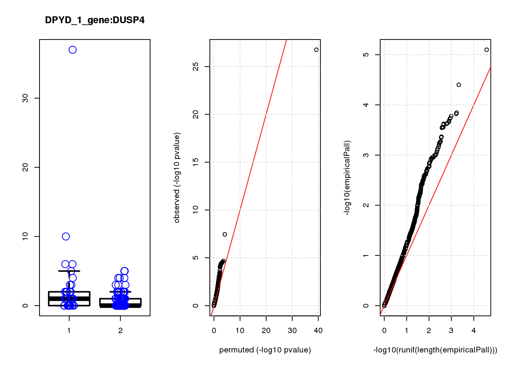
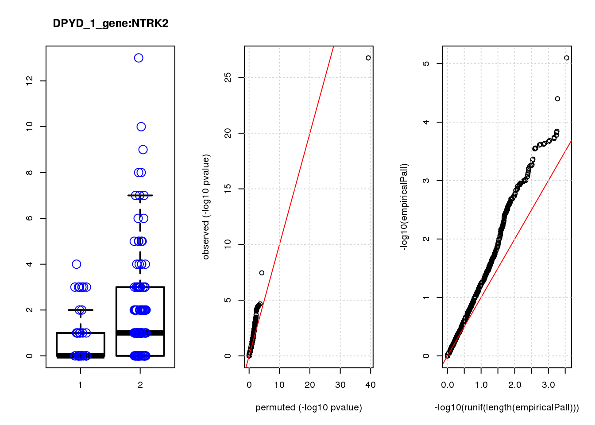
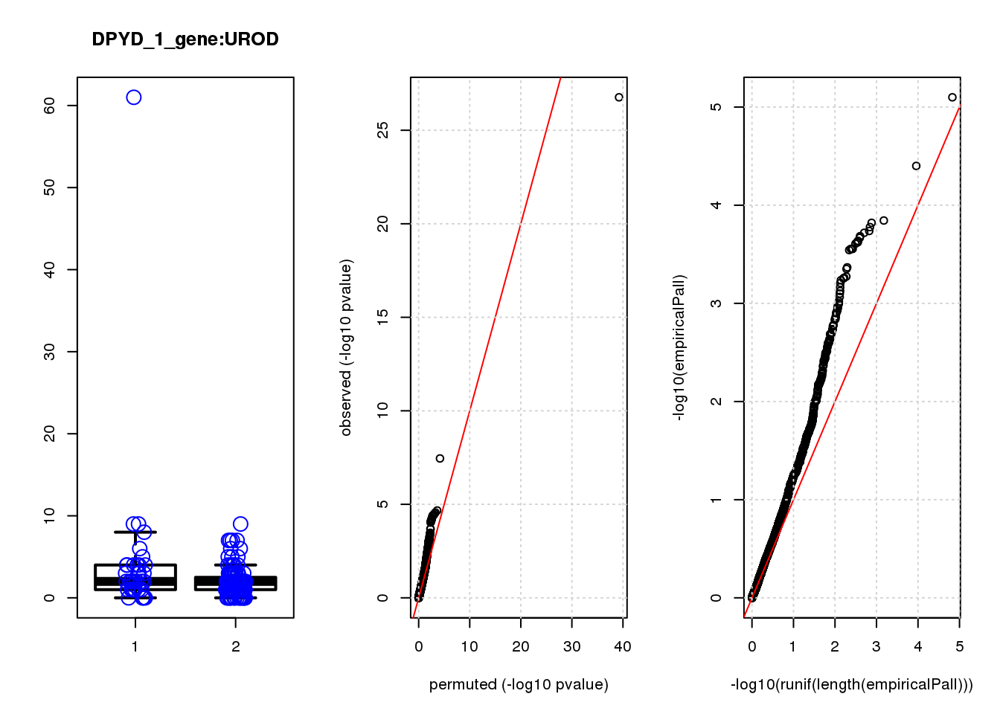
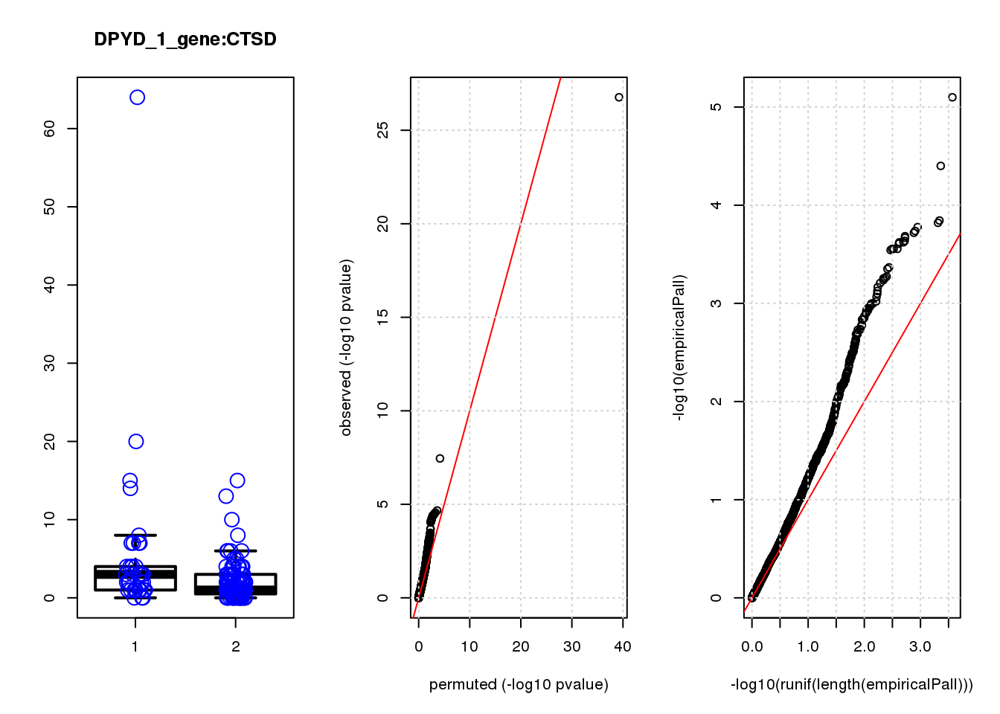
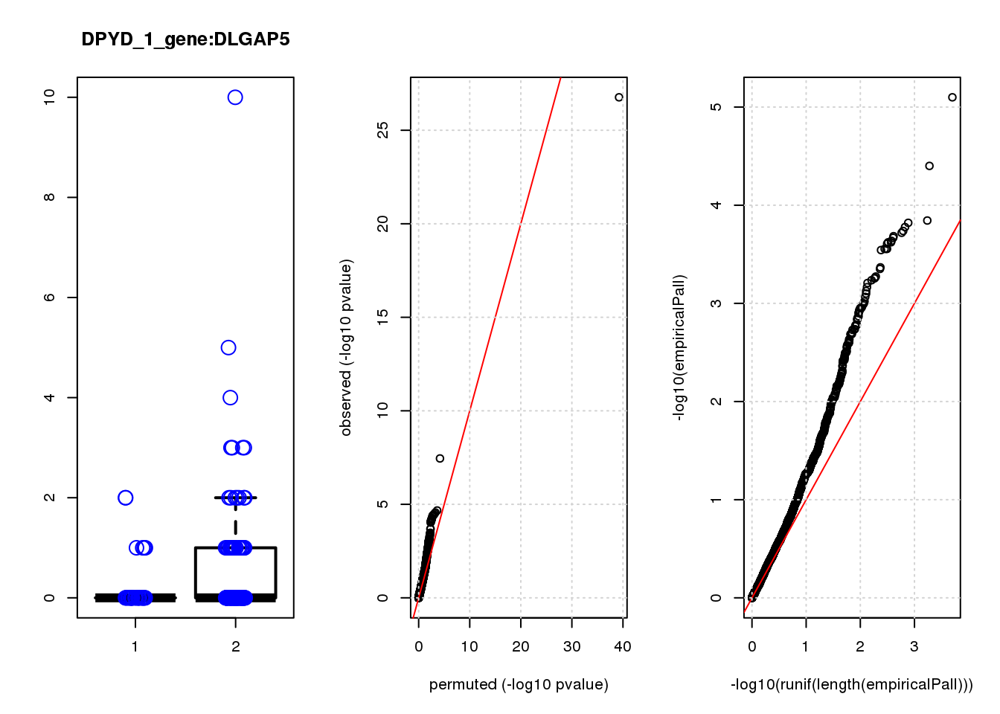

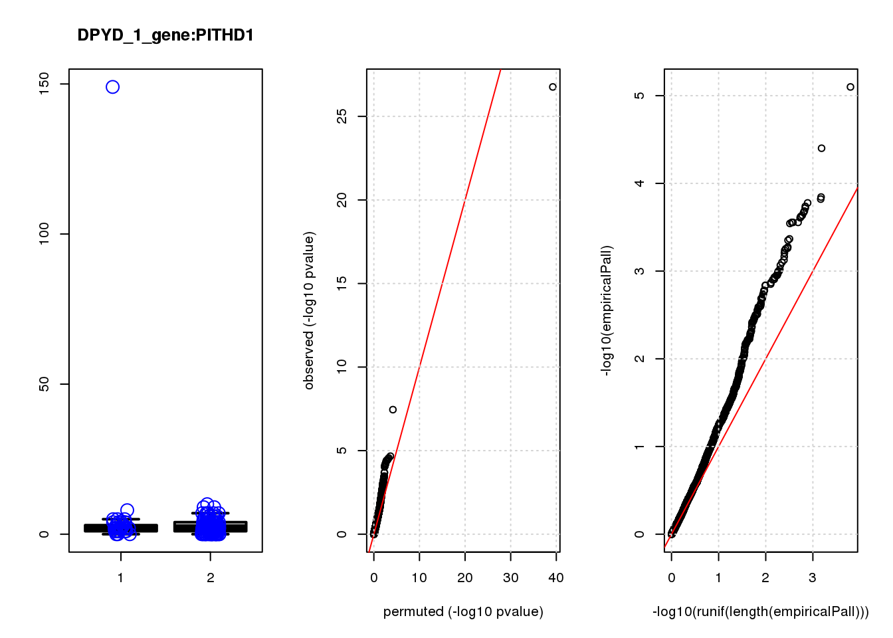
[1] "DPYD_2_gene_edgeR-qlf_Neg2.Rd"
logFC logCPM F PValue FDR empiricalP empiricalP.FDR #in_real
MEG3 0.86 7.5 28 1.2e-07 0.00051 7.9e-05 0.20 1
CSRP1 0.92 7.1 23 1.4e-06 0.00280 9.5e-05 0.20 2
SMPD4 -0.84 6.7 17 4.3e-05 0.06100 2.0e-04 0.24 3
NUDT3 -0.76 6.9 15 9.0e-05 0.09400 2.4e-04 0.24 4
CRNDE -0.47 8.4 14 1.5e-04 0.12000 2.9e-04 0.24 5
MYL9 0.75 7.6 13 3.3e-04 0.23000 4.8e-04 0.32 6
MRFAP1 -0.24 8.9 13 3.9e-04 0.24000 5.4e-04 0.32 7
ANKRD11 -0.48 7.6 12 5.6e-04 0.29000 6.4e-04 0.32 8
VTA1 -0.65 6.7 12 6.3e-04 0.29000 6.9e-04 0.32 9
DPYSL5 -0.52 7.2 11 8.5e-04 0.35000 9.2e-04 0.36 10
1e-04 NA NA NA NA NA NA NA 4
1e-05 NA NA NA NA NA NA NA 2
1e-06 NA NA NA NA NA NA NA 1
1e-07 NA NA NA NA NA NA NA 0
1e-08 NA NA NA NA NA NA NA 0
1e-09 NA NA NA NA NA NA NA 0
1e-10 NA NA NA NA NA NA NA 0
#in_perm EmpiricalFDR
MEG3 0.33 0.33
CSRP1 0.40 0.20
SMPD4 0.83 0.28
NUDT3 1.00 0.25
CRNDE 1.20 0.24
MYL9 2.00 0.34
MRFAP1 2.30 0.32
ANKRD11 2.70 0.34
VTA1 2.90 0.32
DPYSL5 3.90 0.39
1e-04 1.00 0.25
1e-05 0.57 0.28
1e-06 0.40 0.40
1e-07 0.33 Inf
1e-08 0.30 Inf
1e-09 0.23 Inf
1e-10 0.20 Inf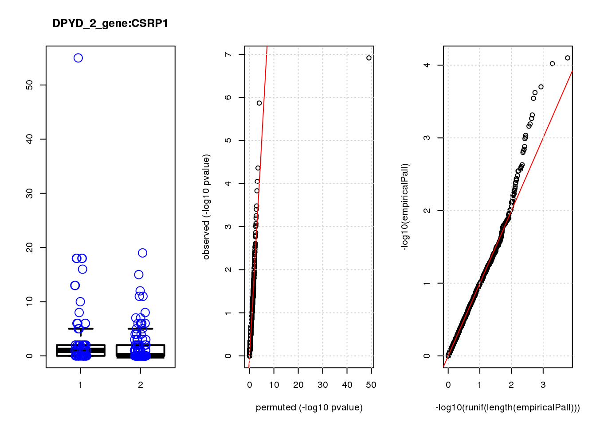
[1] "DPYD_3_gene_edgeR-qlf_Neg2.Rd"
logFC logCPM F PValue FDR empiricalP empiricalP.FDR #in_real
NEAT1 -2.00 8.6 17.0 3.8e-05 0.16 0.00012 0.50 1
C4orf48 -0.62 8.0 11.0 8.6e-04 1.00 0.00084 0.88 2
REXO2 -0.86 7.2 9.9 1.7e-03 1.00 0.00160 0.88 3
APEX1 0.37 9.0 9.7 1.8e-03 1.00 0.00160 0.88 4
SERINC2 -1.20 6.8 9.4 2.1e-03 1.00 0.00190 0.88 5
SNX3 -0.52 8.0 9.4 2.2e-03 1.00 0.00190 0.88 6
GAP43 -1.20 8.2 9.3 2.3e-03 1.00 0.00210 0.88 7
B2M -0.74 8.9 8.9 2.9e-03 1.00 0.00250 0.88 8
HNRNPC 0.26 9.9 8.8 3.0e-03 1.00 0.00250 0.88 9
COPS3 0.44 7.9 8.7 3.2e-03 1.00 0.00270 0.88 10
1e-04 NA NA NA NA NA NA NA 1
1e-05 NA NA NA NA NA NA NA 0
1e-06 NA NA NA NA NA NA NA 0
1e-07 NA NA NA NA NA NA NA 0
1e-08 NA NA NA NA NA NA NA 0
1e-09 NA NA NA NA NA NA NA 0
1e-10 NA NA NA NA NA NA NA 0
#in_perm EmpiricalFDR
NEAT1 0.500 0.5
C4orf48 3.500 1.8
REXO2 6.500 2.2
APEX1 6.700 1.7
SERINC2 7.800 1.6
SNX3 7.900 1.3
GAP43 8.600 1.2
B2M 10.000 1.3
HNRNPC 11.000 1.2
COPS3 11.000 1.1
1e-04 0.800 0.8
1e-05 0.300 Inf
1e-06 0.130 Inf
1e-07 0.067 Inf
1e-08 0.033 Inf
1e-09 0.033 Inf
1e-10 0.000 NaN
[1] "GALNT10_1_gene_edgeR-qlf_Neg2.Rd"
logFC logCPM F PValue FDR empiricalP empiricalP.FDR #in_real
FAM104B -1.00 6.9 15.0 0.00014 0.58 0.00038 1 1
MAT2B 0.70 6.9 12.0 0.00050 0.80 0.00076 1 2
WSB1 -0.64 7.6 11.0 0.00073 0.80 0.00110 1 3
DCAF15 -1.00 6.7 11.0 0.00076 0.80 0.00110 1 4
FZD3 -0.56 7.7 9.8 0.00180 1.00 0.00220 1 5
DECR1 -0.98 6.8 9.2 0.00240 1.00 0.00290 1 6
ZNF462 -0.77 7.0 9.0 0.00270 1.00 0.00320 1 7
MLLT4 -0.74 7.1 8.8 0.00310 1.00 0.00350 1 8
AHSA1 0.50 7.2 8.6 0.00340 1.00 0.00390 1 9
TAGLN3 0.90 7.1 8.5 0.00360 1.00 0.00410 1 10
1e-04 NA NA NA NA NA NA NA 0
1e-05 NA NA NA NA NA NA NA 0
1e-06 NA NA NA NA NA NA NA 0
1e-07 NA NA NA NA NA NA NA 0
1e-08 NA NA NA NA NA NA NA 0
1e-09 NA NA NA NA NA NA NA 0
1e-10 NA NA NA NA NA NA NA 0
#in_perm EmpiricalFDR
FAM104B 1.600 1.6
MAT2B 3.200 1.6
WSB1 4.400 1.5
DCAF15 4.400 1.1
FZD3 9.300 1.9
DECR1 12.000 2.0
ZNF462 14.000 1.9
MLLT4 15.000 1.8
AHSA1 16.000 1.8
TAGLN3 17.000 1.7
1e-04 1.400 Inf
1e-05 0.430 Inf
1e-06 0.270 Inf
1e-07 0.033 Inf
1e-08 0.000 NaN
1e-09 0.000 NaN
1e-10 0.000 NaN
[1] "GALNT10_2_gene_edgeR-qlf_Neg2.Rd"
logFC logCPM F PValue FDR empiricalP empiricalP.FDR #in_real
SYPL1 -0.79 7.0 9.8 0.0017 1 0.0013 0.99 1
C14orf2 -0.27 9.2 9.7 0.0019 1 0.0015 0.99 2
PYURF -0.43 7.9 9.1 0.0026 1 0.0020 0.99 3
TUBB2B 0.38 11.0 8.7 0.0032 1 0.0023 0.99 4
TP53RK 0.59 6.9 8.2 0.0042 1 0.0030 0.99 5
TYW3 -0.65 7.1 7.8 0.0052 1 0.0039 0.99 6
CCNH -0.82 6.6 7.6 0.0060 1 0.0046 0.99 7
RBBP4 0.37 7.8 7.5 0.0062 1 0.0047 0.99 8
CMBL -0.94 6.8 7.5 0.0062 1 0.0047 0.99 9
UBR4 -0.76 6.8 7.2 0.0072 1 0.0055 0.99 10
1e-04 NA NA NA NA NA NA NA 0
1e-05 NA NA NA NA NA NA NA 0
1e-06 NA NA NA NA NA NA NA 0
1e-07 NA NA NA NA NA NA NA 0
1e-08 NA NA NA NA NA NA NA 0
1e-09 NA NA NA NA NA NA NA 0
1e-10 NA NA NA NA NA NA NA 0
#in_perm EmpiricalFDR
SYPL1 5.600 5.6
C14orf2 6.100 3.1
PYURF 8.200 2.7
TUBB2B 9.600 2.4
TP53RK 13.000 2.5
TYW3 16.000 2.7
CCNH 19.000 2.7
RBBP4 20.000 2.4
CMBL 20.000 2.2
UBR4 23.000 2.3
1e-04 0.900 Inf
1e-05 0.130 Inf
1e-06 0.100 Inf
1e-07 0.067 Inf
1e-08 0.067 Inf
1e-09 0.033 Inf
1e-10 0.033 Inf
[1] "GALNT10_3_gene_edgeR-qlf_Neg2.Rd"
logFC logCPM F PValue FDR empiricalP empiricalP.FDR
NEAT1 1.10 8.6 22.0 2.4e-06 0.0099 1.6e-05 0.067
SPARC 0.41 8.6 11.0 8.8e-04 1.0000 1.1e-03 1.000
NAV1 -0.90 6.7 11.0 1.0e-03 1.0000 1.3e-03 1.000
UPP1 0.63 7.8 9.8 1.7e-03 1.0000 2.1e-03 1.000
CDC25B -0.98 7.0 9.7 1.8e-03 1.0000 2.2e-03 1.000
TUBB2A 0.47 8.9 9.7 1.9e-03 1.0000 2.3e-03 1.000
HMGA1 0.34 11.0 9.2 2.4e-03 1.0000 2.8e-03 1.000
SPOP -0.54 7.1 9.2 2.5e-03 1.0000 2.9e-03 1.000
C9orf114 -0.73 6.7 9.0 2.7e-03 1.0000 3.1e-03 1.000
RCN1 0.35 8.7 8.8 3.1e-03 1.0000 3.5e-03 1.000
1e-04 NA NA NA NA NA NA NA
1e-05 NA NA NA NA NA NA NA
1e-06 NA NA NA NA NA NA NA
1e-07 NA NA NA NA NA NA NA
1e-08 NA NA NA NA NA NA NA
1e-09 NA NA NA NA NA NA NA
1e-10 NA NA NA NA NA NA NA
#in_real #in_perm EmpiricalFDR
NEAT1 1 0.067 0.067
SPARC 2 4.700 2.300
NAV1 3 5.300 1.800
UPP1 4 8.600 2.200
CDC25B 5 9.100 1.800
TUBB2A 6 9.500 1.600
HMGA1 7 12.000 1.700
SPOP 8 12.000 1.500
C9orf114 9 13.000 1.400
RCN1 10 15.000 1.500
1e-04 1 0.800 0.800
1e-05 1 0.230 0.230
1e-06 0 0.067 Inf
1e-07 0 0.000 NaN
1e-08 0 0.000 NaN
1e-09 0 0.000 NaN
1e-10 0 0.000 NaN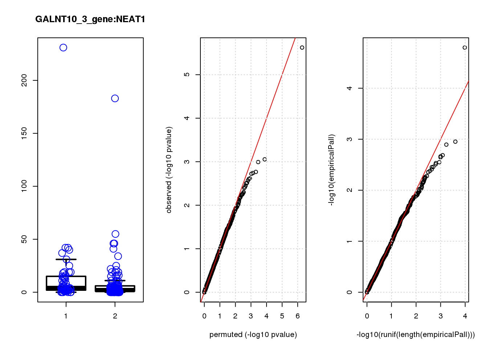
[1] "KCTD13_1_gene_edgeR-qlf_Neg2.Rd"
logFC logCPM F PValue FDR empiricalP empiricalP.FDR #in_real
TUBA1C -3.10 6.8 20 7.0e-06 0.029 0.00004 0.17 1
SLC25A39 -0.84 7.6 16 6.4e-05 0.130 0.00011 0.23 2
NDUFB2 -0.48 8.8 14 2.0e-04 0.200 0.00025 0.28 3
GNG5 -0.41 9.2 13 2.6e-04 0.200 0.00036 0.28 4
TMSB10 -0.66 12.0 13 2.6e-04 0.200 0.00037 0.28 5
CYTOR -1.30 7.7 13 3.1e-04 0.200 0.00044 0.28 6
SRGAP1 -1.10 7.1 13 3.4e-04 0.200 0.00047 0.28 7
PHLDA1 -1.70 7.0 12 6.2e-04 0.300 0.00068 0.32 8
MAGEF1 0.58 7.4 12 6.9e-04 0.300 0.00076 0.32 9
TPM2 -2.20 7.2 11 7.7e-04 0.300 0.00084 0.32 10
1e-04 NA NA NA NA NA NA NA 2
1e-05 NA NA NA NA NA NA NA 1
1e-06 NA NA NA NA NA NA NA 0
1e-07 NA NA NA NA NA NA NA 0
1e-08 NA NA NA NA NA NA NA 0
1e-09 NA NA NA NA NA NA NA 0
1e-10 NA NA NA NA NA NA NA 0
#in_perm EmpiricalFDR
TUBA1C 0.170 0.17
SLC25A39 0.470 0.23
NDUFB2 1.100 0.36
GNG5 1.500 0.38
TMSB10 1.500 0.31
CYTOR 1.800 0.31
SRGAP1 2.000 0.28
PHLDA1 2.900 0.36
MAGEF1 3.200 0.35
TPM2 3.500 0.35
1e-04 0.570 0.28
1e-05 0.170 0.17
1e-06 0.100 Inf
1e-07 0.067 Inf
1e-08 0.067 Inf
1e-09 0.067 Inf
1e-10 0.000 NaN
[1] "KCTD13_2_gene_edgeR-qlf_Neg2.Rd"
logFC logCPM F PValue FDR empiricalP empiricalP.FDR
LPP -1.40 6.8 14.0 0.00018 0.71 0.00041 0.64
FAM63B -0.98 7.0 11.0 0.00110 0.71 0.00150 0.64
PTPN1 -1.00 6.8 11.0 0.00120 0.71 0.00160 0.64
ACOT13 0.67 7.1 10.0 0.00140 0.71 0.00180 0.64
SEC14L1 -1.10 6.7 10.0 0.00150 0.71 0.00190 0.64
NDUFB8 -0.35 8.8 10.0 0.00160 0.71 0.00190 0.64
RP3-395M20.12 0.93 6.8 9.4 0.00220 0.71 0.00240 0.64
CYTOR -0.98 7.7 9.2 0.00250 0.71 0.00270 0.64
PJA2 -1.10 6.6 9.1 0.00260 0.71 0.00270 0.64
EHMT1 -0.98 6.7 9.0 0.00270 0.71 0.00290 0.64
1e-04 NA NA NA NA NA NA NA
1e-05 NA NA NA NA NA NA NA
1e-06 NA NA NA NA NA NA NA
1e-07 NA NA NA NA NA NA NA
1e-08 NA NA NA NA NA NA NA
1e-09 NA NA NA NA NA NA NA
1e-10 NA NA NA NA NA NA NA
#in_real #in_perm EmpiricalFDR
LPP 1 1.70 1.7
FAM63B 2 6.40 3.2
PTPN1 3 6.70 2.2
ACOT13 4 7.60 1.9
SEC14L1 5 7.80 1.6
NDUFB8 6 8.10 1.3
RP3-395M20.12 7 10.00 1.5
CYTOR 8 11.00 1.4
PJA2 9 11.00 1.3
EHMT1 10 12.00 1.2
1e-04 0 1.30 Inf
1e-05 0 0.43 Inf
1e-06 0 0.30 Inf
1e-07 0 0.20 Inf
1e-08 0 0.20 Inf
1e-09 0 0.20 Inf
1e-10 0 0.17 Inf
[1] "KCTD13_3_gene_edgeR-qlf_Neg2.Rd"
logFC logCPM F PValue FDR empiricalP empiricalP.FDR #in_real
GEMIN2 1.10 6.8 13.0 0.00025 0.96 0.00052 0.84 1
IPO9 0.93 7.0 12.0 0.00069 0.96 0.00100 0.84 2
HSPA14 1.10 6.7 11.0 0.00091 0.96 0.00120 0.84 3
HNRNPL 0.94 7.0 11.0 0.00100 0.96 0.00130 0.84 4
KMT2A 0.87 7.1 10.0 0.00140 0.96 0.00160 0.84 5
TLE4 0.99 6.9 9.8 0.00180 0.96 0.00200 0.84 6
USP39 0.84 7.1 9.4 0.00210 0.96 0.00240 0.84 7
AEN 1.00 7.4 9.3 0.00230 0.96 0.00250 0.84 8
PSMA3 -0.59 8.2 8.2 0.00420 0.96 0.00400 0.84 9
TMEM101 -1.30 6.9 8.1 0.00440 0.96 0.00410 0.84 10
1e-04 NA NA NA NA NA NA NA 0
1e-05 NA NA NA NA NA NA NA 0
1e-06 NA NA NA NA NA NA NA 0
1e-07 NA NA NA NA NA NA NA 0
1e-08 NA NA NA NA NA NA NA 0
1e-09 NA NA NA NA NA NA NA 0
1e-10 NA NA NA NA NA NA NA 0
#in_perm EmpiricalFDR
GEMIN2 2.20 2.2
IPO9 4.20 2.1
HSPA14 5.00 1.7
HNRNPL 5.50 1.4
KMT2A 6.80 1.4
TLE4 8.20 1.4
USP39 9.90 1.4
AEN 11.00 1.3
PSMA3 17.00 1.9
TMEM101 17.00 1.7
1e-04 1.30 Inf
1e-05 0.60 Inf
1e-06 0.40 Inf
1e-07 0.30 Inf
1e-08 0.20 Inf
1e-09 0.13 Inf
1e-10 0.13 Inf
[1] "KMT2E_1_gene_edgeR-qlf_Neg2.Rd"
logFC logCPM F PValue FDR empiricalP empiricalP.FDR #in_real
NCSTN -2.30 6.7 11.0 0.00098 1 0.00080 0.97 1
FAM161A -2.40 6.7 11.0 0.00110 1 0.00089 0.97 2
BET1 -1.80 6.9 9.7 0.00190 1 0.00140 0.97 3
USP47 -1.60 6.8 7.8 0.00520 1 0.00340 0.97 4
ZBTB8OS -1.10 7.4 7.7 0.00560 1 0.00380 0.97 5
SNX6 -0.98 7.5 7.4 0.00640 1 0.00420 0.97 6
MRPL19 -1.20 7.2 7.1 0.00760 1 0.00510 0.97 7
DEF8 -1.10 7.4 7.1 0.00760 1 0.00510 0.97 8
SLC25A11 -1.00 7.3 6.9 0.00850 1 0.00570 0.97 9
CADM1 -1.60 6.9 6.8 0.00920 1 0.00610 0.97 10
1e-04 NA NA NA NA NA NA NA 0
1e-05 NA NA NA NA NA NA NA 0
1e-06 NA NA NA NA NA NA NA 0
1e-07 NA NA NA NA NA NA NA 0
1e-08 NA NA NA NA NA NA NA 0
1e-09 NA NA NA NA NA NA NA 0
1e-10 NA NA NA NA NA NA NA 0
#in_perm EmpiricalFDR
NCSTN 3.300 3.3
FAM161A 3.700 1.9
BET1 5.900 2.0
USP47 14.000 3.6
ZBTB8OS 16.000 3.2
SNX6 18.000 3.0
MRPL19 21.000 3.0
DEF8 21.000 2.7
SLC25A11 24.000 2.6
CADM1 26.000 2.6
1e-04 0.630 Inf
1e-05 0.230 Inf
1e-06 0.100 Inf
1e-07 0.033 Inf
1e-08 0.000 NaN
1e-09 0.000 NaN
1e-10 0.000 NaN
[1] "KMT2E_2_gene_edgeR-qlf_Neg2.Rd"
logFC logCPM F PValue FDR empiricalP empiricalP.FDR #in_real
CCDC107 -1.60 6.9 15 8.6e-05 0.27 0.00035 0.55 1
CCDC28B -2.10 6.7 14 1.8e-04 0.27 0.00050 0.55 2
RAB8A -1.50 7.0 14 1.9e-04 0.27 0.00050 0.55 3
CSNK1D -1.30 7.1 13 2.7e-04 0.28 0.00059 0.55 4
QPRT -2.70 6.8 13 3.6e-04 0.30 0.00065 0.55 5
NKTR -1.20 7.1 11 7.5e-04 0.50 0.00120 0.73 6
EZR 0.87 7.5 11 8.3e-04 0.50 0.00130 0.73 7
FOS -2.20 6.7 11 1.2e-03 0.60 0.00170 0.73 8
TIGAR -1.60 6.8 10 1.4e-03 0.60 0.00180 0.73 9
PSMD11 0.58 7.9 10 1.5e-03 0.60 0.00190 0.73 10
1e-04 NA NA NA NA NA NA NA 1
1e-05 NA NA NA NA NA NA NA 0
1e-06 NA NA NA NA NA NA NA 0
1e-07 NA NA NA NA NA NA NA 0
1e-08 NA NA NA NA NA NA NA 0
1e-09 NA NA NA NA NA NA NA 0
1e-10 NA NA NA NA NA NA NA 0
#in_perm EmpiricalFDR
CCDC107 1.500 1.50
CCDC28B 2.100 1.00
RAB8A 2.100 0.70
CSNK1D 2.500 0.62
QPRT 2.700 0.55
NKTR 5.000 0.84
EZR 5.400 0.77
FOS 6.900 0.86
TIGAR 7.700 0.85
PSMD11 7.800 0.78
1e-04 1.600 1.60
1e-05 0.900 Inf
1e-06 0.570 Inf
1e-07 0.300 Inf
1e-08 0.200 Inf
1e-09 0.130 Inf
1e-10 0.033 Inf
[1] "KMT2E_3_gene_edgeR-qlf_Neg2.Rd"
logFC logCPM F PValue FDR empiricalP empiricalP.FDR #in_real
TP53I3 1.30 6.9 15.0 0.00010 0.43 0.00045 0.99 1
GPT2 -1.70 6.8 12.0 0.00044 0.67 0.00083 0.99 2
NCSTN -1.70 6.7 12.0 0.00048 0.67 0.00089 0.99 3
FDXR 1.00 7.0 11.0 0.00120 1.00 0.00150 0.99 4
KCTD1 1.00 6.6 9.4 0.00210 1.00 0.00230 0.99 5
KIN -1.40 6.7 9.3 0.00230 1.00 0.00240 0.99 6
COX7A2 -0.38 9.5 9.1 0.00250 1.00 0.00260 0.99 7
C11orf73 -0.66 7.8 8.9 0.00290 1.00 0.00290 0.99 8
CMC1 -1.10 6.9 8.6 0.00340 1.00 0.00330 0.99 9
HSP90AA1 -0.51 10.0 8.3 0.00400 1.00 0.00370 0.99 10
1e-04 NA NA NA NA NA NA NA 0
1e-05 NA NA NA NA NA NA NA 0
1e-06 NA NA NA NA NA NA NA 0
1e-07 NA NA NA NA NA NA NA 0
1e-08 NA NA NA NA NA NA NA 0
1e-09 NA NA NA NA NA NA NA 0
1e-10 NA NA NA NA NA NA NA 0
#in_perm EmpiricalFDR
TP53I3 1.90 1.9
GPT2 3.50 1.7
NCSTN 3.70 1.2
FDXR 6.10 1.5
KCTD1 9.40 1.9
KIN 10.00 1.7
COX7A2 11.00 1.5
C11orf73 12.00 1.5
CMC1 14.00 1.5
HSP90AA1 16.00 1.6
1e-04 1.90 Inf
1e-05 0.87 Inf
1e-06 0.40 Inf
1e-07 0.27 Inf
1e-08 0.20 Inf
1e-09 0.17 Inf
1e-10 0.13 Inf
[1] "LINC00637_1_gene_edgeR-qlf_Neg2.Rd"
logFC logCPM F PValue FDR empiricalP empiricalP.FDR
HSP90AA1 0.86 10.0 76.0 3.5e-18 1.5e-14 8.0e-06 0.033
HSPH1 0.84 7.3 28.0 1.2e-07 2.4e-04 2.4e-05 0.050
HSPD1 0.39 9.6 18.0 1.9e-05 2.7e-02 1.2e-04 0.170
NEFM 1.00 7.5 15.0 1.4e-04 1.5e-01 3.1e-04 0.320
DERL1 -0.86 6.8 12.0 5.9e-04 4.9e-01 8.7e-04 0.690
COX14 -0.71 7.2 11.0 7.6e-04 5.3e-01 9.9e-04 0.690
SEP15 0.42 7.9 11.0 1.2e-03 6.9e-01 1.4e-03 0.810
DIO3 0.83 7.1 10.0 1.3e-03 6.9e-01 1.6e-03 0.810
CINP 0.58 6.8 9.3 2.3e-03 8.8e-01 2.3e-03 0.880
ESF1 0.47 7.3 9.2 2.5e-03 8.8e-01 2.5e-03 0.880
1e-04 NA NA NA NA NA NA NA
1e-05 NA NA NA NA NA NA NA
1e-06 NA NA NA NA NA NA NA
1e-07 NA NA NA NA NA NA NA
1e-08 NA NA NA NA NA NA NA
1e-09 NA NA NA NA NA NA NA
1e-10 NA NA NA NA NA NA NA
#in_real #in_perm EmpiricalFDR
HSP90AA1 1 0.033 0.033
HSPH1 2 0.100 0.050
HSPD1 3 0.500 0.170
NEFM 4 1.300 0.320
DERL1 5 3.600 0.730
COX14 6 4.100 0.690
SEP15 7 5.800 0.820
DIO3 8 6.500 0.810
CINP 9 9.800 1.100
ESF1 10 10.000 1.000
1e-04 3 1.000 0.340
1e-05 2 0.370 0.180
1e-06 2 0.130 0.067
1e-07 1 0.100 0.100
1e-08 1 0.067 0.067
1e-09 1 0.033 0.033
1e-10 1 0.033 0.033
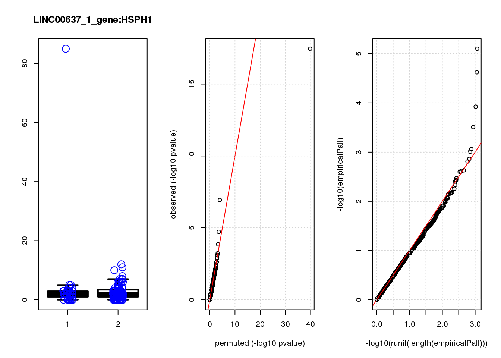

[1] "LINC00637_2_gene_edgeR-qlf_Neg2.Rd"
logFC logCPM F PValue FDR empiricalP empiricalP.FDR #in_real
TP53I3 1.00 6.9 17.0 4.7e-05 0.20 0.00022 0.90 1
COASY -1.20 6.7 13.0 3.3e-04 0.69 0.00054 0.91 2
YWHAB -0.43 8.8 12.0 5.1e-04 0.72 0.00068 0.91 3
PIR -1.40 6.7 11.0 7.3e-04 0.77 0.00087 0.91 4
C15orf40 -0.97 6.7 9.5 2.1e-03 1.00 0.00210 1.00 5
SDHAF1 -0.96 6.7 9.3 2.3e-03 1.00 0.00230 1.00 6
RABGGTB -0.78 7.2 9.3 2.3e-03 1.00 0.00230 1.00 7
PPIL4 -0.80 7.0 8.7 3.1e-03 1.00 0.00300 1.00 8
RBBP6 -0.76 7.0 8.7 3.2e-03 1.00 0.00310 1.00 9
ARHGDIA -0.46 8.3 8.6 3.3e-03 1.00 0.00310 1.00 10
1e-04 NA NA NA NA NA NA NA 1
1e-05 NA NA NA NA NA NA NA 0
1e-06 NA NA NA NA NA NA NA 0
1e-07 NA NA NA NA NA NA NA 0
1e-08 NA NA NA NA NA NA NA 0
1e-09 NA NA NA NA NA NA NA 0
1e-10 NA NA NA NA NA NA NA 0
#in_perm EmpiricalFDR
TP53I3 0.90 0.90
COASY 2.30 1.10
YWHAB 2.90 0.96
PIR 3.60 0.91
C15orf40 8.80 1.80
SDHAF1 9.60 1.60
RABGGTB 9.60 1.40
PPIL4 12.00 1.60
RBBP6 13.00 1.40
ARHGDIA 13.00 1.30
1e-04 1.20 1.20
1e-05 0.50 Inf
1e-06 0.30 Inf
1e-07 0.17 Inf
1e-08 0.13 Inf
1e-09 0.10 Inf
1e-10 0.10 Inf
[1] "LINC00637_3_gene_edgeR-qlf_Neg2.Rd"
logFC logCPM F PValue FDR empiricalP empiricalP.FDR #in_real
MIAT -1.90 7.1 19 1.5e-05 0.063 0.00016 0.52 1
TPM2 1.00 7.2 15 1.4e-04 0.260 0.00041 0.52 2
SMOC1 -1.10 7.0 14 1.9e-04 0.260 0.00045 0.52 3
DIO3 -1.20 7.1 13 3.2e-04 0.310 0.00058 0.52 4
HES6 -1.10 9.0 13 4.0e-04 0.310 0.00071 0.52 5
TNFRSF12A 0.82 7.8 12 4.4e-04 0.310 0.00076 0.52 6
DLL1 -1.50 6.9 12 5.5e-04 0.330 0.00087 0.52 7
CDC25B -0.98 7.0 11 1.2e-03 0.550 0.00150 0.66 8
SAR1A 0.46 7.2 10 1.3e-03 0.550 0.00160 0.66 9
TAGLN3 -1.20 7.1 10 1.3e-03 0.550 0.00160 0.66 10
1e-04 NA NA NA NA NA NA NA 1
1e-05 NA NA NA NA NA NA NA 0
1e-06 NA NA NA NA NA NA NA 0
1e-07 NA NA NA NA NA NA NA 0
1e-08 NA NA NA NA NA NA NA 0
1e-09 NA NA NA NA NA NA NA 0
1e-10 NA NA NA NA NA NA NA 0
#in_perm EmpiricalFDR
MIAT 0.67 0.67
TPM2 1.70 0.87
SMOC1 1.90 0.62
DIO3 2.40 0.61
HES6 3.00 0.59
TNFRSF12A 3.20 0.53
DLL1 3.60 0.52
CDC25B 6.20 0.78
SAR1A 6.60 0.73
TAGLN3 6.70 0.67
1e-04 1.50 1.50
1e-05 0.47 Inf
1e-06 0.30 Inf
1e-07 0.17 Inf
1e-08 0.13 Inf
1e-09 0.10 Inf
1e-10 0.10 Inf
[1] "LOC100507431_1_gene_edgeR-qlf_Neg2.Rd"
logFC logCPM F PValue FDR empiricalP empiricalP.FDR #in_real
CCND2 1.40 7.0 18.0 2.3e-05 0.096 0.00018 0.55 1
TPM2 1.70 7.2 15.0 8.7e-05 0.180 0.00026 0.55 2
C4orf48 -0.96 8.0 13.0 3.2e-04 0.380 0.00057 0.64 3
LMCD1 1.30 6.7 13.0 3.6e-04 0.380 0.00061 0.64 4
TAGLN3 1.50 7.1 12.0 6.7e-04 0.560 0.00100 0.80 5
CRLS1 -1.40 6.9 11.0 1.1e-03 0.650 0.00140 0.80 6
MTA1 -1.30 7.0 11.0 1.1e-03 0.650 0.00140 0.80 7
VGLL4 1.00 6.7 10.0 1.2e-03 0.650 0.00150 0.80 8
TBL1XR1 -1.70 6.7 10.0 1.6e-03 0.740 0.00180 0.84 9
MED11 -1.50 6.7 8.8 3.0e-03 1.000 0.00310 1.00 10
1e-04 NA NA NA NA NA NA NA 2
1e-05 NA NA NA NA NA NA NA 0
1e-06 NA NA NA NA NA NA NA 0
1e-07 NA NA NA NA NA NA NA 0
1e-08 NA NA NA NA NA NA NA 0
1e-09 NA NA NA NA NA NA NA 0
1e-10 NA NA NA NA NA NA NA 0
#in_perm EmpiricalFDR
CCND2 0.730 0.73
TPM2 1.100 0.55
C4orf48 2.400 0.80
LMCD1 2.600 0.64
TAGLN3 4.400 0.87
CRLS1 5.800 0.96
MTA1 5.900 0.85
VGLL4 6.400 0.80
TBL1XR1 7.600 0.84
MED11 13.000 1.30
1e-04 1.200 0.62
1e-05 0.470 Inf
1e-06 0.270 Inf
1e-07 0.170 Inf
1e-08 0.067 Inf
1e-09 0.067 Inf
1e-10 0.067 Inf
[1] "LOC100507431_2_gene_edgeR-qlf_Neg2.Rd"
logFC logCPM F PValue FDR empiricalP empiricalP.FDR #in_real
S100A13 1.20 7.0 24 1.2e-06 0.0049 5.6e-05 0.23 1
GLUL 0.66 8.0 13 4.1e-04 0.4500 5.7e-04 0.41 2
DUSP1 0.96 6.7 12 5.3e-04 0.4500 6.9e-04 0.41 3
KLF6 0.82 7.1 12 5.9e-04 0.4500 7.2e-04 0.41 4
SPARC 0.55 8.6 12 6.0e-04 0.4500 7.3e-04 0.41 5
MZT2B -0.45 9.1 11 7.3e-04 0.4500 8.2e-04 0.41 6
RANGRF -1.00 6.9 11 7.5e-04 0.4500 8.4e-04 0.41 7
CRK 0.56 7.4 11 1.1e-03 0.4500 1.0e-03 0.41 8
ASAH1 0.72 7.0 11 1.1e-03 0.4500 1.1e-03 0.41 9
DHRS7 0.85 6.7 11 1.1e-03 0.4500 1.1e-03 0.41 10
1e-04 NA NA NA NA NA NA NA 1
1e-05 NA NA NA NA NA NA NA 1
1e-06 NA NA NA NA NA NA NA 0
1e-07 NA NA NA NA NA NA NA 0
1e-08 NA NA NA NA NA NA NA 0
1e-09 NA NA NA NA NA NA NA 0
1e-10 NA NA NA NA NA NA NA 0
#in_perm EmpiricalFDR
S100A13 0.230 0.23
GLUL 2.400 1.20
DUSP1 2.900 0.97
KLF6 3.000 0.76
SPARC 3.100 0.61
MZT2B 3.400 0.57
RANGRF 3.500 0.50
CRK 4.200 0.53
ASAH1 4.400 0.49
DHRS7 4.500 0.45
1e-04 1.200 1.20
1e-05 0.400 0.40
1e-06 0.200 Inf
1e-07 0.033 Inf
1e-08 0.033 Inf
1e-09 0.033 Inf
1e-10 0.033 Inf
[1] "LOC100507431_3_gene_edgeR-qlf_Neg2.Rd"
logFC logCPM F PValue FDR empiricalP empiricalP.FDR #in_real
HERPUD1 0.97 7.1 22 3.2e-06 0.0074 8.0e-05 0.20 1
DDIT4 1.00 8.0 22 3.5e-06 0.0074 9.6e-05 0.20 2
ATF5 0.99 7.0 18 2.3e-05 0.0320 1.6e-04 0.22 3
TRIB3 1.00 7.1 15 1.2e-04 0.1300 3.4e-04 0.35 4
WARS 0.67 7.3 13 2.8e-04 0.2300 4.4e-04 0.37 5
CEBPB 0.88 6.9 13 3.7e-04 0.2600 5.3e-04 0.37 6
PSAT1 0.55 8.4 11 7.2e-04 0.4100 8.1e-04 0.44 7
TCEA1 0.40 8.0 11 8.8e-04 0.4100 9.4e-04 0.44 8
HAX1 0.42 7.8 11 8.8e-04 0.4100 9.4e-04 0.44 9
SHMT2 0.60 7.5 11 1.0e-03 0.4200 1.1e-03 0.45 10
1e-04 NA NA NA NA NA NA NA 3
1e-05 NA NA NA NA NA NA NA 2
1e-06 NA NA NA NA NA NA NA 0
1e-07 NA NA NA NA NA NA NA 0
1e-08 NA NA NA NA NA NA NA 0
1e-09 NA NA NA NA NA NA NA 0
1e-10 NA NA NA NA NA NA NA 0
#in_perm EmpiricalFDR
HERPUD1 0.330 0.33
DDIT4 0.400 0.20
ATF5 0.670 0.22
TRIB3 1.400 0.35
WARS 1.800 0.37
CEBPB 2.200 0.37
PSAT1 3.400 0.48
TCEA1 3.900 0.49
HAX1 3.900 0.44
SHMT2 4.500 0.45
1e-04 1.200 0.41
1e-05 0.500 0.25
1e-06 0.200 Inf
1e-07 0.130 Inf
1e-08 0.067 Inf
1e-09 0.067 Inf
1e-10 0.067 Inf
[1] "LOC105376975_1_gene_edgeR-qlf_Neg2.Rd"
logFC logCPM F PValue FDR empiricalP empiricalP.FDR #in_real
NEFM 1.70 7.5 35 4.5e-09 1.9e-05 4.8e-05 0.20 1
FNDC3A -1.30 6.6 14 1.5e-04 2.6e-01 2.9e-04 0.29 2
PSMB7 -0.42 9.2 14 2.3e-04 2.6e-01 3.3e-04 0.29 3
NEFL 0.78 8.4 13 2.8e-04 2.6e-01 3.6e-04 0.29 4
CRABP2 0.92 7.5 13 4.0e-04 2.6e-01 4.8e-04 0.29 5
CTNNA1 -0.77 7.2 12 4.3e-04 2.6e-01 5.3e-04 0.29 6
MGST1 0.72 7.8 12 5.1e-04 2.6e-01 5.9e-04 0.29 7
UQCRFS1 -0.46 8.5 12 5.3e-04 2.6e-01 6.1e-04 0.29 8
RSL1D1 -0.44 9.0 12 5.6e-04 2.6e-01 6.1e-04 0.29 9
MRPS30 -0.86 7.2 12 6.4e-04 2.7e-01 7.3e-04 0.31 10
1e-04 NA NA NA NA NA NA NA 1
1e-05 NA NA NA NA NA NA NA 1
1e-06 NA NA NA NA NA NA NA 1
1e-07 NA NA NA NA NA NA NA 1
1e-08 NA NA NA NA NA NA NA 1
1e-09 NA NA NA NA NA NA NA 0
1e-10 NA NA NA NA NA NA NA 0
#in_perm EmpiricalFDR
NEFM 0.20 0.20
FNDC3A 1.20 0.62
PSMB7 1.40 0.47
NEFL 1.50 0.38
CRABP2 2.00 0.40
CTNNA1 2.20 0.37
MGST1 2.50 0.35
UQCRFS1 2.50 0.32
RSL1D1 2.60 0.29
MRPS30 3.10 0.31
1e-04 1.10 1.10
1e-05 0.53 0.53
1e-06 0.27 0.27
1e-07 0.23 0.23
1e-08 0.23 0.23
1e-09 0.13 Inf
1e-10 0.13 Inf
[1] "LOC105376975_2_gene_edgeR-qlf_Neg2.Rd"
logFC logCPM F PValue FDR empiricalP empiricalP.FDR #in_real
NQO1 -1.60 7.5 16 5.4e-05 0.11 0.00027 0.35 1
MRPS34 0.41 8.4 16 6.5e-05 0.11 0.00030 0.35 2
NAT9 -0.97 6.8 16 7.7e-05 0.11 0.00033 0.35 3
ATF5 -1.40 7.0 14 1.9e-04 0.17 0.00041 0.35 4
FHL1 0.61 7.2 14 2.0e-04 0.17 0.00041 0.35 5
CEBPB -1.40 6.9 12 4.2e-04 0.29 0.00062 0.43 6
WARS -0.83 7.3 11 8.8e-04 0.46 0.00120 0.51 7
TCAF1 -0.87 6.7 11 9.0e-04 0.46 0.00120 0.51 8
TXNRD1 -0.96 7.1 10 1.3e-03 0.46 0.00160 0.51 9
CTSD -0.75 7.3 10 1.3e-03 0.46 0.00160 0.51 10
1e-04 NA NA NA NA NA NA NA 3
1e-05 NA NA NA NA NA NA NA 0
1e-06 NA NA NA NA NA NA NA 0
1e-07 NA NA NA NA NA NA NA 0
1e-08 NA NA NA NA NA NA NA 0
1e-09 NA NA NA NA NA NA NA 0
1e-10 NA NA NA NA NA NA NA 0
#in_perm EmpiricalFDR
NQO1 1.100 1.10
MRPS34 1.300 0.63
NAT9 1.400 0.46
ATF5 1.700 0.42
FHL1 1.700 0.35
CEBPB 2.600 0.43
WARS 4.900 0.70
TCAF1 5.000 0.62
TXNRD1 6.800 0.76
CTSD 6.800 0.68
1e-04 1.400 0.48
1e-05 0.570 Inf
1e-06 0.330 Inf
1e-07 0.200 Inf
1e-08 0.170 Inf
1e-09 0.067 Inf
1e-10 0.033 Inf
[1] "LOC105376975_3_gene_edgeR-qlf_Neg2.Rd"
logFC logCPM F PValue FDR empiricalP empiricalP.FDR #in_real
ACBD3 1.70 6.7 14.0 0.00021 0.78 0.00041 0.86 1
FNBP4 -3.40 6.8 12.0 0.00048 0.78 0.00071 0.86 2
PLGRKT -3.40 6.8 11.0 0.00076 0.78 0.00100 0.86 3
KIF5C -2.40 7.3 10.0 0.00140 0.78 0.00170 0.86 4
RIF1 -3.30 6.7 10.0 0.00150 0.78 0.00170 0.86 5
NOP16 1.30 7.0 9.8 0.00180 0.78 0.00200 0.86 6
PPP2R1B -3.10 6.7 9.7 0.00190 0.78 0.00210 0.86 7
DAD1 0.87 8.3 9.6 0.00190 0.78 0.00210 0.86 8
RQCD1 -3.10 6.7 9.6 0.00200 0.78 0.00220 0.86 9
OSBPL1A -3.10 6.7 9.5 0.00200 0.78 0.00220 0.86 10
1e-04 NA NA NA NA NA NA NA 0
1e-05 NA NA NA NA NA NA NA 0
1e-06 NA NA NA NA NA NA NA 0
1e-07 NA NA NA NA NA NA NA 0
1e-08 NA NA NA NA NA NA NA 0
1e-09 NA NA NA NA NA NA NA 0
1e-10 NA NA NA NA NA NA NA 0
#in_perm EmpiricalFDR
ACBD3 1.700 1.70
FNBP4 3.000 1.50
PLGRKT 4.200 1.40
KIF5C 7.000 1.80
RIF1 7.100 1.40
NOP16 8.300 1.40
PPP2R1B 8.600 1.20
DAD1 8.900 1.10
RQCD1 9.200 1.00
OSBPL1A 9.400 0.94
1e-04 1.200 Inf
1e-05 0.470 Inf
1e-06 0.200 Inf
1e-07 0.200 Inf
1e-08 0.130 Inf
1e-09 0.130 Inf
1e-10 0.067 Inf
[1] "miR137_1_gene_edgeR-qlf_Neg2.Rd"
logFC logCPM F PValue FDR empiricalP empiricalP.FDR #in_real
YWHAZ -0.48 8.3 13.0 0.00027 0.98 0.00033 0.84 1
DPH2 -0.85 6.9 11.0 0.00072 0.98 0.00077 0.84 2
APMAP -0.58 7.4 11.0 0.00110 0.98 0.00096 0.84 3
CORO1C -0.90 6.7 11.0 0.00110 0.98 0.00098 0.84 4
PTBP1 -0.43 8.0 10.0 0.00160 0.98 0.00130 0.84 5
PSMB6 -0.32 9.0 9.2 0.00250 0.98 0.00210 0.84 6
NEAT1 -0.99 8.6 8.7 0.00320 0.98 0.00270 0.84 7
ID3 0.79 8.0 8.6 0.00340 0.98 0.00280 0.84 8
ATP5B -0.28 9.5 8.4 0.00370 0.98 0.00300 0.84 9
NRM -0.82 6.7 8.3 0.00390 0.98 0.00310 0.84 10
1e-04 NA NA NA NA NA NA NA 0
1e-05 NA NA NA NA NA NA NA 0
1e-06 NA NA NA NA NA NA NA 0
1e-07 NA NA NA NA NA NA NA 0
1e-08 NA NA NA NA NA NA NA 0
1e-09 NA NA NA NA NA NA NA 0
1e-10 NA NA NA NA NA NA NA 0
#in_perm EmpiricalFDR
YWHAZ 1.400 1.4
DPH2 3.200 1.6
APMAP 4.000 1.3
CORO1C 4.100 1.0
PTBP1 5.400 1.1
PSMB6 8.700 1.4
NEAT1 11.000 1.6
ID3 12.000 1.5
ATP5B 13.000 1.4
NRM 13.000 1.3
1e-04 0.900 Inf
1e-05 0.400 Inf
1e-06 0.200 Inf
1e-07 0.067 Inf
1e-08 0.067 Inf
1e-09 0.067 Inf
1e-10 0.033 Inf
[1] "miR137_2_gene_edgeR-qlf_Neg2.Rd"
logFC logCPM F PValue FDR empiricalP empiricalP.FDR #in_real
SLC4A1AP -1.60 6.6 17.0 3.2e-05 0.14 0.00014 0.60 1
PRKAB1 -1.10 6.8 11.0 7.3e-04 0.99 0.00096 0.92 2
CDC23 -1.10 6.7 11.0 9.5e-04 0.99 0.00110 0.92 3
ARID1B -1.10 6.6 10.0 1.5e-03 0.99 0.00170 0.92 4
RNF130 0.51 7.5 9.5 2.0e-03 0.99 0.00210 0.92 5
HIRIP3 -0.92 7.0 9.4 2.2e-03 0.99 0.00220 0.92 6
MTX2 -0.85 6.9 9.2 2.5e-03 0.99 0.00240 0.92 7
TRIM69 0.80 6.6 9.2 2.5e-03 0.99 0.00240 0.92 8
NDUFA9 -0.66 7.6 9.1 2.6e-03 0.99 0.00250 0.92 9
DYNC1LI2 -0.60 7.5 8.7 3.2e-03 0.99 0.00300 0.92 10
1e-04 NA NA NA NA NA NA NA 1
1e-05 NA NA NA NA NA NA NA 0
1e-06 NA NA NA NA NA NA NA 0
1e-07 NA NA NA NA NA NA NA 0
1e-08 NA NA NA NA NA NA NA 0
1e-09 NA NA NA NA NA NA NA 0
1e-10 NA NA NA NA NA NA NA 0
#in_perm EmpiricalFDR
SLC4A1AP 0.600 0.6
PRKAB1 4.000 2.0
CDC23 4.800 1.6
ARID1B 7.000 1.8
RNF130 8.900 1.8
HIRIP3 9.400 1.6
MTX2 10.000 1.4
TRIM69 10.000 1.3
NDUFA9 11.000 1.2
DYNC1LI2 13.000 1.3
1e-04 1.100 1.1
1e-05 0.430 Inf
1e-06 0.300 Inf
1e-07 0.170 Inf
1e-08 0.130 Inf
1e-09 0.067 Inf
1e-10 0.033 Inf
[1] "miR137_3_gene_edgeR-qlf_Neg2.Rd"
logFC logCPM F PValue FDR empiricalP empiricalP.FDR #in_real
NDUFB11 -0.28 9.2 14.0 0.00021 0.48 0.00042 0.84 1
TUBB2A 0.51 8.9 14.0 0.00023 0.48 0.00043 0.84 2
DST 0.67 6.7 12.0 0.00046 0.64 0.00060 0.84 3
PDLIM7 0.40 8.4 11.0 0.00110 1.00 0.00130 0.96 4
PTX3 0.62 6.7 10.0 0.00120 1.00 0.00130 0.96 5
PRPF6 -0.53 7.2 9.5 0.00210 1.00 0.00220 0.96 6
PFKP 0.60 6.8 9.4 0.00220 1.00 0.00230 0.96 7
CAST 0.58 6.7 8.7 0.00310 1.00 0.00300 0.96 8
BRD2 -0.40 7.7 8.5 0.00360 1.00 0.00330 0.96 9
ING2 -0.64 6.7 8.3 0.00410 1.00 0.00370 0.96 10
1e-04 NA NA NA NA NA NA NA 0
1e-05 NA NA NA NA NA NA NA 0
1e-06 NA NA NA NA NA NA NA 0
1e-07 NA NA NA NA NA NA NA 0
1e-08 NA NA NA NA NA NA NA 0
1e-09 NA NA NA NA NA NA NA 0
1e-10 NA NA NA NA NA NA NA 0
#in_perm EmpiricalFDR
NDUFB11 1.800 1.80
TUBB2A 1.800 0.90
DST 2.500 0.84
PDLIM7 5.300 1.30
PTX3 5.500 1.10
PRPF6 9.200 1.50
PFKP 9.600 1.40
CAST 12.000 1.50
BRD2 14.000 1.50
ING2 16.000 1.60
1e-04 1.000 Inf
1e-05 0.400 Inf
1e-06 0.230 Inf
1e-07 0.130 Inf
1e-08 0.067 Inf
1e-09 0.033 Inf
1e-10 0.033 Inf
[1] "NAB2_1_gene_edgeR-qlf_Neg2.Rd"
logFC logCPM F PValue FDR empiricalP empiricalP.FDR
RP11-143E21.7 0.82 6.8 13.0 0.00028 0.58 0.00049 0.74
PRKAB1 -1.20 6.8 13.0 0.00028 0.58 0.00049 0.74
EIF2B2 -0.90 7.0 12.0 0.00055 0.77 0.00067 0.74
EEF2KMT -0.97 6.8 11.0 0.00083 0.87 0.00084 0.74
WDR18 -0.65 7.4 11.0 0.00120 0.95 0.00110 0.74
NSRP1 -0.69 7.3 9.3 0.00230 0.95 0.00200 0.74
CCT2 -0.32 9.1 9.0 0.00280 0.95 0.00230 0.74
AHSA1 -0.64 7.2 8.8 0.00300 0.95 0.00250 0.74
DOLPP1 -0.90 6.7 8.7 0.00320 0.95 0.00260 0.74
ACTA2 -1.00 7.4 8.6 0.00340 0.95 0.00280 0.74
1e-04 NA NA NA NA NA NA NA
1e-05 NA NA NA NA NA NA NA
1e-06 NA NA NA NA NA NA NA
1e-07 NA NA NA NA NA NA NA
1e-08 NA NA NA NA NA NA NA
1e-09 NA NA NA NA NA NA NA
1e-10 NA NA NA NA NA NA NA
#in_real #in_perm EmpiricalFDR
RP11-143E21.7 1 2.000 2.00
PRKAB1 2 2.000 1.00
EIF2B2 3 2.800 0.93
EEF2KMT 4 3.500 0.88
WDR18 5 4.400 0.89
NSRP1 6 8.300 1.40
CCT2 7 9.500 1.40
AHSA1 8 10.000 1.30
DOLPP1 9 11.000 1.20
ACTA2 10 12.000 1.20
1e-04 0 1.200 Inf
1e-05 0 0.400 Inf
1e-06 0 0.270 Inf
1e-07 0 0.130 Inf
1e-08 0 0.067 Inf
1e-09 0 0.067 Inf
1e-10 0 0.067 Inf
[1] "NAB2_2_gene_edgeR-qlf_Neg2.Rd"
logFC logCPM F PValue FDR empiricalP empiricalP.FDR
CLU 1.80 7.4 67 4.3e-16 1.8e-12 2.4e-05 0.10
NQO1 1.40 7.5 21 4.1e-06 8.5e-03 2.0e-04 0.17
FTH1 0.93 12.0 19 1.3e-05 1.6e-02 2.4e-04 0.17
RP11-14N7.2 1.00 7.3 19 1.5e-05 1.6e-02 2.5e-04 0.17
IFI27L1 1.00 6.6 18 2.7e-05 1.8e-02 3.0e-04 0.17
GAP43 1.20 8.2 18 2.8e-05 1.8e-02 3.2e-04 0.17
CTD-2006C1.2 1.10 6.9 17 3.0e-05 1.8e-02 3.3e-04 0.17
TUBB2B 0.61 11.0 17 4.6e-05 2.4e-02 3.6e-04 0.17
SQSTM1 1.10 8.0 16 6.2e-05 2.9e-02 3.7e-04 0.17
PTN 1.10 7.9 15 1.2e-04 5.2e-02 4.5e-04 0.19
1e-04 NA NA NA NA NA NA NA
1e-05 NA NA NA NA NA NA NA
1e-06 NA NA NA NA NA NA NA
1e-07 NA NA NA NA NA NA NA
1e-08 NA NA NA NA NA NA NA
1e-09 NA NA NA NA NA NA NA
1e-10 NA NA NA NA NA NA NA
#in_real #in_perm EmpiricalFDR
CLU 1 0.10 0.10
NQO1 2 0.83 0.42
FTH1 3 1.00 0.33
RP11-14N7.2 4 1.00 0.26
IFI27L1 5 1.30 0.25
GAP43 6 1.30 0.22
CTD-2006C1.2 7 1.40 0.20
TUBB2B 8 1.50 0.19
SQSTM1 9 1.50 0.17
PTN 10 1.90 0.19
1e-04 9 1.70 0.19
1e-05 2 0.93 0.47
1e-06 1 0.57 0.57
1e-07 1 0.37 0.37
1e-08 1 0.30 0.30
1e-09 1 0.23 0.23
1e-10 1 0.20 0.20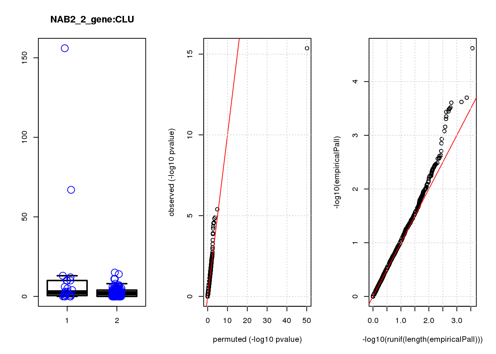
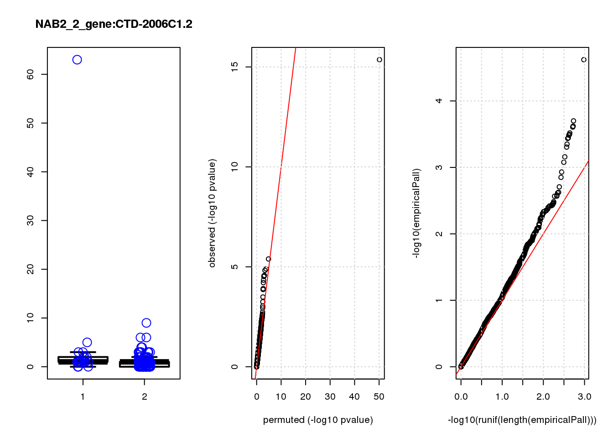
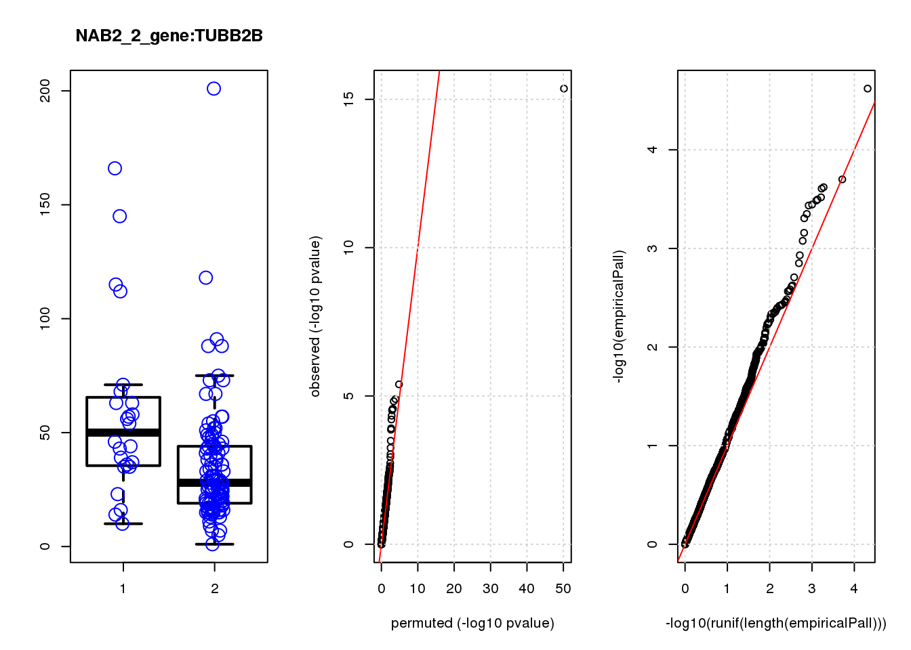
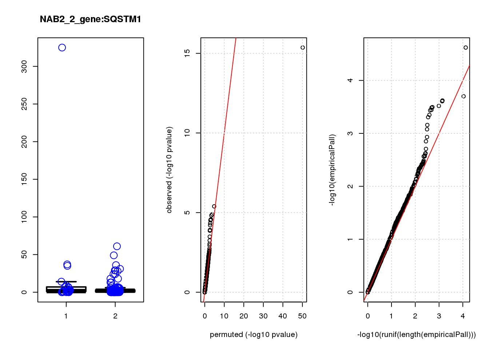
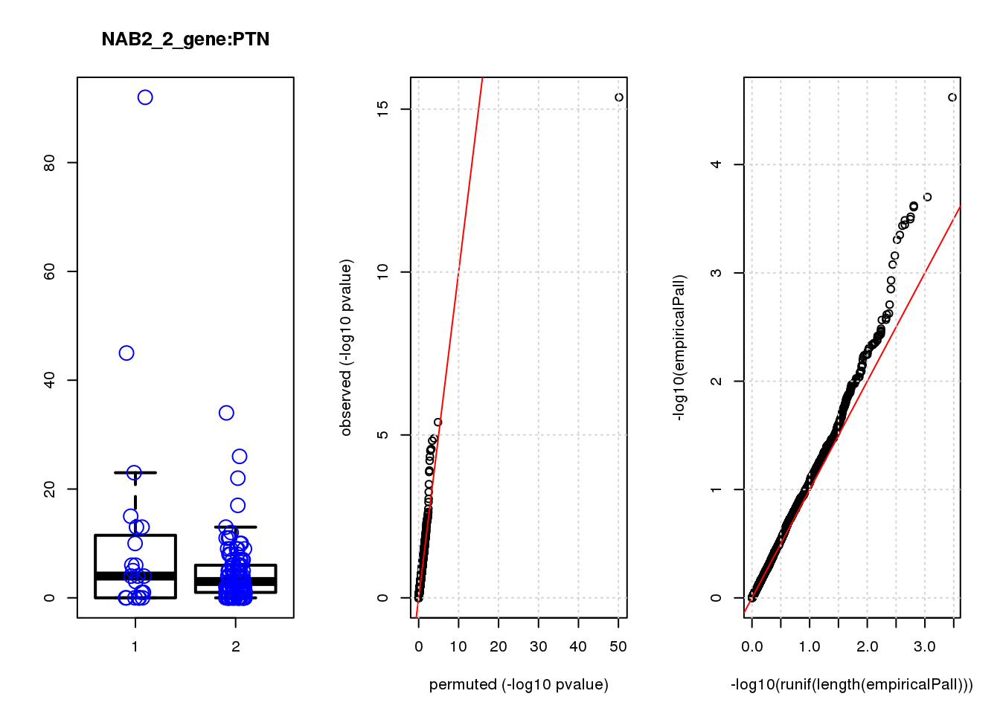
[1] "NAB2_3_gene_edgeR-qlf_Neg2.Rd"
logFC logCPM F PValue FDR empiricalP empiricalP.FDR #in_real
TP53 -1.00 7.0 11.0 0.00081 1 0.00083 0.96 1
STRA13 -0.64 8.2 11.0 0.00100 1 0.00096 0.96 2
GLUL 0.65 8.0 11.0 0.00110 1 0.00100 0.96 3
NIPSNAP1 0.65 7.3 10.0 0.00150 1 0.00130 0.96 4
NUP93 -1.00 6.8 8.9 0.00290 1 0.00230 0.96 5
FAM120AOS -1.00 6.8 8.7 0.00320 1 0.00260 0.96 6
PEX2 -1.00 6.7 8.3 0.00400 1 0.00320 0.96 7
HCCS 0.71 6.7 7.5 0.00620 1 0.00470 0.96 8
SRSF11 -0.41 8.3 7.4 0.00660 1 0.00490 0.96 9
C7orf49 -0.92 6.8 7.3 0.00680 1 0.00510 0.96 10
1e-04 NA NA NA NA NA NA NA 0
1e-05 NA NA NA NA NA NA NA 0
1e-06 NA NA NA NA NA NA NA 0
1e-07 NA NA NA NA NA NA NA 0
1e-08 NA NA NA NA NA NA NA 0
1e-09 NA NA NA NA NA NA NA 0
1e-10 NA NA NA NA NA NA NA 0
#in_perm EmpiricalFDR
TP53 3.500 3.5
STRA13 4.000 2.0
GLUL 4.300 1.4
NIPSNAP1 5.500 1.4
NUP93 9.600 1.9
FAM120AOS 11.000 1.8
PEX2 13.000 1.9
HCCS 20.000 2.4
SRSF11 21.000 2.3
C7orf49 21.000 2.1
1e-04 1.100 Inf
1e-05 0.700 Inf
1e-06 0.330 Inf
1e-07 0.200 Inf
1e-08 0.130 Inf
1e-09 0.100 Inf
1e-10 0.067 Inf
[1] "neg_CTRL_00018_gene_edgeR-qlf_Neg2.Rd"
logFC logCPM F PValue FDR empiricalP empiricalP.FDR #in_real
FTL -2.00 13.0 14 0.00016 0.43 0.00053 0.52 1
BRI3 -0.97 8.5 13 0.00039 0.43 0.00078 0.52 2
GAP43 -2.20 8.2 12 0.00047 0.43 0.00085 0.52 3
MSH2 1.10 6.7 12 0.00057 0.43 0.00093 0.52 4
YWHAG -1.10 7.3 12 0.00062 0.43 0.00100 0.52 5
TXN2 -0.65 8.1 11 0.00094 0.43 0.00140 0.52 6
BIN3 0.97 6.7 11 0.00098 0.43 0.00150 0.52 7
MBD3 -1.40 6.9 11 0.00120 0.43 0.00160 0.52 8
FTH1 -1.00 12.0 10 0.00120 0.43 0.00170 0.52 9
LMCD1 1.20 6.7 10 0.00130 0.43 0.00170 0.52 10
1e-04 NA NA NA NA NA NA NA 0
1e-05 NA NA NA NA NA NA NA 0
1e-06 NA NA NA NA NA NA NA 0
1e-07 NA NA NA NA NA NA NA 0
1e-08 NA NA NA NA NA NA NA 0
1e-09 NA NA NA NA NA NA NA 0
1e-10 NA NA NA NA NA NA NA 0
#in_perm EmpiricalFDR
FTL 2.200 2.20
BRI3 3.300 1.60
GAP43 3.600 1.20
MSH2 3.900 0.98
YWHAG 4.200 0.83
TXN2 5.800 0.97
BIN3 6.100 0.87
MBD3 6.800 0.85
FTH1 6.900 0.77
LMCD1 7.100 0.71
1e-04 1.700 Inf
1e-05 0.700 Inf
1e-06 0.430 Inf
1e-07 0.270 Inf
1e-08 0.170 Inf
1e-09 0.033 Inf
1e-10 0.000 NaN
[1] "neg_CTRL_00022_gene_edgeR-qlf_Neg2.Rd"
logFC logCPM F PValue FDR empiricalP empiricalP.FDR #in_real
NEFM 1.30 7.5 15.0 0.00014 0.43 0.00040 0.93 1
PDLIM2 -1.10 7.5 14.0 0.00021 0.43 0.00046 0.93 2
GDI1 0.68 7.4 11.0 0.00073 0.79 0.00100 0.93 3
CHCHD6 0.71 6.9 10.0 0.00130 0.79 0.00160 0.93 4
USP11 0.66 7.3 10.0 0.00140 0.79 0.00170 0.93 5
OLA1 0.39 8.4 10.0 0.00140 0.79 0.00170 0.93 6
LSM10 -0.76 7.4 10.0 0.00150 0.79 0.00170 0.93 7
MPZL1 -1.10 6.8 10.0 0.00150 0.79 0.00180 0.93 8
OSER1 0.73 6.9 8.6 0.00340 0.99 0.00340 0.99 9
NINJ1 0.73 6.8 8.4 0.00370 0.99 0.00380 0.99 10
1e-04 NA NA NA NA NA NA NA 0
1e-05 NA NA NA NA NA NA NA 0
1e-06 NA NA NA NA NA NA NA 0
1e-07 NA NA NA NA NA NA NA 0
1e-08 NA NA NA NA NA NA NA 0
1e-09 NA NA NA NA NA NA NA 0
1e-10 NA NA NA NA NA NA NA 0
#in_perm EmpiricalFDR
NEFM 1.70 1.70
PDLIM2 1.90 0.97
GDI1 4.40 1.50
CHCHD6 6.70 1.70
USP11 7.10 1.40
OLA1 7.10 1.20
LSM10 7.10 1.00
MPZL1 7.50 0.93
OSER1 14.00 1.60
NINJ1 16.00 1.60
1e-04 1.40 Inf
1e-05 0.63 Inf
1e-06 0.33 Inf
1e-07 0.20 Inf
1e-08 0.13 Inf
1e-09 0.10 Inf
1e-10 0.10 Inf
[1] "neg_EGFP_1_gene_edgeR-qlf_Neg2.Rd"
logFC logCPM F PValue FDR empiricalP empiricalP.FDR #in_real
CHCHD10 1.4 7.8 15.0 0.00013 0.54 0.00015 0.55 1
ROCK1 -3.4 6.8 11.0 0.00082 0.65 0.00065 0.55 2
ID3 2.1 8.0 11.0 0.00095 0.65 0.00072 0.55 3
PPP1R1A -3.9 7.0 9.9 0.00170 0.65 0.00130 0.55 4
IRX5 -3.4 6.8 9.7 0.00190 0.65 0.00150 0.55 5
SRP72 -1.3 8.1 9.6 0.00200 0.65 0.00150 0.55 6
COQ4 1.1 7.3 9.5 0.00210 0.65 0.00170 0.55 7
ITSN1 -2.7 7.1 9.3 0.00230 0.65 0.00190 0.55 8
MYEF2 -3.2 6.7 9.2 0.00250 0.65 0.00200 0.55 9
RUFY1 -3.1 6.7 9.2 0.00250 0.65 0.00200 0.55 10
1e-04 NA NA NA NA NA NA NA 0
1e-05 NA NA NA NA NA NA NA 0
1e-06 NA NA NA NA NA NA NA 0
1e-07 NA NA NA NA NA NA NA 0
1e-08 NA NA NA NA NA NA NA 0
1e-09 NA NA NA NA NA NA NA 0
1e-10 NA NA NA NA NA NA NA 0
#in_perm EmpiricalFDR
CHCHD10 0.630 0.63
ROCK1 2.700 1.40
ID3 3.000 1.00
PPP1R1A 5.500 1.40
IRX5 6.100 1.20
SRP72 6.300 1.00
COQ4 7.000 1.00
ITSN1 7.900 0.98
MYEF2 8.400 0.94
RUFY1 8.600 0.86
1e-04 0.570 Inf
1e-05 0.170 Inf
1e-06 0.033 Inf
1e-07 0.033 Inf
1e-08 0.033 Inf
1e-09 0.000 NaN
1e-10 0.000 NaN
[1] "neg_EGFP_2_gene_edgeR-qlf_Neg2.Rd"
logFC logCPM F PValue FDR empiricalP empiricalP.FDR #in_real
UBE2E2 -1.50 6.6 15 0.00013 0.29 0.00023 0.42 1
TAX1BP1 -0.95 7.4 14 0.00020 0.29 0.00032 0.42 2
SYMPK -1.40 6.7 14 0.00021 0.29 0.00034 0.42 3
NEFM -2.00 7.5 12 0.00049 0.42 0.00059 0.42 4
C19orf10 -0.66 8.5 12 0.00051 0.42 0.00060 0.42 5
RPS19BP1 -0.52 8.5 11 0.00072 0.43 0.00074 0.42 6
RNF181 -0.72 7.8 11 0.00086 0.43 0.00090 0.42 7
APOPT1 -0.80 7.3 11 0.00096 0.43 0.00098 0.42 8
SNAPC2 -1.00 7.0 11 0.00110 0.43 0.00120 0.42 9
CLTA -0.45 9.0 10 0.00120 0.43 0.00120 0.42 10
1e-04 NA NA NA NA NA NA NA 0
1e-05 NA NA NA NA NA NA NA 0
1e-06 NA NA NA NA NA NA NA 0
1e-07 NA NA NA NA NA NA NA 0
1e-08 NA NA NA NA NA NA NA 0
1e-09 NA NA NA NA NA NA NA 0
1e-10 NA NA NA NA NA NA NA 0
#in_perm EmpiricalFDR
UBE2E2 0.970 0.97
TAX1BP1 1.300 0.67
SYMPK 1.400 0.48
NEFM 2.500 0.62
C19orf10 2.500 0.50
RPS19BP1 3.100 0.52
RNF181 3.800 0.54
APOPT1 4.100 0.51
SNAPC2 4.900 0.54
CLTA 5.200 0.52
1e-04 0.870 Inf
1e-05 0.430 Inf
1e-06 0.270 Inf
1e-07 0.200 Inf
1e-08 0.100 Inf
1e-09 0.033 Inf
1e-10 0.033 Inf
[1] "neg_EGFP_3_gene_edgeR-qlf_Neg2.Rd"
logFC logCPM F PValue FDR empiricalP empiricalP.FDR
ARF4 0.68 8.3 20.0 6.6e-06 0.028 0.00008 0.33
NDC80 -1.30 6.7 11.0 9.2e-04 1.000 0.00092 0.97
PRPF38B -0.64 7.4 11.0 1.2e-03 1.000 0.00120 0.97
ATP6AP2 0.65 6.9 10.0 1.3e-03 1.000 0.00130 0.97
RP11-14N7.2 0.71 7.3 10.0 1.6e-03 1.000 0.00150 0.97
THG1L -0.80 6.9 9.8 1.8e-03 1.000 0.00170 0.97
MVK 0.68 7.0 9.5 2.1e-03 1.000 0.00200 0.97
ZNF706 -0.44 8.1 9.5 2.1e-03 1.000 0.00200 0.97
ZNF512 -0.93 6.7 8.9 2.8e-03 1.000 0.00260 0.97
CCND3 0.71 6.9 8.7 3.1e-03 1.000 0.00270 0.97
1e-04 NA NA NA NA NA NA NA
1e-05 NA NA NA NA NA NA NA
1e-06 NA NA NA NA NA NA NA
1e-07 NA NA NA NA NA NA NA
1e-08 NA NA NA NA NA NA NA
1e-09 NA NA NA NA NA NA NA
1e-10 NA NA NA NA NA NA NA
#in_real #in_perm EmpiricalFDR
ARF4 1 0.330 0.33
NDC80 2 3.800 1.90
PRPF38B 3 5.000 1.70
ATP6AP2 4 5.300 1.30
RP11-14N7.2 5 6.200 1.20
THG1L 6 7.200 1.20
MVK 7 8.400 1.20
ZNF706 8 8.400 1.00
ZNF512 9 11.000 1.20
CCND3 10 11.000 1.10
1e-04 1 1.000 1.00
1e-05 1 0.370 0.37
1e-06 0 0.130 Inf
1e-07 0 0.067 Inf
1e-08 0 0.067 Inf
1e-09 0 0.000 NaN
1e-10 0 0.000 NaN
[1] "NGEF_1_gene_edgeR-qlf_Neg2.Rd"
logFC logCPM F PValue FDR empiricalP empiricalP.FDR #in_real
SKP1 -0.73 9.0 15.0 0.00014 0.58 0.00050 0.69 1
HSD17B10 -0.94 8.0 12.0 0.00055 0.60 0.00098 0.69 2
KIFC1 1.30 6.7 11.0 0.00110 0.60 0.00160 0.69 3
PHLDA3 -2.00 7.9 11.0 0.00110 0.60 0.00160 0.69 4
MRPL49 -1.50 7.4 11.0 0.00120 0.60 0.00160 0.69 5
POMP -0.59 9.3 10.0 0.00140 0.60 0.00180 0.69 6
TMEM167A -1.00 7.6 10.0 0.00140 0.60 0.00180 0.69 7
CCDC14 1.10 6.8 10.0 0.00150 0.60 0.00190 0.69 8
DEF8 -1.30 7.4 9.9 0.00170 0.60 0.00210 0.69 9
APRT -0.87 8.3 9.7 0.00190 0.60 0.00220 0.69 10
1e-04 NA NA NA NA NA NA NA 0
1e-05 NA NA NA NA NA NA NA 0
1e-06 NA NA NA NA NA NA NA 0
1e-07 NA NA NA NA NA NA NA 0
1e-08 NA NA NA NA NA NA NA 0
1e-09 NA NA NA NA NA NA NA 0
1e-10 NA NA NA NA NA NA NA 0
#in_perm EmpiricalFDR
SKP1 2.100 2.10
HSD17B10 4.100 2.00
KIFC1 6.600 2.20
PHLDA3 6.700 1.70
MRPL49 6.800 1.40
POMP 7.600 1.30
TMEM167A 7.700 1.10
CCDC14 7.900 0.99
DEF8 8.600 0.96
APRT 9.300 0.93
1e-04 1.900 Inf
1e-05 1.100 Inf
1e-06 0.570 Inf
1e-07 0.330 Inf
1e-08 0.300 Inf
1e-09 0.100 Inf
1e-10 0.067 Inf
[1] "NGEF_2_gene_edgeR-qlf_Neg2.Rd"
logFC logCPM F PValue FDR empiricalP empiricalP.FDR #in_real
EMG1 1.8 7.6 11.0 0.00088 1 0.0011 0.99 1
GLOD4 1.5 7.4 9.7 0.00190 1 0.0018 0.99 2
TMCO1 -2.9 7.8 9.6 0.00200 1 0.0019 0.99 3
KDELR1 -2.2 8.2 8.8 0.00300 1 0.0026 0.99 4
UBA1 -4.3 7.2 8.6 0.00350 1 0.0029 0.99 5
AURKB 2.2 7.3 8.4 0.00380 1 0.0031 0.99 6
SGO2 2.3 6.8 8.2 0.00410 1 0.0033 0.99 7
REEP4 2.0 6.7 8.0 0.00480 1 0.0037 0.99 8
AKR7A2 -4.3 7.2 7.8 0.00540 1 0.0041 0.99 9
CDCA3 2.3 6.8 7.5 0.00620 1 0.0047 0.99 10
1e-04 NA NA NA NA NA NA NA 0
1e-05 NA NA NA NA NA NA NA 0
1e-06 NA NA NA NA NA NA NA 0
1e-07 NA NA NA NA NA NA NA 0
1e-08 NA NA NA NA NA NA NA 0
1e-09 NA NA NA NA NA NA NA 0
1e-10 NA NA NA NA NA NA NA 0
#in_perm EmpiricalFDR
EMG1 4.70 4.7
GLOD4 7.60 3.8
TMCO1 7.80 2.6
KDELR1 11.00 2.7
UBA1 12.00 2.4
AURKB 13.00 2.2
SGO2 14.00 2.0
REEP4 15.00 1.9
AKR7A2 17.00 1.9
CDCA3 20.00 2.0
1e-04 2.00 Inf
1e-05 1.10 Inf
1e-06 0.67 Inf
1e-07 0.47 Inf
1e-08 0.27 Inf
1e-09 0.20 Inf
1e-10 0.13 Inf
[1] "PBRM1_1_gene_edgeR-qlf_Neg2.Rd"
logFC logCPM F PValue FDR empiricalP empiricalP.FDR
CDC25B 2.5 7.0 20.0 6.7e-06 0.028 6.4e-05 0.20
RP11-339B21.12 2.4 6.8 18.0 1.8e-05 0.037 9.6e-05 0.20
NDC80 2.2 6.7 14.0 1.6e-04 0.230 3.3e-04 0.34
DLL1 2.6 6.9 13.0 2.6e-04 0.230 4.1e-04 0.34
PLK1 2.3 7.5 13.0 2.8e-04 0.230 4.3e-04 0.34
YWHAB -1.5 8.8 13.0 3.3e-04 0.230 4.9e-04 0.34
JUN 1.7 7.9 12.0 6.3e-04 0.380 7.4e-04 0.44
ELAVL1 -1.5 8.1 10.0 1.4e-03 0.730 1.3e-03 0.70
PTTG1 1.8 8.5 9.9 1.6e-03 0.730 1.5e-03 0.70
DLGAP5 1.9 6.7 9.3 2.2e-03 0.730 2.2e-03 0.70
1e-04 NA NA NA NA NA NA NA
1e-05 NA NA NA NA NA NA NA
1e-06 NA NA NA NA NA NA NA
1e-07 NA NA NA NA NA NA NA
1e-08 NA NA NA NA NA NA NA
1e-09 NA NA NA NA NA NA NA
1e-10 NA NA NA NA NA NA NA
#in_real #in_perm EmpiricalFDR
CDC25B 1 0.270 0.27
RP11-339B21.12 2 0.400 0.20
NDC80 3 1.400 0.47
DLL1 4 1.700 0.43
PLK1 5 1.800 0.36
YWHAB 6 2.000 0.34
JUN 7 3.100 0.44
ELAVL1 8 5.600 0.70
PTTG1 9 6.300 0.70
DLGAP5 10 9.200 0.92
1e-04 2 1.000 0.52
1e-05 1 0.330 0.33
1e-06 0 0.130 Inf
1e-07 0 0.033 Inf
1e-08 0 0.000 NaN
1e-09 0 0.000 NaN
1e-10 0 0.000 NaN
[1] "PBRM1_2_gene_edgeR-qlf_Neg2.Rd"
logFC logCPM F PValue FDR empiricalP empiricalP.FDR
RP4-758J18.2 -2.4 6.7 14.0 0.00019 0.68 0.00026 0.66
TFPT -2.1 6.8 12.0 0.00049 0.68 0.00049 0.66
AZI2 -1.8 6.8 11.0 0.00078 0.68 0.00074 0.66
IFITM3 1.4 8.6 11.0 0.00079 0.68 0.00074 0.66
TMEM14A 1.1 6.8 11.0 0.00093 0.68 0.00091 0.66
INTU 1.2 6.8 11.0 0.00098 0.68 0.00095 0.66
ILKAP -1.6 6.8 10.0 0.00150 0.85 0.00140 0.72
FAM195A -2.1 6.7 9.8 0.00180 0.85 0.00150 0.72
C19orf24 -1.4 7.1 9.6 0.00200 0.85 0.00180 0.72
TPM2 1.5 7.2 9.5 0.00200 0.85 0.00180 0.72
1e-04 NA NA NA NA NA NA NA
1e-05 NA NA NA NA NA NA NA
1e-06 NA NA NA NA NA NA NA
1e-07 NA NA NA NA NA NA NA
1e-08 NA NA NA NA NA NA NA
1e-09 NA NA NA NA NA NA NA
1e-10 NA NA NA NA NA NA NA
#in_real #in_perm EmpiricalFDR
RP4-758J18.2 1 1.100 1.10
TFPT 2 2.000 1.00
AZI2 3 3.100 1.00
IFITM3 4 3.100 0.77
TMEM14A 5 3.800 0.76
INTU 6 4.000 0.66
ILKAP 7 5.700 0.82
FAM195A 8 6.300 0.79
C19orf24 9 7.500 0.83
TPM2 10 7.500 0.75
1e-04 0 0.870 Inf
1e-05 0 0.370 Inf
1e-06 0 0.200 Inf
1e-07 0 0.130 Inf
1e-08 0 0.100 Inf
1e-09 0 0.033 Inf
1e-10 0 0.033 Inf
[1] "PBRM1_3_gene_edgeR-qlf_Neg2.Rd"
logFC logCPM F PValue FDR empiricalP empiricalP.FDR #in_real
TPM2 3.5 7.2 33 9.4e-09 3.9e-05 0.00004 0.17 1
SPARC 1.5 8.5 18 1.8e-05 3.8e-02 0.00029 0.32 2
HDAC2 -2.1 8.6 17 3.2e-05 4.5e-02 0.00034 0.32 3
HEBP1 2.0 6.8 16 6.7e-05 6.9e-02 0.00039 0.32 4
CCND2 2.2 7.0 14 2.4e-04 2.0e-01 0.00053 0.32 5
LRRC47 -4.4 7.3 13 3.1e-04 2.1e-01 0.00058 0.32 6
COPS3 -2.3 7.9 12 4.1e-04 2.5e-01 0.00067 0.32 7
SBNO1 -4.1 7.1 12 5.7e-04 2.6e-01 0.00083 0.32 8
BCCIP -2.9 7.5 11 7.6e-04 2.6e-01 0.00097 0.32 9
CSE1L -4.2 7.2 11 7.8e-04 2.6e-01 0.00099 0.32 10
1e-04 NA NA NA NA NA NA NA 4
1e-05 NA NA NA NA NA NA NA 1
1e-06 NA NA NA NA NA NA NA 1
1e-07 NA NA NA NA NA NA NA 1
1e-08 NA NA NA NA NA NA NA 1
1e-09 NA NA NA NA NA NA NA 0
1e-10 NA NA NA NA NA NA NA 0
#in_perm EmpiricalFDR
TPM2 0.17 0.17
SPARC 1.20 0.60
HDAC2 1.40 0.47
HEBP1 1.60 0.41
CCND2 2.20 0.45
LRRC47 2.40 0.41
COPS3 2.80 0.40
SBNO1 3.50 0.43
BCCIP 4.00 0.45
CSE1L 4.10 0.41
1e-04 1.80 0.44
1e-05 1.00 1.00
1e-06 0.47 0.47
1e-07 0.33 0.33
1e-08 0.17 0.17
1e-09 0.10 Inf
1e-10 0.10 Inf
[1] "PCDHA123_1_gene_edgeR-qlf_Neg2.Rd"
logFC logCPM F PValue FDR empiricalP empiricalP.FDR
PFDN4 0.41 8.2 15.0 0.00011 0.45 0.00034 0.88
SIAH1 -0.82 6.7 12.0 0.00060 0.99 0.00085 0.88
MAT2A -0.57 7.3 11.0 0.00120 0.99 0.00130 0.88
MAGOH -0.42 7.7 9.8 0.00170 0.99 0.00180 0.88
RP11-14N7.2 0.58 7.3 9.5 0.00200 0.99 0.00210 0.88
PLIN3 0.52 7.1 9.4 0.00220 0.99 0.00220 0.88
TFPT 0.53 6.8 8.9 0.00290 0.99 0.00290 0.88
MELK -0.77 6.6 8.4 0.00380 0.99 0.00350 0.88
ATP5C1 0.24 8.4 8.4 0.00390 0.99 0.00360 0.88
SUMO2 -0.21 10.0 8.3 0.00390 0.99 0.00360 0.88
1e-04 NA NA NA NA NA NA NA
1e-05 NA NA NA NA NA NA NA
1e-06 NA NA NA NA NA NA NA
1e-07 NA NA NA NA NA NA NA
1e-08 NA NA NA NA NA NA NA
1e-09 NA NA NA NA NA NA NA
1e-10 NA NA NA NA NA NA NA
#in_real #in_perm EmpiricalFDR
PFDN4 1 1.400 1.4
SIAH1 2 3.600 1.8
MAT2A 3 5.600 1.9
MAGOH 4 7.700 1.9
RP11-14N7.2 5 8.700 1.7
PLIN3 6 9.300 1.6
TFPT 7 12.000 1.7
MELK 8 15.000 1.8
ATP5C1 9 15.000 1.7
SUMO2 10 15.000 1.5
1e-04 0 1.300 Inf
1e-05 0 0.370 Inf
1e-06 0 0.130 Inf
1e-07 0 0.100 Inf
1e-08 0 0.067 Inf
1e-09 0 0.067 Inf
1e-10 0 0.067 Inf
[1] "PCDHA123_2_gene_edgeR-qlf_Neg2.Rd"
logFC logCPM F PValue FDR empiricalP empiricalP.FDR #in_real
CTGF 0.84 8.2 20.0 8.2e-06 0.035 9.5e-05 0.40 1
CYR61 0.66 7.7 15.0 8.5e-05 0.180 2.5e-04 0.52 2
NIFK 0.36 7.8 11.0 7.7e-04 1.000 8.4e-04 0.99 3
HIC2 -0.72 6.7 10.0 1.3e-03 1.000 1.4e-03 0.99 4
SEPT2 0.27 8.1 10.0 1.5e-03 1.000 1.6e-03 0.99 5
PDAP1 -0.26 8.5 9.8 1.8e-03 1.000 1.9e-03 0.99 6
CCNK -0.57 6.9 9.5 2.1e-03 1.000 2.3e-03 0.99 7
SYAP1 0.42 7.1 9.0 2.7e-03 1.000 2.8e-03 0.99 8
MRGBP 0.50 6.7 8.7 3.1e-03 1.000 3.1e-03 0.99 9
MED21 -0.54 6.9 8.4 3.8e-03 1.000 3.8e-03 0.99 10
1e-04 NA NA NA NA NA NA NA 2
1e-05 NA NA NA NA NA NA NA 1
1e-06 NA NA NA NA NA NA NA 0
1e-07 NA NA NA NA NA NA NA 0
1e-08 NA NA NA NA NA NA NA 0
1e-09 NA NA NA NA NA NA NA 0
1e-10 NA NA NA NA NA NA NA 0
#in_perm EmpiricalFDR
CTGF 0.40 0.40
CYR61 1.00 0.52
NIFK 3.50 1.20
HIC2 6.10 1.50
SEPT2 6.80 1.40
PDAP1 8.20 1.40
CCNK 9.50 1.40
SYAP1 12.00 1.40
MRGBP 13.00 1.50
MED21 16.00 1.60
1e-04 1.00 0.52
1e-05 0.47 0.47
1e-06 0.27 Inf
1e-07 0.17 Inf
1e-08 0.17 Inf
1e-09 0.13 Inf
1e-10 0.13 Inf
[1] "PCDHA123_3_gene_edgeR-qlf_Neg2.Rd"
logFC logCPM F PValue FDR empiricalP empiricalP.FDR #in_real
SOX4 -0.86 8.7 15.0 0.00014 0.57 0.00013 0.53 1
SERPINH1 0.45 7.7 12.0 0.00058 1.00 0.00047 0.72 2
HIC2 -0.75 6.7 11.0 0.00093 1.00 0.00067 0.72 3
NRDC -0.60 6.9 11.0 0.00098 1.00 0.00068 0.72 4
LRRFIP2 -0.66 6.8 9.9 0.00170 1.00 0.00110 0.83 5
TIMM9 -0.47 7.3 9.8 0.00180 1.00 0.00120 0.83 6
IGF2BP1 -0.45 7.5 9.5 0.00210 1.00 0.00140 0.83 7
FYN -0.51 7.1 8.6 0.00350 1.00 0.00250 1.00 8
RBM22 0.40 7.1 8.3 0.00400 1.00 0.00290 1.00 9
BNIP3 -0.50 7.1 7.8 0.00520 1.00 0.00380 1.00 10
1e-04 NA NA NA NA NA NA NA 0
1e-05 NA NA NA NA NA NA NA 0
1e-06 NA NA NA NA NA NA NA 0
1e-07 NA NA NA NA NA NA NA 0
1e-08 NA NA NA NA NA NA NA 0
1e-09 NA NA NA NA NA NA NA 0
1e-10 NA NA NA NA NA NA NA 0
#in_perm EmpiricalFDR
SOX4 0.530 0.53
SERPINH1 2.000 0.98
HIC2 2.800 0.93
NRDC 2.900 0.72
LRRFIP2 4.800 0.95
TIMM9 5.000 0.84
IGF2BP1 5.800 0.83
FYN 10.000 1.30
RBM22 12.000 1.30
BNIP3 16.000 1.60
1e-04 0.470 Inf
1e-05 0.130 Inf
1e-06 0.067 Inf
1e-07 0.033 Inf
1e-08 0.033 Inf
1e-09 0.033 Inf
1e-10 0.033 Inf
[1] "pos_SNAP91_2_gene_edgeR-qlf_Neg2.Rd"
logFC logCPM F PValue FDR empiricalP empiricalP.FDR #in_real
TDG -4.50 7.3 11.0 0.00081 0.94 0.00092 0.97 1
LLPH -4.30 7.2 10.0 0.00140 0.94 0.00140 0.97 2
FOXB1 2.00 6.7 9.5 0.00210 0.94 0.00190 0.97 3
USP16 -4.20 7.2 9.1 0.00260 0.94 0.00230 0.97 4
MCM5 1.90 6.9 8.6 0.00340 0.94 0.00300 0.97 5
CCAR1 -2.70 7.6 8.6 0.00340 0.94 0.00300 0.97 6
NACA -0.67 11.0 7.8 0.00510 0.94 0.00460 0.97 7
RNF187 1.40 7.5 7.7 0.00550 0.94 0.00480 0.97 8
RBCK1 -4.00 7.0 7.6 0.00580 0.94 0.00520 0.97 9
PDLIM2 -4.70 7.5 7.6 0.00580 0.94 0.00520 0.97 10
1e-04 NA NA NA NA NA NA NA 0
1e-05 NA NA NA NA NA NA NA 0
1e-06 NA NA NA NA NA NA NA 0
1e-07 NA NA NA NA NA NA NA 0
1e-08 NA NA NA NA NA NA NA 0
1e-09 NA NA NA NA NA NA NA 0
1e-10 NA NA NA NA NA NA NA 0
#in_perm EmpiricalFDR
TDG 3.900 3.9
LLPH 5.700 2.8
FOXB1 8.100 2.7
USP16 9.800 2.4
MCM5 12.000 2.5
CCAR1 12.000 2.1
NACA 19.000 2.7
RNF187 20.000 2.5
RBCK1 22.000 2.4
PDLIM2 22.000 2.2
1e-04 1.200 Inf
1e-05 0.530 Inf
1e-06 0.230 Inf
1e-07 0.130 Inf
1e-08 0.067 Inf
1e-09 0.033 Inf
1e-10 0.033 Inf
[1] "pos_SNAP91_3_gene_edgeR-qlf_Neg2.Rd"
logFC logCPM F PValue FDR empiricalP empiricalP.FDR #in_real
ADI1 0.85 7.1 15.0 0.00011 0.44 0.00031 1 1
COMMD10 -1.30 6.6 11.0 0.00084 1.00 0.00100 1 2
LONP1 -1.10 7.1 11.0 0.00100 1.00 0.00120 1 3
SERP1 -0.50 8.2 9.8 0.00180 1.00 0.00190 1 4
TMEM259 -0.87 7.0 8.9 0.00290 1.00 0.00290 1 5
AGBL5 -1.00 6.7 8.3 0.00400 1.00 0.00420 1 6
DNAJA1 -0.45 8.7 8.2 0.00420 1.00 0.00430 1 7
INTS11 -0.79 7.0 8.1 0.00430 1.00 0.00440 1 8
THG1L 0.61 6.9 7.4 0.00660 1.00 0.00640 1 9
CAV1 0.93 7.2 7.3 0.00690 1.00 0.00670 1 10
1e-04 NA NA NA NA NA NA NA 0
1e-05 NA NA NA NA NA NA NA 0
1e-06 NA NA NA NA NA NA NA 0
1e-07 NA NA NA NA NA NA NA 0
1e-08 NA NA NA NA NA NA NA 0
1e-09 NA NA NA NA NA NA NA 0
1e-10 NA NA NA NA NA NA NA 0
#in_perm EmpiricalFDR
ADI1 1.30 1.3
COMMD10 4.40 2.2
LONP1 5.20 1.7
SERP1 8.10 2.0
TMEM259 12.00 2.5
AGBL5 17.00 2.9
DNAJA1 18.00 2.6
INTS11 18.00 2.3
THG1L 27.00 3.0
CAV1 28.00 2.8
1e-04 1.30 Inf
1e-05 0.47 Inf
1e-06 0.17 Inf
1e-07 0.00 NaN
1e-08 0.00 NaN
1e-09 0.00 NaN
1e-10 0.00 NaN
[1] "PPP1R16B_1_gene_edgeR-qlf_Neg2.Rd"
logFC logCPM F PValue FDR empiricalP empiricalP.FDR
NEFM 1.20 7.5 20.0 6.8e-06 0.028 0.00013 0.40
SRPK2 0.59 7.2 16.0 6.2e-05 0.098 0.00027 0.40
CAV1 1.00 7.2 16.0 7.0e-05 0.098 0.00029 0.40
YIF1B -0.83 6.8 12.0 5.0e-04 0.520 0.00069 0.73
PNKP 0.60 6.7 9.1 2.6e-03 1.000 0.00260 1.00
COPS2 0.48 7.1 9.0 2.8e-03 1.000 0.00270 1.00
CYB5D2 -0.85 6.7 8.8 3.0e-03 1.000 0.00290 1.00
ANKRD10 -0.66 6.9 8.5 3.5e-03 1.000 0.00340 1.00
MFGE8 -0.78 6.7 8.3 3.9e-03 1.000 0.00360 1.00
C12orf57 -0.32 8.6 8.3 3.9e-03 1.000 0.00360 1.00
1e-04 NA NA NA NA NA NA NA
1e-05 NA NA NA NA NA NA NA
1e-06 NA NA NA NA NA NA NA
1e-07 NA NA NA NA NA NA NA
1e-08 NA NA NA NA NA NA NA
1e-09 NA NA NA NA NA NA NA
1e-10 NA NA NA NA NA NA NA
#in_real #in_perm EmpiricalFDR
NEFM 1 0.53 0.53
SRPK2 2 1.10 0.57
CAV1 3 1.20 0.40
YIF1B 4 2.90 0.73
PNKP 5 11.00 2.20
COPS2 6 11.00 1.90
CYB5D2 7 12.00 1.80
ANKRD10 8 14.00 1.80
MFGE8 9 15.00 1.70
C12orf57 10 15.00 1.50
1e-04 3 1.40 0.46
1e-05 1 0.63 0.63
1e-06 0 0.43 Inf
1e-07 0 0.37 Inf
1e-08 0 0.30 Inf
1e-09 0 0.27 Inf
1e-10 0 0.27 Inf
[1] "PPP1R16B_2_gene_edgeR-qlf_Neg2.Rd"
logFC logCPM F PValue FDR empiricalP empiricalP.FDR
TAOK1 -1.10 6.7 11.0 0.00096 1 0.0008 1
FABP7 0.94 7.1 9.7 0.00190 1 0.0015 1
CTD-2006C1.2 -1.10 6.9 9.5 0.00210 1 0.0016 1
MRPL36 -0.60 7.5 9.1 0.00260 1 0.0020 1
NEFM 0.98 7.5 9.1 0.00260 1 0.0021 1
HDAC7 -0.95 6.7 8.6 0.00340 1 0.0025 1
CENPK 0.73 6.9 8.5 0.00350 1 0.0027 1
MRPL30 -0.75 6.8 7.3 0.00710 1 0.0054 1
NSG1 -0.96 6.9 7.1 0.00760 1 0.0059 1
TET1 0.65 6.7 7.1 0.00780 1 0.0060 1
1e-04 NA NA NA NA NA NA NA
1e-05 NA NA NA NA NA NA NA
1e-06 NA NA NA NA NA NA NA
1e-07 NA NA NA NA NA NA NA
1e-08 NA NA NA NA NA NA NA
1e-09 NA NA NA NA NA NA NA
1e-10 NA NA NA NA NA NA NA
#in_real #in_perm EmpiricalFDR
TAOK1 1 3.300 3.3
FABP7 2 6.400 3.2
CTD-2006C1.2 3 6.800 2.3
MRPL36 4 8.500 2.1
NEFM 5 8.600 1.7
HDAC7 6 11.000 1.8
CENPK 7 11.000 1.6
MRPL30 8 23.000 2.8
NSG1 9 24.000 2.7
TET1 10 25.000 2.5
1e-04 0 0.670 Inf
1e-05 0 0.230 Inf
1e-06 0 0.033 Inf
1e-07 0 0.033 Inf
1e-08 0 0.000 NaN
1e-09 0 0.000 NaN
1e-10 0 0.000 NaN
[1] "PPP1R16B_3_gene_edgeR-qlf_Neg2.Rd"
logFC logCPM F PValue FDR empiricalP empiricalP.FDR #in_real
NUTF2 -0.63 7.6 12.0 0.00057 0.69 0.00093 0.64 1
ID1 -1.70 6.8 11.0 0.00098 0.69 0.00130 0.64 2
ERCC1 -0.56 7.6 11.0 0.00110 0.69 0.00140 0.64 3
DPYSL2 -0.80 7.3 11.0 0.00120 0.69 0.00150 0.64 4
SNAPC2 0.65 7.0 10.0 0.00130 0.69 0.00160 0.64 5
CYR61 0.72 7.7 10.0 0.00130 0.69 0.00160 0.64 6
EIF2B5 0.60 7.1 10.0 0.00130 0.69 0.00170 0.64 7
GYG1 -0.79 7.2 9.9 0.00170 0.69 0.00190 0.64 8
PHC2 0.69 6.8 9.9 0.00170 0.69 0.00190 0.64 9
MBOAT7 -0.99 6.7 9.9 0.00170 0.69 0.00190 0.64 10
1e-04 NA NA NA NA NA NA NA 0
1e-05 NA NA NA NA NA NA NA 0
1e-06 NA NA NA NA NA NA NA 0
1e-07 NA NA NA NA NA NA NA 0
1e-08 NA NA NA NA NA NA NA 0
1e-09 NA NA NA NA NA NA NA 0
1e-10 NA NA NA NA NA NA NA 0
#in_perm EmpiricalFDR
NUTF2 3.90 3.90
ID1 5.50 2.80
ERCC1 6.00 2.00
DPYSL2 6.50 1.60
SNAPC2 6.70 1.30
CYR61 6.80 1.10
EIF2B5 7.00 1.00
GYG1 8.00 1.00
PHC2 8.10 0.90
MBOAT7 8.10 0.81
1e-04 1.30 Inf
1e-05 0.57 Inf
1e-06 0.17 Inf
1e-07 0.10 Inf
1e-08 0.00 NaN
1e-09 0.00 NaN
1e-10 0.00 NaN
[1] "RERE_1_gene_edgeR-qlf_Neg2.Rd"
logFC logCPM F PValue FDR empiricalP empiricalP.FDR #in_real
C6orf203 -0.97 6.6 12.0 0.00061 0.78 0.0012 0.68 1
FSTL1 -1.10 6.7 12.0 0.00068 0.78 0.0012 0.68 2
RSPRY1 -0.77 6.9 10.0 0.00130 0.78 0.0018 0.68 3
PSMB6 -0.34 9.0 10.0 0.00130 0.78 0.0019 0.68 4
HUWE1 -0.84 6.7 10.0 0.00130 0.78 0.0019 0.68 5
ISG20L2 -0.74 6.8 9.6 0.00200 0.78 0.0025 0.68 6
ATF5 0.82 7.0 9.4 0.00220 0.78 0.0027 0.68 7
ARPC4 -0.44 7.7 9.4 0.00220 0.78 0.0027 0.68 8
CECR5 -0.62 7.2 9.2 0.00240 0.78 0.0028 0.68 9
SPTAN1 -0.84 6.7 8.9 0.00280 0.78 0.0032 0.68 10
1e-04 NA NA NA NA NA NA NA 0
1e-05 NA NA NA NA NA NA NA 0
1e-06 NA NA NA NA NA NA NA 0
1e-07 NA NA NA NA NA NA NA 0
1e-08 NA NA NA NA NA NA NA 0
1e-09 NA NA NA NA NA NA NA 0
1e-10 NA NA NA NA NA NA NA 0
#in_perm EmpiricalFDR
C6orf203 5.00 5.0
FSTL1 5.20 2.6
RSPRY1 7.60 2.5
PSMB6 7.80 2.0
HUWE1 7.80 1.6
ISG20L2 10.00 1.7
ATF5 11.00 1.6
ARPC4 11.00 1.4
CECR5 12.00 1.3
SPTAN1 14.00 1.4
1e-04 2.20 Inf
1e-05 1.30 Inf
1e-06 0.80 Inf
1e-07 0.60 Inf
1e-08 0.43 Inf
1e-09 0.40 Inf
1e-10 0.27 Inf
[1] "RERE_2_gene_edgeR-qlf_Neg2.Rd"
logFC logCPM F PValue FDR empiricalP empiricalP.FDR
TAGLN3 1.40 7.1 26.0 3.7e-07 0.0016 1.6e-05 0.067
FLNA -0.79 7.8 17.0 3.9e-05 0.0810 7.9e-05 0.170
USMG5 -0.44 8.8 16.0 6.4e-05 0.0890 1.2e-04 0.170
KDELR2 -0.53 8.0 14.0 1.4e-04 0.1500 2.1e-04 0.220
CIAPIN1 0.44 7.5 11.0 9.3e-04 0.6500 7.4e-04 0.450
SEMA5B -0.93 6.7 11.0 1.1e-03 0.6500 8.1e-04 0.450
DOK5 -0.99 7.0 10.0 1.3e-03 0.6500 9.3e-04 0.450
MRPL23 -0.56 7.4 9.9 1.6e-03 0.6500 1.2e-03 0.450
MSMO1 -0.69 7.9 9.9 1.7e-03 0.6500 1.2e-03 0.450
DDX6 -0.74 6.9 9.8 1.8e-03 0.6500 1.3e-03 0.450
1e-04 NA NA NA NA NA NA NA
1e-05 NA NA NA NA NA NA NA
1e-06 NA NA NA NA NA NA NA
1e-07 NA NA NA NA NA NA NA
1e-08 NA NA NA NA NA NA NA
1e-09 NA NA NA NA NA NA NA
1e-10 NA NA NA NA NA NA NA
#in_real #in_perm EmpiricalFDR
TAGLN3 1 0.067 0.067
FLNA 2 0.330 0.170
USMG5 3 0.500 0.170
KDELR2 4 0.900 0.220
CIAPIN1 5 3.100 0.620
SEMA5B 6 3.400 0.570
DOK5 7 3.900 0.560
MRPL23 8 4.900 0.610
MSMO1 9 5.000 0.560
DDX6 10 5.300 0.530
1e-04 3 0.630 0.210
1e-05 1 0.200 0.200
1e-06 1 0.067 0.067
1e-07 0 0.067 Inf
1e-08 0 0.033 Inf
1e-09 0 0.033 Inf
1e-10 0 0.033 Inf

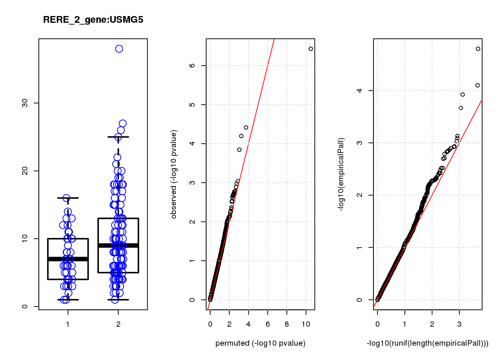
[1] "RERE_3_gene_edgeR-qlf_Neg2.Rd"
logFC logCPM F PValue FDR empiricalP empiricalP.FDR
ID3 1.00 8.0 8.8 0.0030 1 0.0026 1
HIPK2 0.73 6.9 8.6 0.0034 1 0.0029 1
FKBP10 0.66 7.2 8.5 0.0035 1 0.0030 1
PFDN4 -0.55 8.2 8.5 0.0036 1 0.0031 1
RP11-620J15.3 -1.00 6.8 8.4 0.0037 1 0.0031 1
SURF1 -0.86 7.0 8.1 0.0045 1 0.0037 1
LSM1 -0.59 7.5 7.7 0.0054 1 0.0043 1
ETFA -0.63 7.4 7.7 0.0056 1 0.0045 1
RP11-21N3.1 -0.62 7.5 7.6 0.0057 1 0.0046 1
COMMD9 -0.63 7.5 7.5 0.0063 1 0.0050 1
1e-04 NA NA NA NA NA NA NA
1e-05 NA NA NA NA NA NA NA
1e-06 NA NA NA NA NA NA NA
1e-07 NA NA NA NA NA NA NA
1e-08 NA NA NA NA NA NA NA
1e-09 NA NA NA NA NA NA NA
1e-10 NA NA NA NA NA NA NA
#in_real #in_perm EmpiricalFDR
ID3 1 11.000 11.0
HIPK2 2 12.000 6.0
FKBP10 3 12.000 4.1
PFDN4 4 13.000 3.2
RP11-620J15.3 5 13.000 2.6
SURF1 6 16.000 2.6
LSM1 7 18.000 2.6
ETFA 8 19.000 2.3
RP11-21N3.1 9 19.000 2.2
COMMD9 10 21.000 2.1
1e-04 0 0.500 Inf
1e-05 0 0.067 Inf
1e-06 0 0.067 Inf
1e-07 0 0.067 Inf
1e-08 0 0.033 Inf
1e-09 0 0.000 NaN
1e-10 0 0.000 NaN
[1] "SETD1A_1st_exon_1_gene_edgeR-qlf_Neg2.Rd"
logFC logCPM F PValue FDR empiricalP empiricalP.FDR #in_real
LRIF1 -1.40 6.9 11.0 0.00071 1 0.00068 0.99 1
ITGAE -0.69 7.7 10.0 0.00150 1 0.00130 0.99 2
ACIN1 -0.76 7.6 10.0 0.00160 1 0.00130 0.99 3
SFRP2 1.10 7.0 9.8 0.00180 1 0.00150 0.99 4
MAP1A -1.40 7.0 9.6 0.00190 1 0.00170 0.99 5
MSL3 -1.30 6.6 9.6 0.00200 1 0.00170 0.99 6
UBE2J2 -0.68 7.4 9.0 0.00270 1 0.00230 0.99 7
CCAR1 -0.68 7.6 8.8 0.00310 1 0.00270 0.99 8
HES6 -1.50 9.0 8.8 0.00310 1 0.00270 0.99 9
CARD19 -1.20 6.7 8.6 0.00340 1 0.00300 0.99 10
1e-04 NA NA NA NA NA NA NA 0
1e-05 NA NA NA NA NA NA NA 0
1e-06 NA NA NA NA NA NA NA 0
1e-07 NA NA NA NA NA NA NA 0
1e-08 NA NA NA NA NA NA NA 0
1e-09 NA NA NA NA NA NA NA 0
1e-10 NA NA NA NA NA NA NA 0
#in_perm EmpiricalFDR
LRIF1 2.800 2.8
ITGAE 5.200 2.6
ACIN1 5.500 1.8
SFRP2 6.400 1.6
MAP1A 7.000 1.4
MSL3 7.000 1.2
UBE2J2 9.800 1.4
CCAR1 11.000 1.4
HES6 11.000 1.2
CARD19 13.000 1.3
1e-04 0.530 Inf
1e-05 0.270 Inf
1e-06 0.130 Inf
1e-07 0.033 Inf
1e-08 0.033 Inf
1e-09 0.033 Inf
1e-10 0.033 Inf
[1] "SETD1A_1st_exon_2_gene_edgeR-qlf_Neg2.Rd"
logFC logCPM F PValue FDR empiricalP empiricalP.FDR #in_real
CALD1 1.00 7.9 28 1.2e-07 0.00051 0.0e+00 0.000 1
MYL9 1.30 7.6 22 2.9e-06 0.00600 5.6e-05 0.089 2
CD59 0.91 7.0 19 1.2e-05 0.01700 8.8e-05 0.089 3
CSRP1 1.10 7.1 18 2.7e-05 0.02800 1.0e-04 0.089 4
RAB13 0.67 7.9 17 4.0e-05 0.03300 1.1e-04 0.089 5
TPM2 1.30 7.2 16 5.3e-05 0.03700 1.3e-04 0.089 6
PDLIM1 0.89 7.2 15 9.8e-05 0.05800 1.7e-04 0.100 7
G6PD 0.91 7.0 15 1.3e-04 0.06700 1.9e-04 0.100 8
ARL6IP5 0.72 7.2 13 2.5e-04 0.11000 3.0e-04 0.140 9
TOR1A 0.82 6.7 13 2.9e-04 0.12000 3.3e-04 0.140 10
1e-04 NA NA NA NA NA NA NA 7
1e-05 NA NA NA NA NA NA NA 2
1e-06 NA NA NA NA NA NA NA 1
1e-07 NA NA NA NA NA NA NA 0
1e-08 NA NA NA NA NA NA NA 0
1e-09 NA NA NA NA NA NA NA 0
1e-10 NA NA NA NA NA NA NA 0
#in_perm EmpiricalFDR
CALD1 0.00 0.000
MYL9 0.23 0.120
CD59 0.37 0.120
CSRP1 0.43 0.110
RAB13 0.47 0.093
TPM2 0.53 0.089
PDLIM1 0.70 0.100
G6PD 0.80 0.100
ARL6IP5 1.20 0.140
TOR1A 1.40 0.140
1e-04 0.70 0.100
1e-05 0.37 0.180
1e-06 0.13 0.130
1e-07 0.00 NaN
1e-08 0.00 NaN
1e-09 0.00 NaN
1e-10 0.00 NaN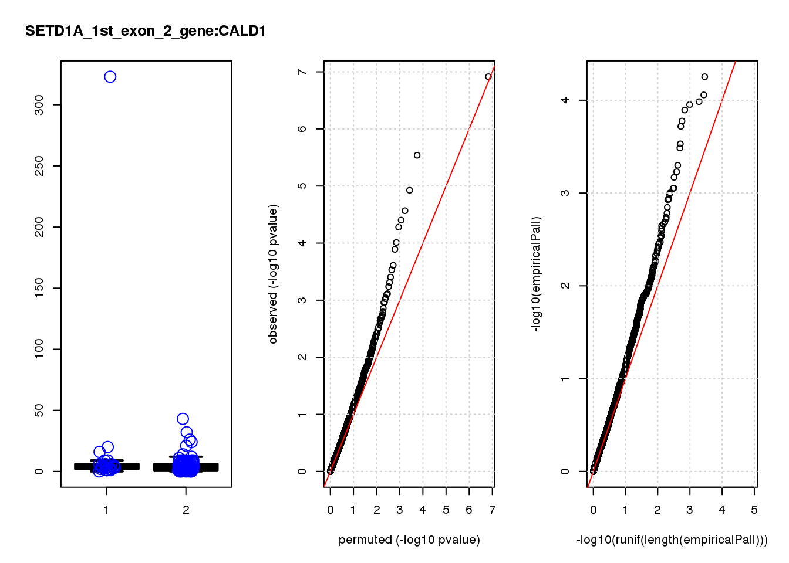
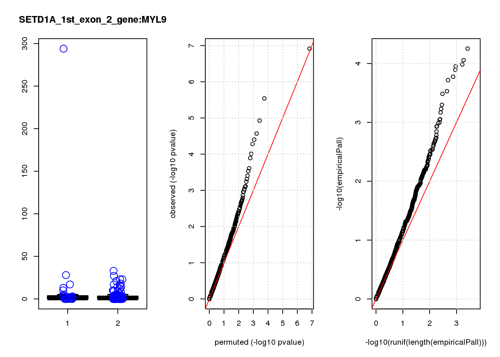
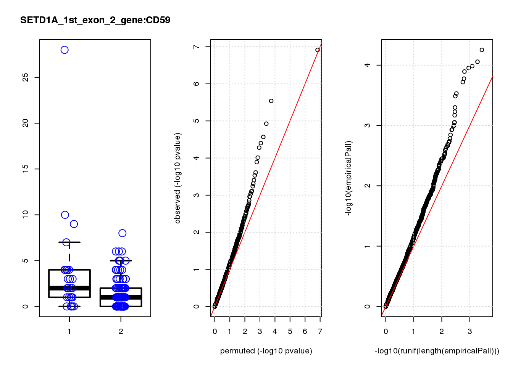
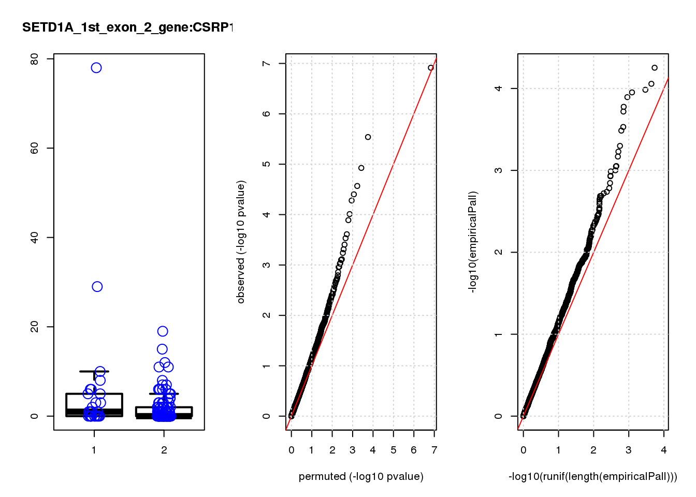
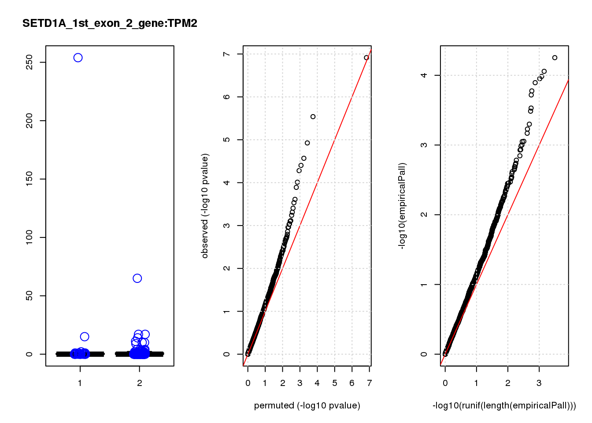
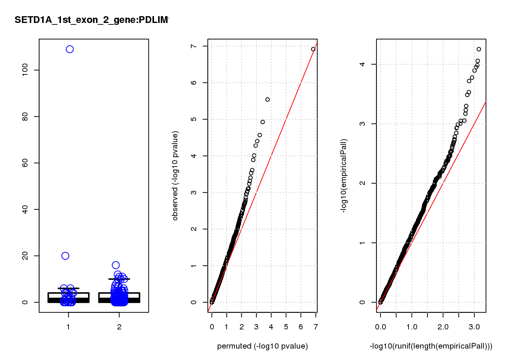
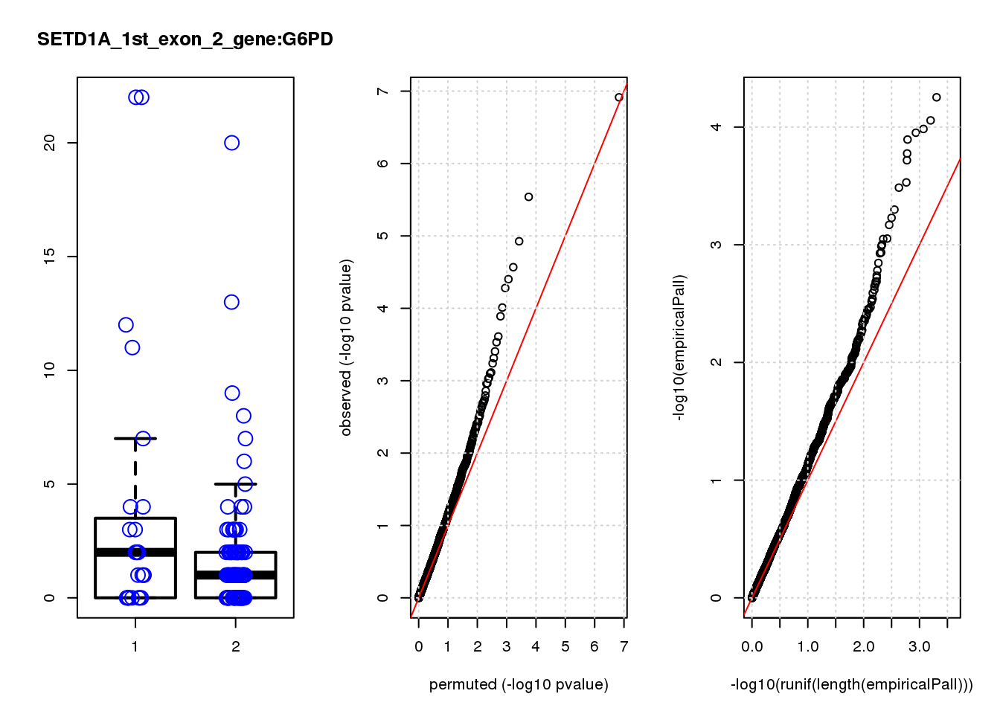

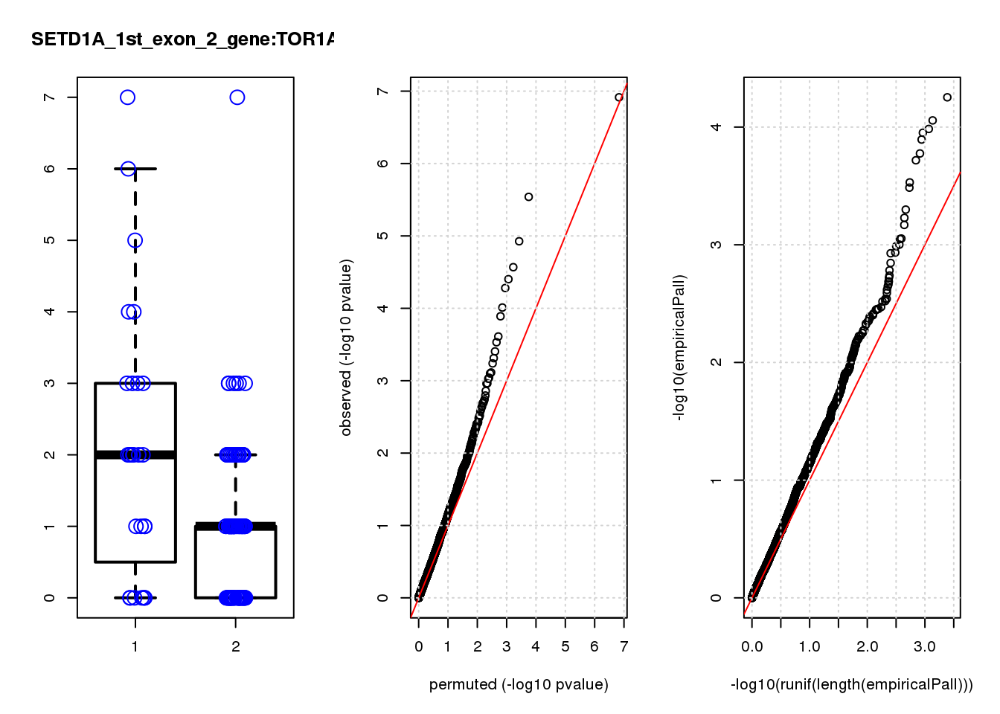
[1] "SETD1A_1st_exon_3_gene_edgeR-qlf_Neg2.Rd"
logFC logCPM F PValue FDR empiricalP empiricalP.FDR #in_real
UBB -4.2 9.7 23 1.6e-06 0.0068 0.00008 0.33 1
COX11 -4.3 7.2 11 8.4e-04 0.6000 0.00130 0.74 2
CREB3 -4.2 7.2 11 9.8e-04 0.6000 0.00140 0.74 3
CST3 -2.2 8.2 11 1.2e-03 0.6000 0.00160 0.74 4
PPP1R12A -4.1 7.1 10 1.2e-03 0.6000 0.00160 0.74 5
ATF5 2.2 7.0 10 1.2e-03 0.6000 0.00160 0.74 6
NPDC1 -4.3 7.2 10 1.3e-03 0.6000 0.00160 0.74 7
SEPHS2 1.9 6.8 10 1.3e-03 0.6000 0.00160 0.74 8
BFAR -4.0 7.1 10 1.3e-03 0.6000 0.00170 0.74 9
FXYD6 -3.3 7.9 10 1.4e-03 0.6000 0.00180 0.74 10
1e-04 NA NA NA NA NA NA NA 1
1e-05 NA NA NA NA NA NA NA 1
1e-06 NA NA NA NA NA NA NA 0
1e-07 NA NA NA NA NA NA NA 0
1e-08 NA NA NA NA NA NA NA 0
1e-09 NA NA NA NA NA NA NA 0
1e-10 NA NA NA NA NA NA NA 0
#in_perm EmpiricalFDR
UBB 0.330 0.33
COX11 5.400 2.70
CREB3 5.900 2.00
CST3 6.600 1.60
PPP1R12A 6.800 1.40
ATF5 6.800 1.10
NPDC1 6.800 0.98
SEPHS2 6.800 0.85
BFAR 7.100 0.79
FXYD6 7.700 0.77
1e-04 1.400 1.40
1e-05 0.670 0.67
1e-06 0.270 Inf
1e-07 0.230 Inf
1e-08 0.170 Inf
1e-09 0.100 Inf
1e-10 0.067 Inf
[1] "STAT6_1_gene_edgeR-qlf_Neg2.Rd"
logFC logCPM F PValue FDR empiricalP empiricalP.FDR #in_real
EIF2D -1.20 6.8 12.0 0.00059 1 0.00072 1 1
KMT2E -0.85 7.3 9.3 0.00230 1 0.00210 1 2
ARMCX3 -0.91 7.1 8.6 0.00340 1 0.00310 1 3
PDCD11 -1.10 6.7 8.6 0.00340 1 0.00310 1 4
MAP6 -1.20 6.7 8.3 0.00400 1 0.00360 1 5
RAB28 0.69 6.8 7.9 0.00490 1 0.00430 1 6
NAA35 -0.99 6.7 7.9 0.00490 1 0.00430 1 7
SLC25A13 0.67 6.8 7.6 0.00570 1 0.00510 1 8
MYH9 -1.10 6.9 7.5 0.00620 1 0.00560 1 9
HNRNPM 0.34 9.6 7.5 0.00630 1 0.00560 1 10
1e-04 NA NA NA NA NA NA NA 0
1e-05 NA NA NA NA NA NA NA 0
1e-06 NA NA NA NA NA NA NA 0
1e-07 NA NA NA NA NA NA NA 0
1e-08 NA NA NA NA NA NA NA 0
1e-09 NA NA NA NA NA NA NA 0
1e-10 NA NA NA NA NA NA NA 0
#in_perm EmpiricalFDR
EIF2D 3.000 3.0
KMT2E 8.700 4.3
ARMCX3 13.000 4.3
PDCD11 13.000 3.2
MAP6 15.000 3.0
RAB28 18.000 3.0
NAA35 18.000 2.5
SLC25A13 21.000 2.6
MYH9 23.000 2.6
HNRNPM 24.000 2.4
1e-04 1.500 Inf
1e-05 0.430 Inf
1e-06 0.300 Inf
1e-07 0.200 Inf
1e-08 0.100 Inf
1e-09 0.067 Inf
1e-10 0.067 Inf
[1] "STAT6_2_gene_edgeR-qlf_Neg2.Rd"
logFC logCPM F PValue FDR empiricalP empiricalP.FDR #in_real
TP53I3 1.00 6.9 17 0.00003 0.13 0.00021 0.59 1
NUDT14 0.72 6.9 14 0.00021 0.45 0.00051 0.59 2
TP53TG1 0.84 6.7 12 0.00043 0.51 0.00083 0.59 3
PLTP 0.66 7.1 12 0.00064 0.51 0.00100 0.59 4
ERCC1 -0.55 7.6 11 0.00073 0.51 0.00120 0.59 5
GANAB -0.69 7.2 11 0.00120 0.51 0.00170 0.59 6
GTF2H2 -1.10 6.7 10 0.00120 0.51 0.00170 0.59 7
ACSL3 0.72 6.6 10 0.00120 0.51 0.00170 0.59 8
FJX1 -0.96 6.9 10 0.00120 0.51 0.00170 0.59 9
YIPF5 -0.86 6.8 10 0.00130 0.51 0.00180 0.59 10
1e-04 NA NA NA NA NA NA NA 1
1e-05 NA NA NA NA NA NA NA 0
1e-06 NA NA NA NA NA NA NA 0
1e-07 NA NA NA NA NA NA NA 0
1e-08 NA NA NA NA NA NA NA 0
1e-09 NA NA NA NA NA NA NA 0
1e-10 NA NA NA NA NA NA NA 0
#in_perm EmpiricalFDR
TP53I3 0.870 0.87
NUDT14 2.100 1.10
TP53TG1 3.500 1.20
PLTP 4.200 1.00
ERCC1 4.900 0.97
GANAB 7.000 1.20
GTF2H2 7.100 1.00
ACSL3 7.100 0.88
FJX1 7.100 0.79
YIPF5 7.600 0.76
1e-04 1.400 1.40
1e-05 0.570 Inf
1e-06 0.170 Inf
1e-07 0.067 Inf
1e-08 0.067 Inf
1e-09 0.033 Inf
1e-10 0.033 Inf
[1] "STAT6_3_gene_edgeR-qlf_Neg2.Rd"
logFC logCPM F PValue FDR empiricalP empiricalP.FDR #in_real
PLK1 -1.50 7.5 18 2.3e-05 0.094 7.2e-05 0.30 1
ALPL 0.73 6.9 14 1.5e-04 0.310 2.2e-04 0.38 2
CCNB1 -1.10 7.5 14 2.2e-04 0.310 2.7e-04 0.38 3
UBE2C -1.20 8.3 12 4.3e-04 0.360 4.7e-04 0.40 4
UBE2S -0.70 8.9 12 4.3e-04 0.360 4.8e-04 0.40 5
TACC3 -1.00 6.9 12 5.5e-04 0.360 6.0e-04 0.41 6
PTTG1 -0.85 8.5 12 6.1e-04 0.360 6.8e-04 0.41 7
HMMR -1.10 6.8 11 9.6e-04 0.500 1.0e-03 0.50 8
CDC20 -0.93 7.7 11 1.2e-03 0.530 1.3e-03 0.50 9
CENPA -0.97 7.0 10 1.3e-03 0.530 1.3e-03 0.50 10
1e-04 NA NA NA NA NA NA NA 1
1e-05 NA NA NA NA NA NA NA 0
1e-06 NA NA NA NA NA NA NA 0
1e-07 NA NA NA NA NA NA NA 0
1e-08 NA NA NA NA NA NA NA 0
1e-09 NA NA NA NA NA NA NA 0
1e-10 NA NA NA NA NA NA NA 0
#in_perm EmpiricalFDR
PLK1 0.300 0.30
ALPL 0.900 0.45
CCNB1 1.100 0.38
UBE2C 2.000 0.49
UBE2S 2.000 0.40
TACC3 2.500 0.42
PTTG1 2.900 0.41
HMMR 4.400 0.55
CDC20 5.300 0.59
CENPA 5.500 0.55
1e-04 0.700 0.70
1e-05 0.200 Inf
1e-06 0.170 Inf
1e-07 0.067 Inf
1e-08 0.000 NaN
1e-09 0.000 NaN
1e-10 0.000 NaN
[1] "TCF4-ITF2_1_gene_edgeR-qlf_Neg2.Rd"
logFC logCPM F PValue FDR empiricalP empiricalP.FDR #in_real
RPL27A -0.29 12.0 15 9.5e-05 0.16 0.00015 0.22 1
TAGLN -1.20 9.3 15 1.1e-04 0.16 0.00016 0.22 2
RPL37A -0.24 12.0 15 1.2e-04 0.16 0.00016 0.22 3
TMEM170A -0.83 6.9 13 2.5e-04 0.20 0.00029 0.23 4
RPL30 -0.24 12.0 13 2.7e-04 0.20 0.00031 0.23 5
GPI -0.75 7.1 13 2.9e-04 0.20 0.00033 0.23 6
RPL38 -0.24 11.0 13 3.7e-04 0.22 0.00042 0.24 7
RPL36AL -0.29 9.5 12 5.0e-04 0.26 0.00052 0.24 8
PTTG1IP -0.47 8.1 12 6.0e-04 0.26 0.00061 0.24 9
CNPY3 -0.73 7.0 11 7.2e-04 0.26 0.00071 0.24 10
1e-04 NA NA NA NA NA NA NA 1
1e-05 NA NA NA NA NA NA NA 0
1e-06 NA NA NA NA NA NA NA 0
1e-07 NA NA NA NA NA NA NA 0
1e-08 NA NA NA NA NA NA NA 0
1e-09 NA NA NA NA NA NA NA 0
1e-10 NA NA NA NA NA NA NA 0
#in_perm EmpiricalFDR
RPL27A 0.630 0.63
TAGLN 0.670 0.33
RPL37A 0.670 0.22
TMEM170A 1.200 0.31
RPL30 1.300 0.26
GPI 1.400 0.23
RPL38 1.800 0.25
RPL36AL 2.200 0.27
PTTG1IP 2.600 0.29
CNPY3 3.000 0.30
1e-04 0.670 0.67
1e-05 0.170 Inf
1e-06 0.067 Inf
1e-07 0.000 NaN
1e-08 0.000 NaN
1e-09 0.000 NaN
1e-10 0.000 NaN
[1] "TCF4-ITF2_2_gene_edgeR-qlf_Neg2.Rd"
logFC logCPM F PValue FDR empiricalP empiricalP.FDR #in_real
FOS 0.86 6.7 12.0 0.00044 0.95 0.00076 1 1
ZKSCAN1 -0.77 7.1 12.0 0.00047 0.95 0.00079 1 2
THAP4 -0.92 6.7 11.0 0.00084 0.95 0.00110 1 3
PHLDA1 -1.30 7.0 11.0 0.00091 0.95 0.00130 1 4
NEFM -1.30 7.5 10.0 0.00120 1.00 0.00160 1 5
BCLAF1 -0.47 7.7 8.8 0.00300 1.00 0.00330 1 6
PTOV1 0.33 8.1 8.8 0.00310 1.00 0.00340 1 7
TUBG1 0.48 7.2 8.6 0.00330 1.00 0.00370 1 8
TRIM2 0.53 7.0 8.5 0.00350 1.00 0.00390 1 9
BRD4 -0.52 7.3 8.2 0.00410 1.00 0.00430 1 10
1e-04 NA NA NA NA NA NA NA 0
1e-05 NA NA NA NA NA NA NA 0
1e-06 NA NA NA NA NA NA NA 0
1e-07 NA NA NA NA NA NA NA 0
1e-08 NA NA NA NA NA NA NA 0
1e-09 NA NA NA NA NA NA NA 0
1e-10 NA NA NA NA NA NA NA 0
#in_perm EmpiricalFDR
FOS 3.20 3.2
ZKSCAN1 3.30 1.6
THAP4 4.70 1.6
PHLDA1 5.20 1.3
NEFM 6.50 1.3
BCLAF1 14.00 2.3
PTOV1 14.00 2.0
TUBG1 15.00 1.9
TRIM2 16.00 1.8
BRD4 18.00 1.8
1e-04 1.20 Inf
1e-05 0.50 Inf
1e-06 0.30 Inf
1e-07 0.20 Inf
1e-08 0.20 Inf
1e-09 0.17 Inf
1e-10 0.17 Inf
[1] "TCF4-ITF2_3_gene_edgeR-qlf_Neg2.Rd"
logFC logCPM F PValue FDR empiricalP empiricalP.FDR #in_real
LMO4 -2.10 7.0 12.0 0.00052 0.65 0.00093 0.86 1
DIO3 1.60 7.1 11.0 0.00087 0.65 0.00130 0.86 2
MRPS28 -2.30 6.7 11.0 0.00093 0.65 0.00140 0.86 3
COA5 -2.00 6.8 11.0 0.00096 0.65 0.00140 0.86 4
USP9X -2.30 6.7 11.0 0.00100 0.65 0.00150 0.86 5
PCBP1 -0.69 8.6 11.0 0.00100 0.65 0.00150 0.86 6
STARD3 -2.20 6.7 10.0 0.00120 0.65 0.00170 0.86 7
UBN1 -1.90 6.9 10.0 0.00120 0.65 0.00180 0.86 8
CSNK1A1 -1.40 7.3 10.0 0.00150 0.67 0.00200 0.86 9
WDR82 -1.80 6.9 9.8 0.00170 0.67 0.00220 0.86 10
1e-04 NA NA NA NA NA NA NA 0
1e-05 NA NA NA NA NA NA NA 0
1e-06 NA NA NA NA NA NA NA 0
1e-07 NA NA NA NA NA NA NA 0
1e-08 NA NA NA NA NA NA NA 0
1e-09 NA NA NA NA NA NA NA 0
1e-10 NA NA NA NA NA NA NA 0
#in_perm EmpiricalFDR
LMO4 3.90 3.90
DIO3 5.50 2.80
MRPS28 5.90 2.00
COA5 6.00 1.50
USP9X 6.20 1.20
PCBP1 6.30 1.00
STARD3 7.30 1.00
UBN1 7.40 0.92
CSNK1A1 8.40 0.94
WDR82 9.40 0.94
1e-04 1.90 Inf
1e-05 0.93 Inf
1e-06 0.60 Inf
1e-07 0.47 Inf
1e-08 0.27 Inf
1e-09 0.13 Inf
1e-10 0.10 Inf
[1] "TRANK1_1_gene_edgeR-qlf_Neg2.Rd"
logFC logCPM F PValue FDR empiricalP empiricalP.FDR #in_real
SDF2L1 2.1 7.2 16.0 7.9e-05 0.33 0.00046 1 1
INIP 2.0 6.8 12.0 4.8e-04 1.00 0.00092 1 2
PYCR1 2.3 6.8 11.0 1.1e-03 1.00 0.00150 1 3
SEC11C 1.5 7.5 9.3 2.3e-03 1.00 0.00260 1 4
MRPS34 -1.8 8.4 8.9 2.9e-03 1.00 0.00320 1 5
HSPB11 -4.5 7.3 8.3 3.9e-03 1.00 0.00400 1 6
FUNDC2 -2.1 7.8 7.9 5.1e-03 1.00 0.00480 1 7
OTUB1 -1.9 7.9 7.7 5.7e-03 1.00 0.00540 1 8
FXR1 -2.6 7.5 7.6 5.9e-03 1.00 0.00560 1 9
ACO2 -4.1 7.1 7.5 6.0e-03 1.00 0.00570 1 10
1e-04 NA NA NA NA NA NA NA 1
1e-05 NA NA NA NA NA NA NA 0
1e-06 NA NA NA NA NA NA NA 0
1e-07 NA NA NA NA NA NA NA 0
1e-08 NA NA NA NA NA NA NA 0
1e-09 NA NA NA NA NA NA NA 0
1e-10 NA NA NA NA NA NA NA 0
#in_perm EmpiricalFDR
SDF2L1 1.900 1.9
INIP 3.900 1.9
PYCR1 6.200 2.1
SEC11C 11.000 2.7
MRPS34 13.000 2.7
HSPB11 17.000 2.8
FUNDC2 20.000 2.9
OTUB1 23.000 2.8
FXR1 24.000 2.6
ACO2 24.000 2.4
1e-04 2.200 2.2
1e-05 1.000 Inf
1e-06 0.670 Inf
1e-07 0.370 Inf
1e-08 0.200 Inf
1e-09 0.100 Inf
1e-10 0.067 Inf
[1] "TRANK1_2_gene_edgeR-qlf_Neg2.Rd"
logFC logCPM F PValue FDR empiricalP empiricalP.FDR #in_real
TMEM230 -0.65 8.0 12.0 0.00067 1 0.0011 1 1
UGP2 -1.10 7.1 11.0 0.00097 1 0.0013 1 2
FAM133B 0.67 7.4 10.0 0.00150 1 0.0018 1 3
GNAQ -1.40 6.7 10.0 0.00160 1 0.0019 1 4
SNRNP200 -1.00 7.0 9.0 0.00270 1 0.0029 1 5
CCNK 0.76 6.9 8.4 0.00380 1 0.0038 1 6
MLLT10 0.80 6.7 8.1 0.00440 1 0.0044 1 7
CD63 -0.57 9.3 7.9 0.00510 1 0.0050 1 8
NQO1 -1.80 7.5 7.6 0.00570 1 0.0054 1 9
DLL1 1.20 6.9 7.6 0.00590 1 0.0056 1 10
1e-04 NA NA NA NA NA NA NA 0
1e-05 NA NA NA NA NA NA NA 0
1e-06 NA NA NA NA NA NA NA 0
1e-07 NA NA NA NA NA NA NA 0
1e-08 NA NA NA NA NA NA NA 0
1e-09 NA NA NA NA NA NA NA 0
1e-10 NA NA NA NA NA NA NA 0
#in_perm EmpiricalFDR
TMEM230 4.50 4.5
UGP2 5.60 2.8
FAM133B 7.50 2.5
GNAQ 7.90 2.0
SNRNP200 12.00 2.4
CCNK 16.00 2.7
MLLT10 18.00 2.6
CD63 21.00 2.6
NQO1 23.00 2.5
DLL1 23.00 2.3
1e-04 1.70 Inf
1e-05 0.73 Inf
1e-06 0.37 Inf
1e-07 0.20 Inf
1e-08 0.13 Inf
1e-09 0.10 Inf
1e-10 0.10 Inf
[1] "TRANK1_3_gene_edgeR-qlf_Neg2.Rd"
logFC logCPM F PValue FDR empiricalP empiricalP.FDR #in_real
CCT7 0.26 8.8 12.0 0.00052 1 0.00074 1 1
RPRD1A 0.50 6.9 11.0 0.00079 1 0.00098 1 2
UBE2E3 -0.33 8.9 11.0 0.00087 1 0.00100 1 3
TIMM21 0.52 6.8 9.9 0.00170 1 0.00200 1 4
HMGCR -0.65 7.0 9.8 0.00180 1 0.00200 1 5
PHF20L1 -0.53 7.0 9.7 0.00190 1 0.00220 1 6
ADSL 0.37 7.4 9.4 0.00210 1 0.00240 1 7
RPUSD1 -0.60 6.7 9.4 0.00210 1 0.00240 1 8
CITED2 0.46 7.4 9.3 0.00230 1 0.00260 1 9
PYURF -0.31 7.9 9.0 0.00270 1 0.00290 1 10
1e-04 NA NA NA NA NA NA NA 0
1e-05 NA NA NA NA NA NA NA 0
1e-06 NA NA NA NA NA NA NA 0
1e-07 NA NA NA NA NA NA NA 0
1e-08 NA NA NA NA NA NA NA 0
1e-09 NA NA NA NA NA NA NA 0
1e-10 NA NA NA NA NA NA NA 0
#in_perm EmpiricalFDR
CCT7 3.100 3.1
RPRD1A 4.100 2.1
UBE2E3 4.400 1.5
TIMM21 8.300 2.1
HMGCR 8.500 1.7
PHF20L1 9.200 1.5
ADSL 10.000 1.4
RPUSD1 10.000 1.3
CITED2 11.000 1.2
PYURF 12.000 1.2
1e-04 1.000 Inf
1e-05 0.330 Inf
1e-06 0.130 Inf
1e-07 0.130 Inf
1e-08 0.100 Inf
1e-09 0.067 Inf
1e-10 0.033 Inf
[1] "UBE2Q2P1_1_gene_edgeR-qlf_Neg2.Rd"
logFC logCPM F PValue FDR empiricalP empiricalP.FDR #in_real
JAG1 1.90 6.8 22 3.1e-06 0.013 4.8e-05 0.13 1
SERPINH1 1.10 7.7 19 1.4e-05 0.029 6.4e-05 0.13 2
RCN1 0.89 8.7 15 9.8e-05 0.140 1.9e-04 0.27 3
MGST1 1.10 7.8 12 5.3e-04 0.400 5.9e-04 0.36 4
SGO1 -2.80 6.8 12 5.9e-04 0.400 6.4e-04 0.36 5
DNAJB1 1.20 6.7 11 7.5e-04 0.400 7.4e-04 0.36 6
PHB2 0.58 8.6 11 7.8e-04 0.400 7.5e-04 0.36 7
HSP90AA1 0.65 10.0 11 8.3e-04 0.400 7.7e-04 0.36 8
TRIM8 -2.10 6.8 11 8.5e-04 0.400 7.7e-04 0.36 9
CLIC1 0.90 8.7 11 1.2e-03 0.460 9.9e-04 0.38 10
1e-04 NA NA NA NA NA NA NA 3
1e-05 NA NA NA NA NA NA NA 1
1e-06 NA NA NA NA NA NA NA 0
1e-07 NA NA NA NA NA NA NA 0
1e-08 NA NA NA NA NA NA NA 0
1e-09 NA NA NA NA NA NA NA 0
1e-10 NA NA NA NA NA NA NA 0
#in_perm EmpiricalFDR
JAG1 0.200 0.20
SERPINH1 0.270 0.13
RCN1 0.800 0.27
MGST1 2.500 0.62
SGO1 2.700 0.53
DNAJB1 3.100 0.52
PHB2 3.100 0.45
HSP90AA1 3.200 0.40
TRIM8 3.200 0.36
CLIC1 4.100 0.41
1e-04 0.800 0.27
1e-05 0.200 0.20
1e-06 0.130 Inf
1e-07 0.130 Inf
1e-08 0.033 Inf
1e-09 0.033 Inf
1e-10 0.033 Inf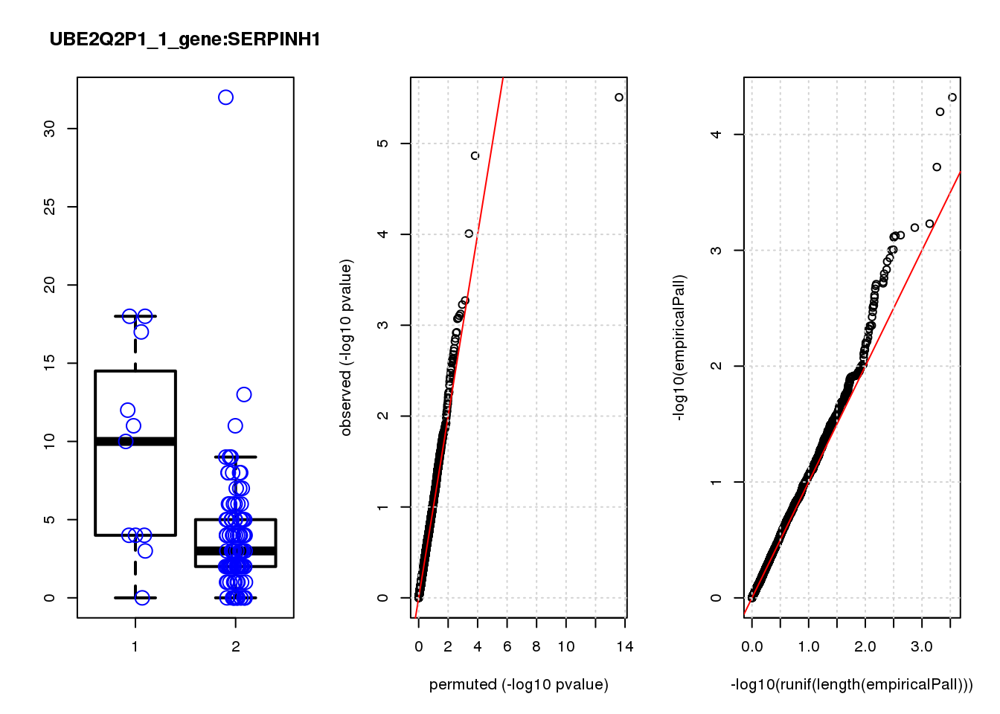
[1] "UBE2Q2P1_2_gene_edgeR-qlf_Neg2.Rd"
logFC logCPM F PValue FDR empiricalP empiricalP.FDR #in_real
ATP5B 0.77 9.5 15 9.3e-05 0.20 0.00029 0.52 1
TERF2IP 1.50 7.4 15 9.6e-05 0.20 0.00030 0.52 2
ARF4 1.10 8.3 12 4.5e-04 0.42 0.00070 0.52 3
UFSP2 -2.60 6.9 12 4.5e-04 0.42 0.00070 0.52 4
SFRP1 -4.10 7.1 12 6.7e-04 0.42 0.00096 0.52 5
CA2 1.60 7.1 11 7.7e-04 0.42 0.00110 0.52 6
PITHD1 1.10 7.3 11 8.0e-04 0.42 0.00110 0.52 7
PABPC1 -0.74 10.0 11 8.1e-04 0.42 0.00110 0.52 8
YKT6 1.20 7.0 11 9.6e-04 0.42 0.00120 0.52 9
PPP1R2 1.30 6.7 11 1.0e-03 0.42 0.00130 0.52 10
1e-04 NA NA NA NA NA NA NA 2
1e-05 NA NA NA NA NA NA NA 0
1e-06 NA NA NA NA NA NA NA 0
1e-07 NA NA NA NA NA NA NA 0
1e-08 NA NA NA NA NA NA NA 0
1e-09 NA NA NA NA NA NA NA 0
1e-10 NA NA NA NA NA NA NA 0
#in_perm EmpiricalFDR
ATP5B 1.200 1.20
TERF2IP 1.300 0.63
ARF4 2.900 0.98
UFSP2 2.900 0.73
SFRP1 4.000 0.81
CA2 4.500 0.76
PITHD1 4.600 0.66
PABPC1 4.600 0.58
YKT6 5.200 0.57
PPP1R2 5.300 0.53
1e-04 1.300 0.63
1e-05 0.430 Inf
1e-06 0.200 Inf
1e-07 0.100 Inf
1e-08 0.067 Inf
1e-09 0.067 Inf
1e-10 0.067 Inf
[1] "UBE2Q2P1_3_gene_edgeR-qlf_Neg2.Rd"
logFC logCPM F PValue FDR empiricalP empiricalP.FDR #in_real
NAV1 1.40 6.7 15.0 0.00012 0.5 0.00031 1 1
CAMLG -1.10 7.6 11.0 0.00095 1.0 0.00120 1 2
REEP2 -2.20 6.9 10.0 0.00150 1.0 0.00160 1 3
PRKAB1 -1.90 6.8 8.8 0.00310 1.0 0.00270 1 4
CDKN1B -1.90 6.7 8.4 0.00380 1.0 0.00330 1 5
C1orf43 -0.66 8.5 8.2 0.00420 1.0 0.00350 1 6
FBXW5 -1.70 6.8 8.0 0.00470 1.0 0.00390 1 7
SF3B3 -1.60 6.8 7.9 0.00500 1.0 0.00410 1 8
MRPS12 -0.86 7.7 7.8 0.00510 1.0 0.00420 1 9
RGS20 -1.40 7.1 7.8 0.00520 1.0 0.00430 1 10
1e-04 NA NA NA NA NA NA NA 0
1e-05 NA NA NA NA NA NA NA 0
1e-06 NA NA NA NA NA NA NA 0
1e-07 NA NA NA NA NA NA NA 0
1e-08 NA NA NA NA NA NA NA 0
1e-09 NA NA NA NA NA NA NA 0
1e-10 NA NA NA NA NA NA NA 0
#in_perm EmpiricalFDR
NAV1 1.30 1.3
CAMLG 5.00 2.5
REEP2 6.70 2.2
PRKAB1 11.00 2.8
CDKN1B 14.00 2.8
C1orf43 15.00 2.5
FBXW5 16.00 2.3
SF3B3 17.00 2.2
MRPS12 18.00 2.0
RGS20 18.00 1.8
1e-04 1.20 Inf
1e-05 0.50 Inf
1e-06 0.30 Inf
1e-07 0.23 Inf
1e-08 0.00 NaN
1e-09 0.00 NaN
1e-10 0.00 NaN
[1] "VPS45_1_gene_edgeR-qlf_Neg2.Rd"
logFC logCPM F PValue FDR empiricalP empiricalP.FDR #in_real
PTN 1.90 7.9 34 5.7e-09 2.4e-05 2.4e-05 0.050 1
IFITM3 2.00 8.6 30 3.8e-08 7.9e-05 3.2e-05 0.050 2
CLU 1.70 7.4 27 1.9e-07 2.6e-04 4.8e-05 0.050 3
CTSC 1.70 6.7 27 2.5e-07 2.6e-04 4.8e-05 0.050 4
GPM6B 1.00 8.5 23 1.7e-06 1.4e-03 7.2e-05 0.060 5
CD47 1.40 7.0 20 6.6e-06 4.6e-03 1.1e-04 0.075 6
WLS 1.40 7.0 18 2.0e-05 1.1e-02 1.4e-04 0.075 7
RCN1 0.92 8.7 18 2.0e-05 1.1e-02 1.4e-04 0.075 8
ORC6 -2.20 7.3 14 1.9e-04 8.8e-02 3.8e-04 0.180 9
FUCA2 1.30 6.6 13 3.0e-04 1.3e-01 5.3e-04 0.220 10
1e-04 NA NA NA NA NA NA NA 8
1e-05 NA NA NA NA NA NA NA 6
1e-06 NA NA NA NA NA NA NA 4
1e-07 NA NA NA NA NA NA NA 2
1e-08 NA NA NA NA NA NA NA 1
1e-09 NA NA NA NA NA NA NA 0
1e-10 NA NA NA NA NA NA NA 0
#in_perm EmpiricalFDR
PTN 0.100 0.100
IFITM3 0.130 0.067
CLU 0.200 0.067
CTSC 0.200 0.050
GPM6B 0.300 0.060
CD47 0.470 0.078
WLS 0.600 0.086
RCN1 0.600 0.075
ORC6 1.600 0.180
FUCA2 2.200 0.220
1e-04 1.200 0.150
1e-05 0.500 0.083
1e-06 0.300 0.075
1e-07 0.200 0.100
1e-08 0.100 0.100
1e-09 0.067 Inf
1e-10 0.033 Inf
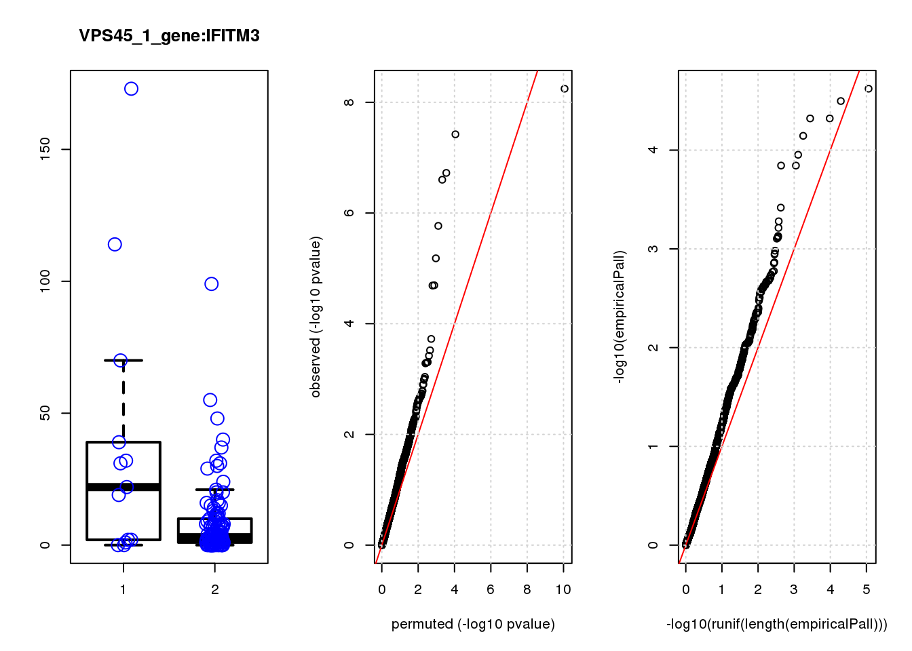
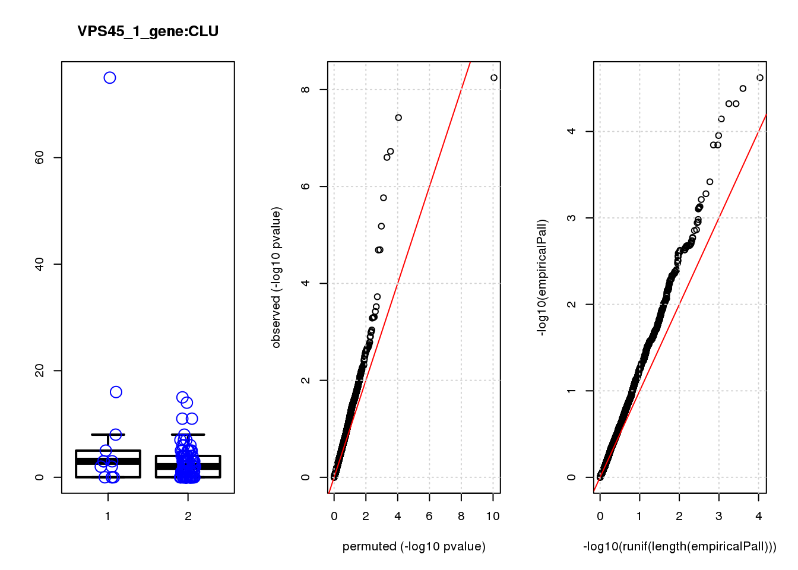
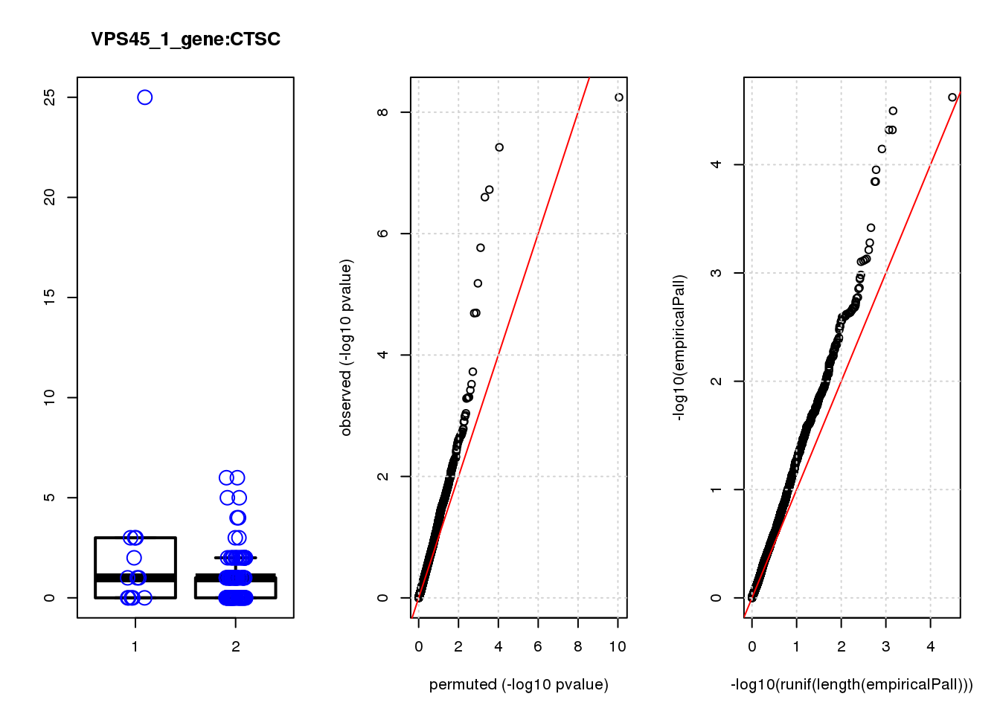
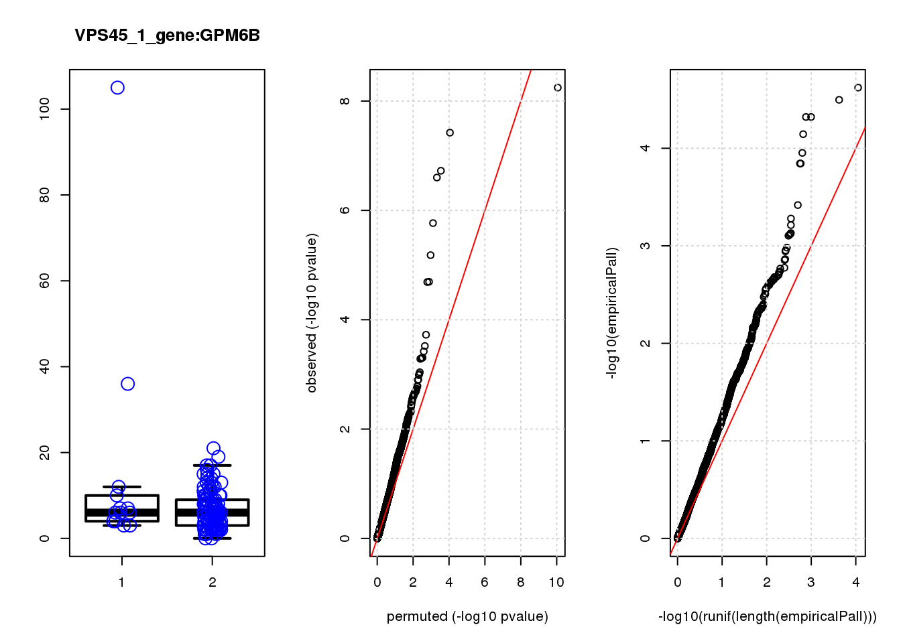
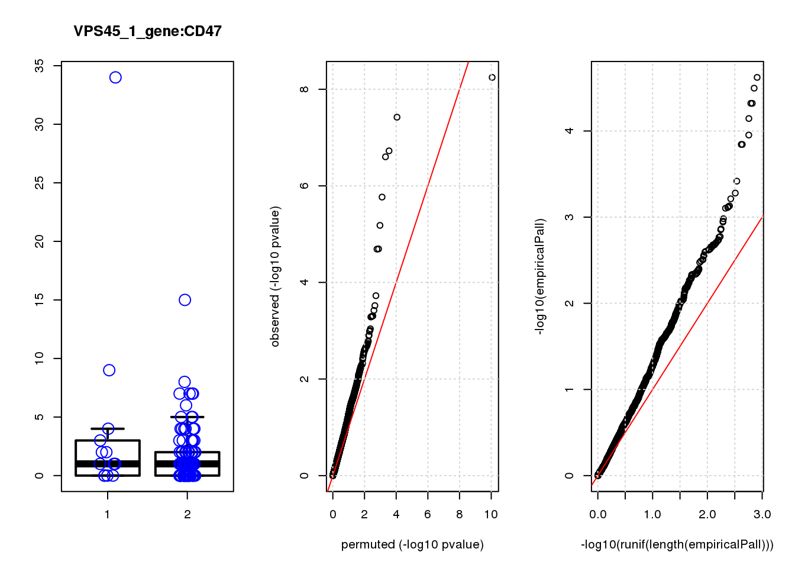
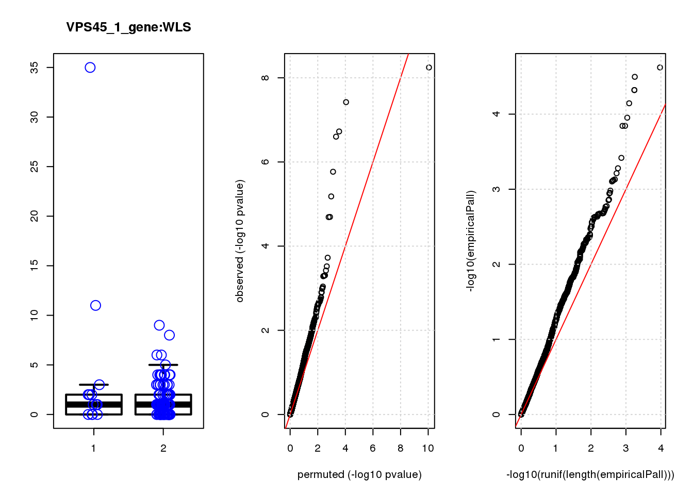
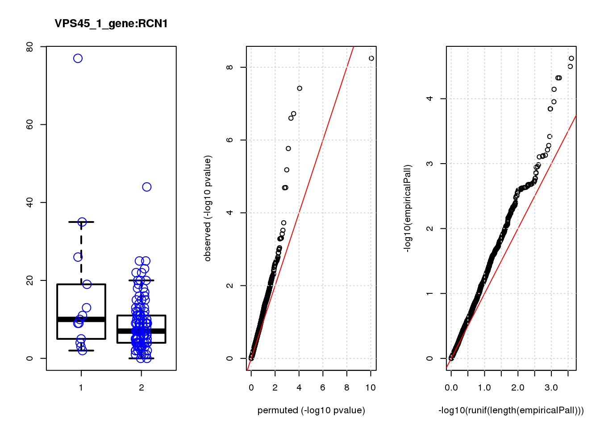
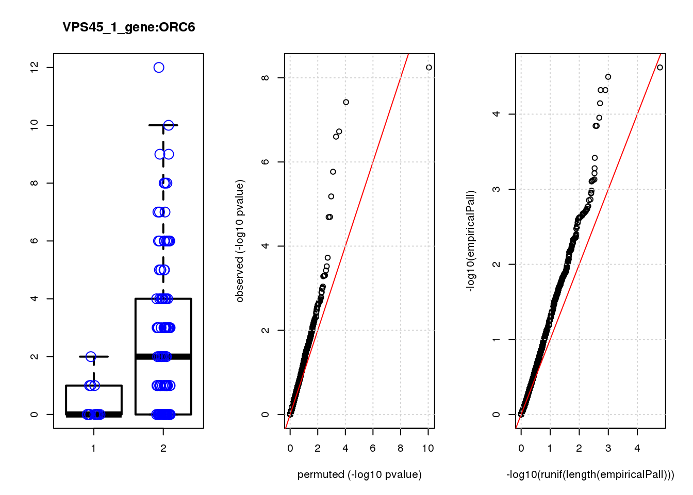
[1] "VPS45_2_gene_edgeR-qlf_Neg2.Rd"
logFC logCPM F PValue FDR empiricalP empiricalP.FDR #in_real
SUMO3 -0.43 8.0 16 5.7e-05 0.17 0.00030 0.51 1
DLL1 0.96 6.9 16 8.3e-05 0.17 0.00033 0.51 2
MLLT11 0.44 8.7 14 2.3e-04 0.26 0.00060 0.51 3
NEFM 0.80 7.5 13 2.8e-04 0.26 0.00065 0.51 4
CYC1 -0.30 8.8 13 3.1e-04 0.26 0.00070 0.51 5
ISCU -0.42 7.8 11 7.7e-04 0.38 0.00120 0.51 6
RBP1 0.71 7.2 11 8.1e-04 0.38 0.00130 0.51 7
DRAXIN 0.63 6.7 11 8.2e-04 0.38 0.00130 0.51 8
ANKRD11 -0.45 7.6 11 8.2e-04 0.38 0.00130 0.51 9
PCBP4 0.45 8.1 11 1.0e-03 0.43 0.00150 0.51 10
1e-04 NA NA NA NA NA NA NA 2
1e-05 NA NA NA NA NA NA NA 0
1e-06 NA NA NA NA NA NA NA 0
1e-07 NA NA NA NA NA NA NA 0
1e-08 NA NA NA NA NA NA NA 0
1e-09 NA NA NA NA NA NA NA 0
1e-10 NA NA NA NA NA NA NA 0
#in_perm EmpiricalFDR
SUMO3 1.30 1.30
DLL1 1.40 0.68
MLLT11 2.50 0.84
NEFM 2.70 0.68
CYC1 2.90 0.59
ISCU 5.10 0.84
RBP1 5.30 0.76
DRAXIN 5.30 0.67
ANKRD11 5.30 0.59
PCBP4 6.20 0.62
1e-04 1.50 0.75
1e-05 0.67 Inf
1e-06 0.50 Inf
1e-07 0.40 Inf
1e-08 0.27 Inf
1e-09 0.23 Inf
1e-10 0.17 Inf
[1] "VPS45_3_gene_edgeR-qlf_Neg2.Rd"
logFC logCPM F PValue FDR empiricalP empiricalP.FDR #in_real
PCGF2 -3.80 7.0 21 5.7e-06 0.024 0.00010 0.27 1
NKAIN4 2.00 6.9 18 1.9e-05 0.041 0.00013 0.27 2
TXNRD1 1.60 7.1 13 3.6e-04 0.470 0.00068 0.59 3
GNPDA1 1.60 6.8 12 4.5e-04 0.470 0.00074 0.59 4
NELFE -1.30 7.7 12 6.6e-04 0.470 0.00095 0.59 5
CHTF8 -1.80 7.2 12 6.8e-04 0.470 0.00096 0.59 6
CTDSP2 -3.00 6.7 11 1.2e-03 0.620 0.00140 0.59 7
CPE 1.50 6.7 10 1.4e-03 0.620 0.00160 0.59 8
MRPL1 -1.50 7.6 10 1.6e-03 0.620 0.00180 0.59 9
PPIA -0.53 10.0 10 1.6e-03 0.620 0.00180 0.59 10
1e-04 NA NA NA NA NA NA NA 2
1e-05 NA NA NA NA NA NA NA 1
1e-06 NA NA NA NA NA NA NA 0
1e-07 NA NA NA NA NA NA NA 0
1e-08 NA NA NA NA NA NA NA 0
1e-09 NA NA NA NA NA NA NA 0
1e-10 NA NA NA NA NA NA NA 0
#in_perm EmpiricalFDR
PCGF2 0.430 0.43
NKAIN4 0.530 0.27
TXNRD1 2.900 0.96
GNPDA1 3.100 0.78
NELFE 4.000 0.79
CHTF8 4.000 0.67
CTDSP2 5.900 0.84
CPE 6.700 0.84
MRPL1 7.500 0.83
PPIA 7.500 0.75
1e-04 1.500 0.73
1e-05 0.530 0.53
1e-06 0.330 Inf
1e-07 0.200 Inf
1e-08 0.170 Inf
1e-09 0.067 Inf
1e-10 0.067 Inf
sessionInfo()R version 3.5.1 (2018-07-02)
Platform: x86_64-pc-linux-gnu (64-bit)
Running under: Scientific Linux 7.4 (Nitrogen)
Matrix products: default
BLAS/LAPACK: /software/openblas-0.2.19-el7-x86_64/lib/libopenblas_haswellp-r0.2.19.so
locale:
[1] LC_CTYPE=en_US.UTF-8 LC_NUMERIC=C
[3] LC_TIME=en_US.UTF-8 LC_COLLATE=en_US.UTF-8
[5] LC_MONETARY=en_US.UTF-8 LC_MESSAGES=en_US.UTF-8
[7] LC_PAPER=en_US.UTF-8 LC_NAME=C
[9] LC_ADDRESS=C LC_TELEPHONE=C
[11] LC_MEASUREMENT=en_US.UTF-8 LC_IDENTIFICATION=C
attached base packages:
[1] stats graphics grDevices utils datasets methods base
other attached packages:
[1] edgeR_3.24.3 limma_3.38.2 lattice_0.20-38 Matrix_1.2-15
loaded via a namespace (and not attached):
[1] locfit_1.5-9.1 workflowr_1.2.0 Rcpp_1.0.0 digest_0.6.18
[5] rprojroot_1.3-2 grid_3.5.1 backports_1.1.2 git2r_0.23.0
[9] magrittr_1.5 evaluate_0.12 stringi_1.3.1 fs_1.2.6
[13] whisker_0.3-2 rmarkdown_1.10 tools_3.5.1 stringr_1.4.0
[17] glue_1.3.0 yaml_2.2.0 compiler_3.5.1 htmltools_0.3.6
[21] knitr_1.20